| ガールズロボティクス | |
| 白木秋 | |
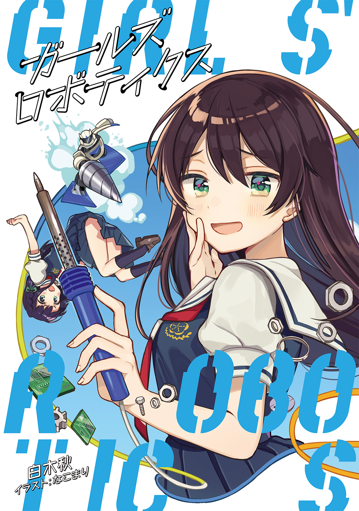
この本は縦書きでレイアウトされています。
また、ご覧になる機種により、表示の差が認められることがあります。
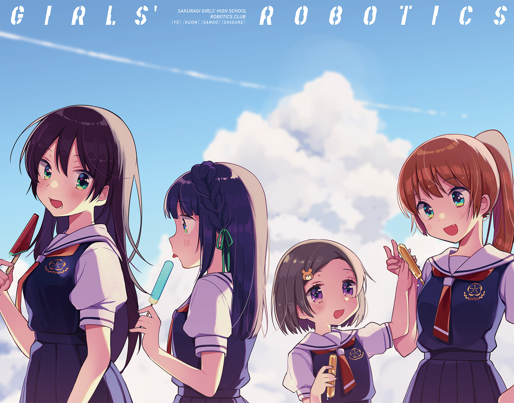
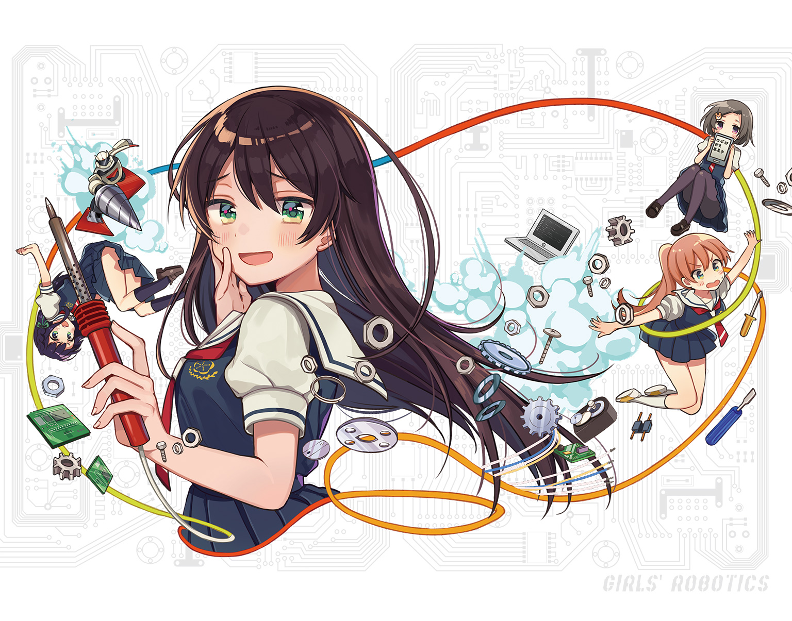
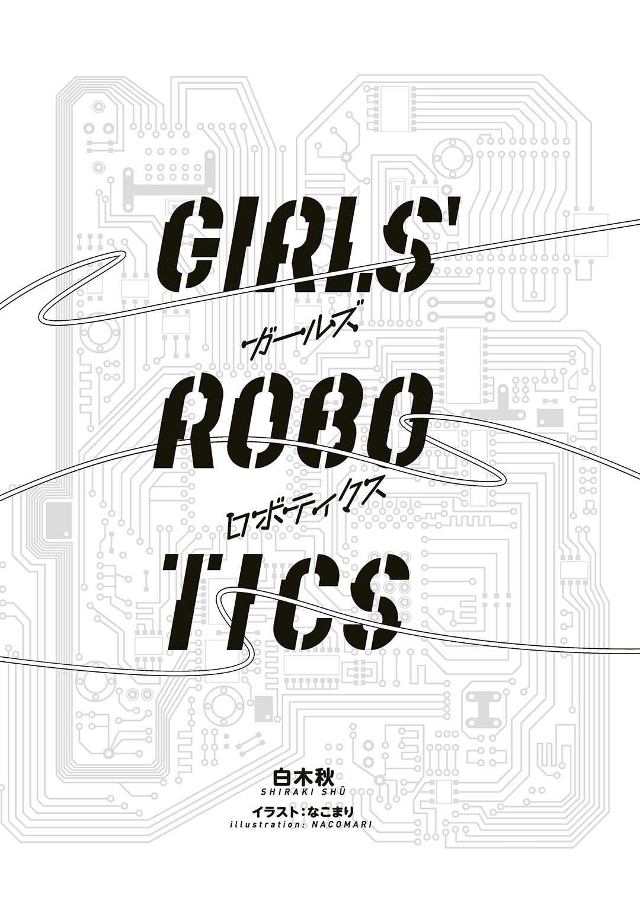
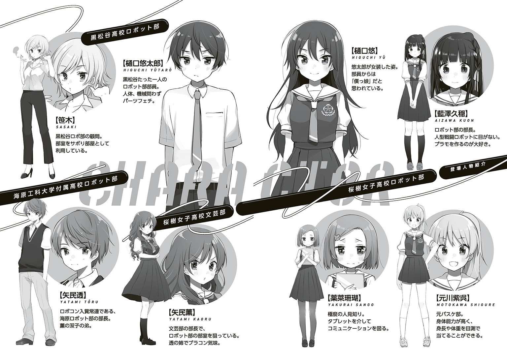
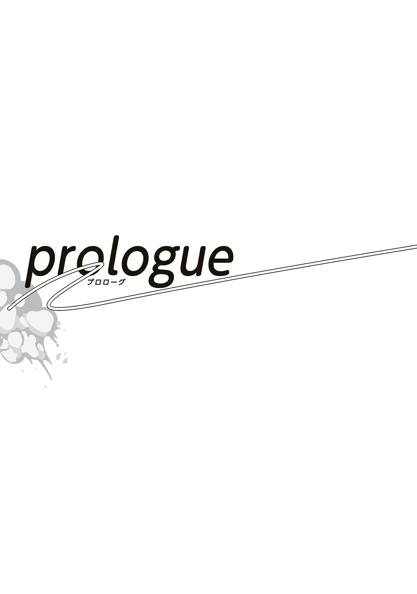
深呼吸して瞼を開くと、そこにいたのは長い黒髪の少女だった。
少なくとも僕の目はそれが少女であると、そう認識した。
胸元に桜の花を模した校章の刺繡があしらわれたブラウスに長いスカート。新品おろしたての制服を着た、初々しさの残る少女。目元がやや鋭い感じがするけど、それを凜々しいととるか、目つきが悪いととるかは、意見が分かれそうだ。
こちらと目が合うと、その少女は驚きと戸惑いの入り混じった不細工な笑みを浮かべていた。
そりゃあそんな顔にもなるよな......。
人間の子供が鏡のなかの自分を見て、そこにいるのが自分であると認識できるようになるのは二歳前後らしい。そうなる前の赤ん坊もこんな心境なのだろうか。
他人に思えない他人がいて、自分に思えない自分がいる。
いま自分はたしかに姿見の前に立っているのに、そこに映った人物に馴染みがなくて、奇妙な感覚にとらわれて戸惑っている。
肯定と否定が交互に積み重なって、思考が堂々巡りになるような感覚。
一度冷静になるために鏡から視線を逸らすと、無造作に床に放置されたファッション誌の煽り文句が偶然目に入った。『夏はもうすぐ！ 服を変えれば世界が変わる！』。
だからって、これは変わりすぎだろう......。
「なかなか似合ってるじゃないの。阿呆にも衣装ってね」
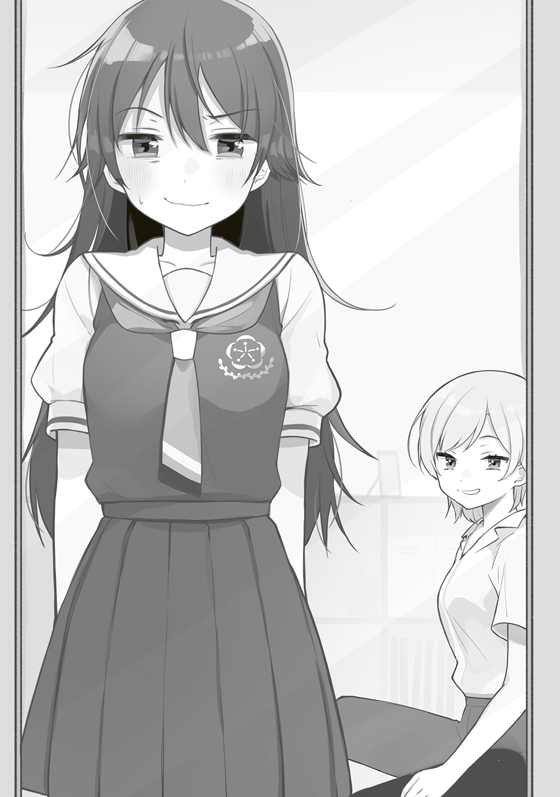
スタイリストを務めた僕の恩師がさらりと毒を吐いた。言い返す気にもなれなくて無視していると、
「なに自分に見惚れてんだこの変態が」
背後からスカートを捲し上げられた。下にスパッツを穿いているとはいえ、恥ずかしいものは恥ずかしい。
「脚の毛の処理もできてるみたいね。今日から毎日全身のケアを欠かしちゃダメよ。この季節は日焼けや体臭にも気を配ること。体中のムダ毛というムダ毛を敵と思って根こそぎ刈り取りなさい。女はまず見た目、次に笑顔と愛嬌、最後に優しさよ！」
「それより、いいかげんスカートん中凝視するのやめてもらえます？ 変態はどっちだよ。小学生男子かあんた」
「荒っぽい言葉遣いも禁止！ どうせ恥ずかしがるならもっと羞恥心を持って生娘らしく振舞いなさい！ わかった？」
「うっす」
ぺしっと、頭を撫でるように小突かれた。
「わかってないじゃないの！ 淑女はそんな返事しない！」
この恰好をするにあたって、眉毛と睫毛の整え方、スカートのはき方、シリコンパッドの装着の仕方など、いろいろなことをこの人にレクチャーされた。いままで知りもしなかった女性の身だしなみの作法を教わって、こんな人でも一応女の端くれなのだなと再認識させられた。
「人の頭を軽々しく引っ叩くのはいいのかよ」
抗議の言葉をつぶやきながら、いまの衝撃でズレたカツラの位置を修正。この程度のことでもズレるのか、どっかに引っかけたりしないように注意しないと、意外と簡単に脱げてしまいそうだな。
「この恰好をしてる間は、あんたは世の中の嫉妬と羨望と性欲の的、華のＪＫなのよ。ほら、シケた顔しない。背筋を伸ばして胸張ってアゴ引いてニッコリ笑顔張りつけて。さぁ、行ってきなさい！」
バンッと背中を叩かれて、体に熱がこもる。
そうだ、今日から新しい自分に生まれ変わらなければならないのだ。
もう一度深呼吸をして、改めて鏡に向き直る。鏡の中の自分はさっきよりはマシな顔になっていた。
七月某日。
期間限定。
女子高生始めました。
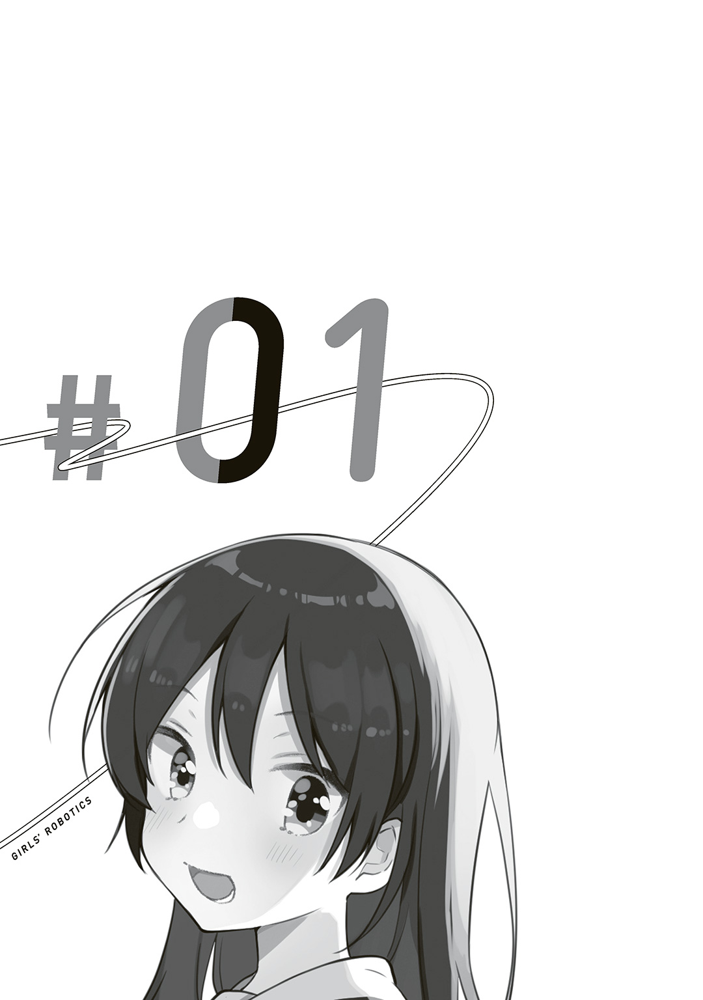
「樋口、あんた明日から女子高生ね」
僕の担任教師であると同時に、僕の所属するロボット部の顧問である笹木先生は、終業式を終えたばかりの僕を捕まえて部室に連れ込んで、なんの脈絡もなくそう言い放った。
退屈なテスト期間を抜けてこれから夏休みという楽園にいざ突入しようとしていたところに、このわけのわからない宣告である。完全に出鼻を挫かれた気分だった。
「は.........？」
間抜けな溜息が出ただけで、何も言えなかった。衝撃を受けたというよりは、事態を飲み込めずに思考回路が凍りついてしまっていたからだ。
そんな僕の気持ちを知ってか知らずか、笹木先生は話を続けた。
「最近我が校の風紀が乱れていることを受けて、テスト期間で部活動が停止しているうちに各部室に抜き打ちのガサ入れがあったのよ」
「き、聞いてないですけど」
「抜き打ちなんだから当たり前でしょ」
「や、でも、それと僕が女子高生になるのとどういう関係があるんですかね......？」
「いいから聞きなさい。――で、その結果ロボ部の部室から灰皿と大量のタバコの吸殻が見つかった。理事長は事態を重く見て、ロボ部の廃部を考えているわ」
「はぁ!? ふッざけんなよ！」
バンッ、と僕は思わず目の前の机に両手をついた。
僕の所属するロボット部はこれまで目立った実績もないうえに、入部希望者に恵まれず、去年から部員は二年の僕だけになってしまい、まともな活動ができない状態にある。学校側にしてみればどうなってもかまわない弱小部であることに違いはなく、廃部にならなかったのが不思議なくらいなのだ。
しかし、どうしても納得するわけにはいかなかった。
なぜなら、
「タバコは笹木先生が部室で勝手に吸ってたやつじゃないですか！ あんたが責任とるべきでしょ！」
「当然名乗り出たわよ。私もそこまで恥知らずじゃないわ。クビになるのを覚悟で『樋口はタバコなんかやりません。これは私が吸いました』ってね。でも、教員の多くには私があんたを庇うため無実の罪を被ろうとしているように見えたみたいで、だれも信じてくれなかったのよ」
「笹木先生......」
正直な話、僕はこの人を誤解していた。普段の授業中や他の教員たちの前では猫を被って品行方正な教師を演じてはいるものの、いざ人目がなくなるとちゃらんぽらんで用事もないのに部室に入り浸って生徒から没収した漫画雑誌を読んでケラケラ笑っているような人だったから、いまいち信用できずにいた。
しかし先生は、自分が元凶とはいえ僕の無実を晴らそうとちゃんと戦ってくれたのだ。
一瞬でも彼女を疑ったことを僕は激しく後悔した。
「だから私はあんたに罪を被せることにした。あんたの普段の生活態度の悪さが災いしたのよ。ってことで全部あんたが悪い。残念だったわね。ざまぁみなさい」
「あんたもう十分すぎるほど恥知らずだよ！」
「はんッ！ なんとでも言いなさい！」
保身に走ったうえに開き直りやがった！
一瞬でもこいつを信じたことを僕は激しく後悔した。
「っていうかタバコが見つかっただけでいきなり廃部なんて処分が重すぎるでしょう。せめて期限つきの活動停止とか......」
「タバコの件が誤解だとしてもよ樋口、去年の学祭でウチの部が自作したエアホッケー台あったでしょ。あんたあれ、学校の備品の掃除機をバラして使ったわね。残骸が転がってるの見つかっちゃったわよ。あんたのモノ作りにかける情熱は認めるけど、行き過ぎよ」
「あの掃除機はだれにも使われなくなってたオンボロだからリサイクルしたんですよリサイクル。地球にも部費にも優しくていいじゃないですか。有効利用しただけですって」
「モノを大切にするのは結構。でも無断で持ち出したら普通に窃盗でしょ馬鹿！ なにが有効利用よ、有罪判決の間違いでしょ！ あんたは理数系の科目の成績だけはぶっちぎりでいいんだから、その頭脳をロボット以外で活かそうとは思わないわけ？」
「逆ですよ。ロボット作りに役立つ知識だったから覚えただけで、無理に他のことに活かす必要ないじゃないですか」
「このロボット馬鹿が......。それにあんたの罪はそれだけじゃない！ 近所の喫茶店でバイトしてて、そこにバイクを置いて通学していること、知らないとは言わせないわよ！」
「ギクッ......な、なぜそれを」
「いままでは見過ごしてやっていたにすぎないわ。我が校では許可のないアルバイトも免許の取得も禁止されているのよ！ バイク通学などもってのほか！ これ以上余罪が発覚すれば、あんたの進路はどうなるの？ よくよく考えなさい」
「か、完全に脅しじゃないですかこれ......」
僕には大学に進学してロボット工学を学ぶという目標がある。素行不良が表沙汰にされると、推薦を貰うために積み上げてきた努力が水泡に帰し、僕の完璧な人生設計は破綻してしまう。
アルバイトやバイクの件を含め部室以外にも叩けばホコリが出る身である以上、僕に反撃の余地はない。
万事休すか。
「しかし穢れた身であるあんたにも、理事長は慈悲深くも救いの手を差し伸べてくださったわ。ある条件をのめば今回の件は不問に付すとのことよ。甘んじて受け入れなさい。いやー、ホンマあの人の心の広さは海のごとしやで」
「なんで急に関西弁になんですか......。で、その条件って――」
なんなんですか、と言いかけてハッと気づく。その条件とやらを、僕は最初に聞かされていたではないか。
笹木先生の口元がニヤリと歪んだ。嫌な予感が的中する気配を感じた。
「樋口悠太郎。夏休みの間、あんたは女装して桜樹女子高校に潜入、先方のロボ部の面々と接触して彼女たちの手助けをしなさい」
◇
桜樹女子高校は、僕が通う黒松谷男子高校と同じ学校法人が運営する姉妹校である。その歴史は古く、男女の学び舎は別であるべきという創始者の理念のもとに創設された学校であるらしい。
いつのころからか黒松谷は、勉強はできないがスポーツや工作の得意な汗臭い連中の集まる場所、一方の桜樹はお淑やかで聡明なお嬢さまの集う花園というのが、世間一般での認識となっている。そんな両極端な二校ではあるが、黒松谷男子と桜樹女子の理事長は同じ人物が兼任しているという事実を、僕はつい先ほどまで知らなかった。
翌日、昼。
僕はその桜樹女子の校門の前に立っていた。それも、紺色の清楚な夏服にスカートを纏い、胸には詰め物を仕込み、ついでにヅラまで被って。要するに桜樹女子の制服を着て、だ。ちなみに下は念のためにスパッツを着用している。
「なにをやってるんだ僕は......」
本来なら今日から高校生二度目の夏休み、クーラーの効いた自室で自由な生活を送り始めていたはずなのに。
大きな門扉の両脇には一人ずつ警備員が立っていて、僕を横目で怪訝そうに見ていた。うちの学校の門に立っているのは声のデカいゴリラ顔の生活指導教師だというのに。話しかけられでもしたらたまったものではない。さっさと通過してしまおう。
正直なところ不安でしかたないが、いまさら引き返すわけにもいかない。
覚悟を決めよう。
勇気を振り絞って、そっと片足を学園の敷地内に踏み入れる。
次の瞬間両サイドから警備員が飛びかかってきて服をひんむかれ、警察に突き出されることも想像したが、警備員が動く気配はなく、僕は無事に桜樹女子に潜入することに成功した。
自分で言うのも悲しいことだが、僕の女装はなかなか様になっていた。
変装に必要なもの一式を準備し着用方法を指南した笹木先生は、さらに僕に化粧を施そうとしたが僕が頑なに拒絶の意を示すと、『まぁ学生でメイクが濃すぎるのも逆に怪しいわね』ということで妥協した。女装はするが化粧は嫌だというのも変な話ではあるが、これ以上やると自分が男に戻れないような気がしてどうしても抵抗があったのだ。
笹木先生から伝え聞いた、理事長が提示した条件。
まずは桜樹女子の生徒に扮して学園に潜入。ロボット部員に接触・助力し、作品を完成させること。正体が露見し騒ぎに発展した場合、責任はすべて僕が負うということだった。
理事長が一体全体どういう意図で僕にこんなことを命じたのかは見当もつかない。
しかし僕にとって一番重要なのは、僕が男だとバレた時だれも助けてくれないということだった。要するに僕は女装して女子高に忍び込んだ変態として警察のお世話になるのだ。
そんなことになるならいっそのこと停学か廃部にしてもらったほうが気が楽ではないかとも思っていたが......、
「......ムフフッ」
自然と口元がニヤリと歪む。
先ほどまでどんよりとしていた僕の心は、打って変わって晴れやかなものになっていた。
なぜなら、普段から女子との接点がほんどない男子校生徒である僕にとって、ここはまさに神秘の花園である。行き交う可憐な女子生徒たち、ゴシック調の校舎、吸い込む空気ですらも、不思議と輝いて見える。
男であるとバレれば地獄行き。しかし、裏を返せばバレさえしなければここは天国だ。
警備の厳重な門を抜けて、学園の内側に入ってしまえばこちらのもの。
せっかく女子校に潜入したのだ。この機会に女子との触れ合いを満喫してやるぜ！
そう思っていた矢先、グラウンドで走り高跳びの練習をしている陸上部員たちを発見。僕は即座にスカートのポケットからスマホを取り出し、高画質モードで撮影していく。
彼女たちの健康的な太もも、キュートなおへその見えるユニフォーム、背面跳びの瞬間アーチを描く肢体、それらを入念にデータに残していく。
潜入期間中、気になったものはどんどんデータとして記録していかなければ。
「まったく最高だな、ここは......」
僕はほっこりとした心持ちで、撮った写真を確認しながら再度歩みを進めた。
僕は女の子が好きで、ロボットが大好きだ。
そんな僕にはいつか作りたいと思っているものがある。
アニメでよくある有人の人型二足歩行戦闘ロボットや、だれもが怪力になれるアーマースーツなど多々あるが。そのうちの一つが、究極のアンドロイドだ。
完璧な女性の創造。
至上の女性像の具現化。
それをロボット技術で実現化させること。
現段階での僕の理想としては美少女であることは大前提として、透き通るような白い柔肌と、絹のような色素の薄い長い髪、宝石のように輝く瞳。そして温和ですべての罪を許してくれる聖母のような慈愛を持った女性。
僕はそんな女性型アンドロイドを作ってみたいのだ。
そんなまるで物語から抜け出してきたような女性は、それこそ二次元、仮想三次元でしか見たことがない。世の女性は数多かれど、そんな都合のよい女の子が現実に存在しているわけがない。
しかし、だからこそ、この手で生み出す意義があるのだ。
この世にまだ存在していないものを作る。それがモノづくりをする者にとっての最大のモチベーションになるのだ。
人型ロボットを作るには、まず人を理解しなければならない。
そのために、その理想に近い特徴を持った本物の女の子たちを探し出し情報収集しなければならない。
例えば、おっぱいの感触をシリコン素材などで再現しようにも、実際のおっぱいの感触を知らないことにはどうしようもない。百聞は一見にしかず。弾性力学をいくら学ぼうと、触れないことにはおっぱいの柔らかさは理解できないのだ。
女子校という環境は絶好の環境ではないか。思春期の女子たちの健康的な肉体や、繊細な心を観察することができるまたとない機会だった。
弱みを握られて脅されたとはいえ、その気になれば拒否することができた。それでも僕が女装をしてでも桜樹女子への潜入を決意したのには、そういう思惑があったからだ。
部室棟への道順は笹木先生に教わっていたのですぐに見つけることができた。笹木先生曰く、『向こうの部長があんたのこと待ってるはずだから後は適当にヨロシク～』とのことだった。
さて、ここからが本番だ。
女装によって外見の誤魔化しが利いても、話をしているうちにボロが出てしまうのではないか、と笹木先生に愚痴ると、
『大丈夫、大丈夫。あんたの声ハスキーだから。声だけ聞いてると男子か、声の低い女子かわかんないって。ヅラがズレないようにだけ気をつければ、へーきへーき♪』
などと無責任なことを言っていたが、まぁなんとかなるだろう。
ロボット部に助太刀する以上、部員との接触は必要不可欠。
多少のお触り行為は、作業を効率的に進めるためのコミュニケーションの一環として許される。と、僕の脳内ではセーフの判定が独自に下されている。
それに、彼女たちは僕のことは女だと思っている。部活動中に手が滑ってあんなところやこんなところを触ってしまっても、なんの問題もない。だって女の子同士だもの。
難しい作業は経験豊富な僕が、手取り足取り無駄に密着してみっちり教え込んであげようじゃないか。
目的の部屋は部室棟二階にあるとのことだった。二階にあるのだから、当然そこに行くためには階段を昇らなければならない。
階段の踊り場を折り返したところで、頭上から迫る異常な光景を目の当たりにする。
唐突に、上から女の子とロボットが降ってきた。
足でも滑らせたのだろう、僕が着ているものと同じ制服を着た長い黒髪の女生徒と、十五センチほどの大きさの人型ロボットのプラモデル。
一人と一体が、それぞれ別の落下点目指し、重力加速度に従って自由落下を開始する。
「受け止めてくださぁぁい！」
階下に僕を認めた女の子が悲鳴混じりに叫ぶ。
先ほど述べたように、僕は女の子が好きで、ロボットが大好きだ。
女の子とロボット。この状況で僕はどちらを受け止めるべきなのか。熟考するヒマなど当然あるはずもなく二者択一を迫られる。
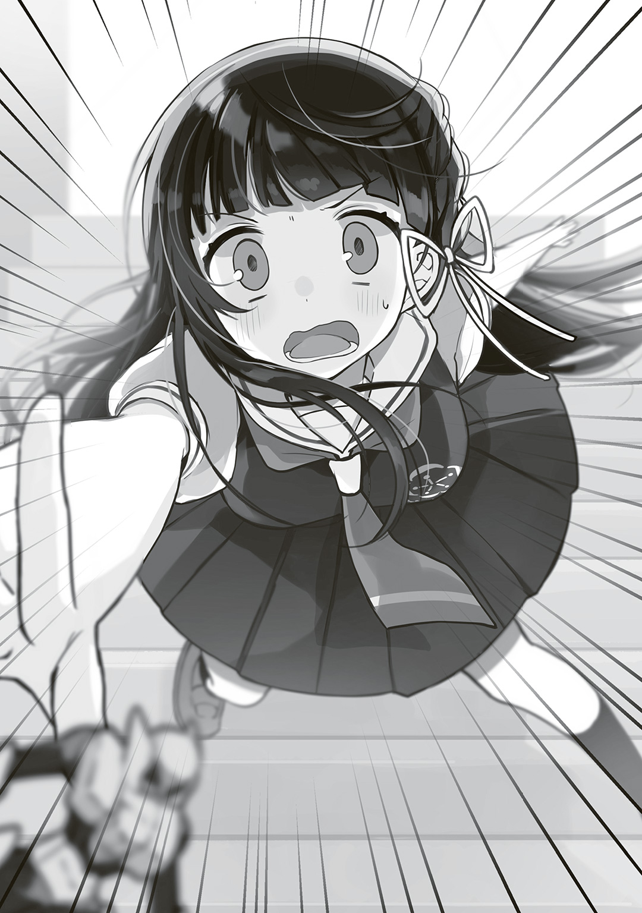
目標の落下物を胸に抱え込むようにしてしっかりと受け止める。衝撃を殺しきれずに尻餅をついて、ビリビリと背骨に電流が走った。
僕が選んだのは、女の子のほうだった。
彼女の体つきは細く小柄で、控えめな胸。長くて艶々した黒髪からは、ほのかに甘い匂いがした。
いくら僕がロボット好きだからとは言え、人命より優先させるようなことではない。ましてや相手は女の子。僕は機械は直せても、怪我は治してあげることはできない。
「痛てて......キミ、大丈夫だった？」
抱きとめた女の子の顔を覗き込もうと腕の力を緩めると、いきなりドンッと乱暴に胸を突き飛ばされた。
僕なんかには目もくれず、女の子は一目散にプラモデルのほうに駆け寄った。
そのプラモデルは床に叩きつけられた際に壊れてしまったのだろう。片方の手足がもげて、細かな部品が床に散らばってしまっていた。
彼女はそのプラモデルを白く細い手で拾い上げて、
「どうして......どうして私なんですか！」
キッと睨むように僕に向き直り、震える声で言う。
「私が受け止めてって言ったのはこの子のほうです！ 私のことなんて放っておいてくれればよかったんです！」
「えっ......」
いやいや、おかしいだろう。
僕は常識に則ってあの場における最善の行動をしたはずだ。本来なら感謝こそされ、非難されるいわれはないぞ。
改めて見てみれば、空から降ってきたその女の子は、かなりの美人だった。
小顔で、柔らかそうな桜色の唇、丸くて大きな瞳はまるで子猫のように愛らしい。僕に向けられる怒りの表情も、その可愛らしい顔立ちのせいで迫力に欠けていた。
「あぁ......こんな無残な姿に......。この子、数量限定の復刻版のレア物なんですよ！ 私、ずっと欲しくてやっと手に入れたのに......それなのに！」
壊れてしまったそのプラモデルは数十年前に流行ったロボットアニメの主人公の乗っていた機体だった。細かい所まで忠実に再現されていて、昔の思い出が蘇ってくる。僕も小さいときにこのアニメ見てたっけなぁ。
「もう、もう、もう！ どうしてくれるんですか！」
目尻に涙をためながら、女の子がポカポカと僕の胸をか細い腕で叩く。
「ちょっ、やめて、お願いだから落ち着いて！」
胸の詰め物がズレちゃうじゃないか！
彼女の手を摑んで制しつつ、
「っていうか、なんで階段から落ちてきたのさ？」
「部室でこの子を作っていて、たったいま完成したところなんです！ お外でジオラマふうに記念撮影をしようと思いついたんですけど、嬉しくてつい飛び出しちゃって......あぁ、あんな高さから落ちて、痛かったですよね。ごめんなさい、私の不注意のせいで......」
と、僕ではなく、壊れたプラモデルに向き直って謝罪する。
いやいやいや、謝る順番がおかしいだろう。
僕の心底呆れた顔を見た女生徒は、
「なんですか？ 女の子がプラモデルを作っちゃいけないんですか!? あなたも、女の子のくせにロボットが好きなんて変だって言いたいんですか？」
「珍しいとは思うけど、変だなんて思ってないよ。僕もロボット好きだし」
「ウソです！ 口ではなんとでも言えます。本当にロボットが好きなら私よりこの子を受け止めてくれたはずです。あなたのロボットへの愛は偽物です！ 軽々しく『ロボットが好き』なんて言わないでください！」
「......なんだと？」
不覚にもその言葉に、カチンときた。
僕のロボット愛が偽りだと？ ふざけるなよ。
「こちとら年中無休で寝ても覚めてもほぼほぼロボットのことしか考えてないせいで頭の中にトランジスタとコンデンサができ始めているんだぞ。そんな僕に向かって愛がないなんて、それだけは聞き捨てならん！」
「トラでもなんでもいいですけど、それは普通に病院に行ったほうがいいです。ともかくロボットが好きだなんて軽々しく言わないでください！」
「うるさいな！ キミにそんなことを言われる筋合いはない！ ......ずいぶんと上から目線の言いようだけど、いったい何様なんだキミは」
その女の子は僕の腕を振りほどいて数歩下がり、胸を張って大きく息を吸い込んだ。
「私はこの桜樹女子高等学校ロボット部の部長、藍澤久穏です！ 私こそこの世で一番ロボットを愛している女です！ 夢は自分専用の人型戦闘ロボットを自作してそのパイロットになって添い遂げること、そしてその専用機のコックピットの中で敵との激闘の末に燃え尽きて死ぬことです」
あまりにも予想外な自己紹介に呆気にとられてしまった。
フリーズした僕の思考回路が立ち直るまで、しばしの沈黙が流れる。
「待て待て待て、アニメみたいにロボットのパイロットになりたいっていうのはよくわかるけど、添い遂げるってどういうこと？」
「そのままの意味です。互いを伴侶として、どちらかが死ぬまで一緒にいます。まだ見ぬ彼は私にとっての白馬の王子様です」
誇らしげにそう言い放つ彼女の瞳は、強い信念の光を宿していた。伊達や酔狂ではない。いまの言葉は彼女の心の底から出た本心だ。
鋼鉄でできた兵器を、ロボットのことを、男性視してしかも自分の王子様だと？
マジかこいつ。なんなんだこいつ。
「......って、さっき部長って言った!? キミが!?」
「はい」
もしかしたらロボ部の関係者かなと予想はしていたが、よりにもよってこんなクセの強い子が部長だなんて......。大丈夫なのか、この学校のロボ部は......。いや、大丈夫なわけがない。部の運営が正常なら、わざわざ僕が助っ人として呼ばれることもないのだから。
「なんですか？ 私が部長だと不都合なんですか？」
僕が額に手を当ててうなだれる様子を見て、久穏が問いかける。
「あー、いや、ちょっと先行きが不安になっただけだよ」
「先行き？」
「今日から夏休みの間、期間限定でキミたちの助っ人役を頼まれた、樋口悠......です。初めまして」
危うくフルネームを名乗るところだった。そういえば偽名なんて考えてなかった。
「あ、あなたが？ 笹木先生の言っていた？」
見るからに胡散臭そうだという表情を浮かべる久穏。
「......では、自己紹介代わりに聞かせてください。あなたの――悠さんの理想のロボットはどんなものですか？」
「それは......」
不意に嫌な記憶が脳裏をよぎって、言葉に詰まる。
けれど、意を決してもう一度僕は声を振り絞る。
自分の夢を隠すようなマネはしたくない。誇れなくなった夢は絶対に叶わない。そしてなによりも、彼女への対抗心が僕の背中を押した。
「僕はいつか、最高の女性アンドロイドを作りたいんだ」
「アンドロイド......？」
身長・体格・顔・髪型・匂い・声・口調・性格・その他諸々。それらすべての理想パーツを組み合わせて詰め込んだ完全な女性ロボット――非の打ちどころのない完璧な存在。人間以上の存在。
下心がまったくないと言えばウソになるが、これは僕にとって探究心と挑戦心からくる野望としての意味合いが強い。
「『理想の女性像』はアートの世界ではメジャーなテーマだ。『ミロのヴィーナス』や、『ヴィーナスの誕生』。大勢の画家がキャンバスに女神の絵を描くのと同じ。僕はそれをロボットで表現したい。僕は人間よりも人間らしいロボットを作るのが夢なんだ」
彼女がどんな反応を示すか、おおよその予想はついていた。
どうせ、『気持ち悪い』と引かれるか、『できるわけない』と呆れ笑いをされるか、『ふぅん』と適当な返事でスルーされるかのどれかだ。両親や仲の良い友達ですらそうだった。
僕もそういう冷たい反応には慣れっこだ。だから、彼女がどんな言葉を返してこようが、僕はなんとも思わない。
そのはずだった。
「......あり得ません」
失望したように、彼女は大きく息を吐いた。
「アンドロイドなんて見た目がほとんど人間と一緒じゃないですか！ そんなの全然ロボットらしくありません！ なんでわざわざロボットの良さを殺しちゃうんですか！ 超合金で覆われてないロボットなんてロボットじゃありません！」
「はぁ！ 勝手に決めつけるなよ！ デカくて硬いだけがロボットじゃないだろ！」
「重装甲の良さがわからないなんて、やっぱり悠さんはにわかです！ 逞しく分厚い超合金の装甲に抱かれながら、ずらりと並んだインターフェイスに囲まれたコックピットで操縦桿を握り、座席越しに伝わってくる振動を嚙みしめて。街中を、荒野を、空を、宇宙を、自分の思うまま縦横無尽に動き回れたらどれほど素晴らしいことか......。あぁ......ダメ......想像しただけで......」
「な、なんで足をモジモジさせてるんだよ......」
「い、言わせないでください」
頰を染めて恥じらうように視線を逸らす久穏。
うむ、確かに聞きたくない。
「理想の結婚相手は強くて優しくて私を守ってくれて、少なくても身長が五メートル以上で全身が金属質な人です」
「全身金属質ってなんだよ」
「収入は気にしません。私が養ってあげます」
「維持費めっちゃかかるよね、その旦那さん。っていうか、金属の塊と結婚したいとか正直おかしいよ。普通にドン引きだよ」
「悠さんにだけは言われたくないんですけど！ 金属じゃないロボットなんてロボットじゃありません！ 女性アンドロイドなんて矛盾の塊じゃないですか！ あんなのロボットじゃなくてただのお人形さんじゃないですか！」
「違う！ 人形だろうが魂が宿れば立派な人間になるんだよ！ なにもわかってないなキミは！」
「ロボットを作りたいのか人間を作りたいのかハッキリしてください！ わかってないのは悠さんのほうです！」
「なんだと！」
「なんですか！」
バチバチ視線をぶつけ合い、互いに一歩も譲らない。
口論をしていても、僕は自分の中に歓喜にも似た興奮を感じていた。
今までこんなふうに、自分の夢を真っ向から受け止めてくれる人がいなかったからだ。
彼女は僕の夢を小馬鹿にするのではなく、全力で意見を戦わせてくれた。僕はそれが嬉しいんだ。永い孤独の先に、やっと喧嘩相手を見つけることができたことを、楽しく感じてしまっている。
僕たちが対戦前のプロレスラーみたいに睨み合っていると、突然、だれかに後頭部を鷲摑みにされた感触がした。カツラがずれないよう、反射的にガードした次の瞬間、ぐいっと頭を押されて、
「っそい！」
久穏の顔が目の前に迫ってきたのと同時に、額と額が正面衝突して反動で頭がのけ反る。
「痛ッたぁ！ なんだよ急に......！」
議論が白熱しすぎて気づかなかった。いつの間にか僕たちの側に来ていただれかが、僕と久穏の頭を押して、シンバルよろしくぶつけ合わせたのだ。
「あぅぅ......し、紫呉さん......なにするんですか......」
涙目の久穏が僕と同じように額をさすりながら、抗議の声をあげる。
「なんか騒がしいから様子見にきたの。そしたらあんたらが言い合いしてたから。少しは頭冷えた？」
僕と久穏の頭を打ち合わせた張本人、紫呉と呼ばれた女生徒が悪びれもせずにそんなことを言った。
「とりあえずさ、行こ。部室」
◇
バラバラになったプラモデルの部品を回収したあと、案内されたのは部室棟二階のとある一室。
段ボール箱が積まれたラック棚と、折りたたみ式の机と、パイプ椅子が置かれたシンプルな部屋だ。窓からは真夏の日差しが入ってきて、少し眩しい。
「あたし、元川紫呉。一応ここの部員で二年生。あっ、念のために言っとくけど、あたしはロボットに欲情とかしない系の女子だから。よろしくね」
ハキハキと明るい喋り方から、快活な少女という印象を受けるが、しかしそれよりも彼女の長い髪、派手な赤茶色のポニーテールが目につく。顔立ちは完全に日本人のそれだから、きっと染めているのだろう。お嬢さま学校なのにこんな派手な色に髪を染めて周りからなにか言われないのだろうか。スレンダーな体格、背は女の子にしては高めで僕よりやや低いくらいだろうか。
「ほら久穏ちゃんも、改めて自己紹介」
「......藍澤久穏、一年生です。よろしくお願いいたします」
紫呉に促され、渋々といった様子の久穏。決着のつかないまま議論を中断されたことが不満なのか、あるいは僕に対する不信感の表れなのかもしれない。
「久穏ってだれに対してもこんな感じなの？」
少し気になって久穏に聞こえない程度の声量で、紫呉に質問を投げる。
「いんや。ロボットのことになるとタガが外れるけと、普段は同級生にも敬語使うようなバカ丁寧な子だよ。あんたの場合、第一印象が悪かったんじゃない？」
たしかに、かなり特殊な状況での初対面だったし互いの趣向の違いから衝突もした。けれどやっぱり僕に非はないだろう。いいかげん、機嫌を直してほしい。
二年生の紫呉がいるのに一年生の久穏が部長をやっているのにも、なにか理由がありそうだけど、それにしても、
「この部屋、本当にロボ部の部室？」
「そだよー。扉のプレートに書いてあったでしょ。なんで？」
「いや、なんとなく」
たしかに別になんの変哲もない普通の部屋である。それなのになぜか、僕はこの部屋に違和感を覚えていた。その正体を僕は見破ることができないでいた。
「んで、うちに来てくれた助っ人なんだよね？ 名前は？」
「樋口悠です。一応、二年生」
「悠ちゃんか。可愛い名前だー。同い年なら下の名前で呼んでいいよね。背高くてスラッとしてるね。百七十二センチと五ミリ。胸は八十五ってとこかな」
「えっ」
驚いた。胸囲は詰め物だからともかく、僕の身長は彼女の言った数字とぴったり同じだ。
「あたしの特技なんだよねー。人とか物の大きさを見た目でだいたい当てられるの。すごいっしょ」
得意げにニシシッと歯を見せて笑う紫呉。
なんて便利な特技だ。その技があれば見ただけで女の子のスリーサイズもわかるんじゃないか。すごく羨ましい。僕も欲しい。
「ふむふむ。悠ちゃん、顔もキリッとしてるし、すごくモテるでしょ？」
「い、いや僕はそんな......」
「僕!? 僕っ娘なんだ！ スタイルよくて僕っ娘とか！ この欲張りさんがー！」
目を輝かせて僕の手を握ってくる紫呉。なにかが彼女の琴線に触れたらしい。そんな元気いっぱいに属性がどうとか言われても意味がわからない。
「えっ、ちょ、やめ――！」
突然後ろに回り込まれて胸を揉みしだかれた。当然その胸は詰め物にすぎないわけで、触られたりなんかしたら――、
「んん？」
胸を鷲摑みにしたまま、紫呉が首を捻る。
紫呉の拘束をふりほどいて部屋の隅へと逃れる。
「むっふふん♪ 悠ちゃんの秘密握っちゃったー。バスト八十五は訂正しなきゃだねー」
ニヤニヤとなにやら嫌らしい笑みを浮かべていた。
僕が男であることがバレてしまったか！ まだ潜入一日目なのに！
どうにか誤魔化さないと！ 警察の御厄介になるのはイヤだ！
「あ、あの、これはそのそういうアレじゃなくてですね！ 深い事情がありまして、こちらとしてもしかたがなくやっているところがあるというか！ このことはどうか内密にお願いしますなんでもしますからぁああぁあぁぁ！」
「いいよー。そりゃあだれだって見栄くらい張りたいもんね。悠ちゃんみたいに背が高いとそのぐらいあったほうが自然だもんねー。それに案外そういうのつけてきてる子多いよ、全然恥ずかしいことなんかじゃないってー」
「え......？ あっ......う、うん。ありがとう」
よかった。彼女はどうやら僕が男だと気づいたわけではなく、胸にコンプレックスを持ったただの長身貧乳女子であると判断したらしい。
しかし初対面の相手の胸をためらいなく揉んでくるかね普通。まったく最近の女子高生は恐ろしい。
お嬢さま学校だからきっとお淑やかな性格の女子しかいないと高をくくっていたが、いや、むしろ女子しかいない環境だからこそ過度なスキンシップが当たり前な環境なのだろうか。
ともかく彼女みたいにあいさつ代わりに胸を揉んでくるやつもいるということだ。以後、背後には気をつけよう。
「僕の胸を触ったんだから、僕にも触らせてよ」
「触ってどうするのよ？」
「感触を手に焼きつけてその記憶に名前をつけて保存するよ」
「な、なにそれ、なんか怖いからヤダ......」
自分の胸を腕でガードして後ずさる紫呉である。
チクショウ。ダメか。会話の流れで合法的にお触りできるチャンスだったのに。
「わかった。じゃあ直接は触らないから、せめてこの硬度計という計器でおっぱいの柔らかさの数値を計測させてくれ」
「よくわかんないけどダメなものはダメ！」
うぅむ、ここまで頑なに拒否されてはしかたない。機会を改めよう。ここは女子校、おっぱいは無数に存在しているのだ。
「なんでそんなの持ち歩いてるの......」
「お気になさらず。趣味だから」
「胸の柔らかさを測るのが？」
「胸だけじゃないけどね。で、久穏と紫呉の他に部員はいないの？」
「な、流された......。いるよ、あと一人」
ってことは全員で三人か......。
ここも少人数なんだな。僕一人で活動している黒松谷ロボ部よりはマシだろうけど。
「その残りの一人は？」
「気づかない？ ずっと私の後ろにいるんだけど」
「えっ？」
ゆらり、と。
一瞬、紫呉の影がひとりでに動きだしたのかと思った。
紫呉のすぐ背後。彼女の陰に隠れるようにしてもう一人の女の子が佇んでいた。
前髪をヘアピンで留めたボブの、小学生と見紛うくらい小柄な女の子だった。手には学生鞄を提げている。ずっと気配を殺していたのか、視界に入っていたはずなのに全然気がつかなかった。
幼さの残る顔立ちと、僕を見上げている大きくて円らな瞳が、そこはかとなく庇護欲をかきたてられる。
「こんにちは」
と、声をかける。
「............っ」
少女はピタリと動きを止めて、数秒間じっくりと僕を観察したあと、音も立てず移動。ドアを開け、廊下に出ようとする。
いや待てなんで帰ろうとする！
慌てて廊下に出ると、女子生徒は廊下を全力で走り去ろうとしていた。
「悠ちゃんダッシュ！ その子捕まえて！」
「えっ、わ、わかった！」
紫呉の指示に従って、逃げるその背を追いかける――呆気なく追いついた。
というかこの子、めちゃめちゃ足遅い。
「よっしゃ捕まえたァ！」
「ぁひぃ......」
蚊の鳴くような小さな悲鳴が聞こえた。
「暴れるな。まさぐるぞ」
「ひぅっ」
あたふたしている女生徒の両脇をがっちり抱えて、部室へと連行。ともかく話を聞いてもらわないことには始まらない。
「はじめまして。僕、ロボ部に助っ人にきた樋口悠っていうんだけど、キミもロボ部の人なんだよね？」
「..................」
「名前は？」
「..................」
「何年生？」
「..................」
「しゅ、趣味は？」
「..................」
「スリーサイズは？」
「..................」
「いやー、今日もいい天気だね」
「..................」
小動物のように体を震わせるばかりで、なにを訊いても答えない。
人形に話しかけているような気分になってきた。目すら合わせてくれないし。
この状況をどうしたものか。
気の弱い女学生を、女装した男が力ずくで捕獲して質問責めにしている。冷静になってみれば、この状況は非常によろしくない。
僕は決して邪な考えや悪意からこんなことをしているわけではないのだ。
いや、そもそも『女装した男が』という一文が加わるだけですべての言葉が怪しく聞こえてくることは否めまい。
女装した男が歩いている。
うん、ほらね。ただ歩いているだけなのに。
しかしこの子、ホントなんにも喋ってくれないな。あまりにもか弱すぎてイタズラしたくなってくる。
「なにか言ってくれないと服をひんむいて全身コチョコチョしちゃうぞー」
「............ッ！」
ビクンッと少女の体が震える。
「あぁ、ごめん、冗談だから。そんな本気で怖がらないで......」
僕としたことが、冗談のテイストを誤ってしまった。
どうしたものか頭を悩ませていると、ようやく紫呉が助け船を出してきた。
「あー、その子――珊瑚ちゃんはね、極度の人見知りなのよ。初対面の人と話すのが怖くって、あんなふうに逃げだしちゃうの」
珊瑚というのが、この無口な女の子の名前であるらしい。
その珊瑚はといえば、紫呉の姿を認めるや否や彼女を盾にするように後ろに隠れてしまった。
うわぁ、すげー嫌われちゃった。
「ダメだよ、この子すっごい人見知りなんだから脅かしちゃ」
「捕まえろって言ったの紫呉じゃん......。ごめんね。怖がらせるつもりで追いかけたんじゃないんだよ」
母親の後ろに隠れるシャイな子供みたいに、顔を引っ込める珊瑚。紫呉の背後でなにやらごそごそと鞄からタブレットを取り出して操作している。どうでもいいけど指の動きがめちゃめちゃ速い。足はあんなに遅いのに。
「去年から同じクラスだったあたしでさえ慣れてくれるまで結構時間かかったからねー。珊瑚ちゃんは人前で話すのも苦手だから、言いたいことは文字で意思表示するのよ、チャットアプリとか使ってね――って、えぇ？」
珊瑚が僕たちに見えるようにタブレットの画面をこちらに向ける。その画面を見た紫呉の表情が困惑に変わる。
『捕まったときいろんなとこ触られました』
あながち間違ってない。
正しくは、『女装した男に捕まったうえにいろんなとこ触られた』だけど。
「悠さんってやっぱり......」
疑惑の視線を送ってくる久穏。
「悠さんは、自分が女性なのに女性型アンドロイドを作ろうとするような変態さんですからね」
冷ややかな視線と言葉を送ってくる久穏。
「キミにだけは変態扱いされたくない！」
「もー、珊瑚ちゃんがちっちゃくってカワイイからって無理矢理はダメだよ、常識的に考えて」
「さっき僕の胸を突然揉んできた人の言えるセリフじゃないでしょそれ」
「あたしはちゃんと人を選ぶもん」
その線引きはいったいどこにあるというのか。女の子の考えてることはよくわからない。
僕は腰を折って目線の高さを珊瑚に合わせて、
「さっきはごめんね。よろしく」
しばらく僕の様子を窺っていた珊瑚は恐る恐るという足取りで僕の前へと進み出た。緊張した面持ちで何度か深呼吸をし、やがて意を決したように、
「............や、薬萊珊瑚、です。......よろしく、お願いします」
と、深く頭を下げた。
瞬時に僕のセンサーが反応する。
「キミの声、超可愛いね！ もっと声聴かせてくれないかな！ あっ、待っていまスマホで録音するから！」
「はぅ......」
「だから怖がらせちゃダメだって」
再び紫呉の後ろへと隠れてしまう珊瑚。
か細いけど透き通ってすごく可愛い声だったから、つい興奮してしまった。
まぁいい。これから一緒に活動していくのだからチャンスはまだあるだろう。
「ともかくこれで全員、か」
ネジのぶっ飛んでる一年生部長の藍澤久穏。
無遠慮な元気娘の元川紫呉。
引っ込み思案な薬萊珊瑚。
そして僕を入れて四人。チームとして機能するであろうギリギリの人数。
さて問題はこれからだ。
「顔合わせがすんだところで、そろそろ本題に入りたいんだけど」
「そ、そうでした！ 吞気に自己紹介なんてしてる場合ではありません！ 本当に不本意ではありますが、私たちはあなたの力にすがるしかないんです。もう私たちに生き残る術が残されていないんです！」
突如興奮した様子の一年生部長。
「いったいどうしたのさ？」
「私たちは、これに出なければいけないんです！」
僕の顔面に叩きつけるような勢いで一枚のチラシを見せてくる。そんなに近づけられたら見えるものも見えんだろうが。
チラシを受け取って目を通すと、それは市主催の格闘ロボットコンテストの告知ポスターだった。著作権的に心配になる某アニメに酷似したデザインのロボットがでかでかとプリントされている。
「そりゃ出るのはかまわないけど......」
いったいなんの問題があるのかと言いかけて、ポスターに印字された日付に衝撃を受け、僕は言葉を失う。
「悠さんお願いです。私たちを助けてください！」
◇
狐につままれた気分だった。
彼女たちの置かれた状況は芳しくない。
本格的な活動は明日からということにして、連絡事項だけを伝えて解散となり、僕はこの日、結局なにもすることなく桜樹女子をあとにしたのだった。
そして、
「夕方の女教師の部屋にお呼ばれしたんだからもっと興奮していいのよ」
「しませんよ」
今日の進捗を報告するために、僕は笹木先生と合流する約束をしていた。そこら辺の喫茶店にでも入ろうという先生の提案に、こんな恰好のまま町中で知り合いにでも見られたら死ぬしかないと抗議した結果、先生の自宅アパートで腰を落ち着かせる運びとなった。ちなみに今朝もこの場所で女装したので、二度目の訪問である。
朝は部屋を見る心の余裕などなかったが、いまこうして見てみると意外と几帳面な性格なのだろうか、先生の部屋は片づいていた。
「先生の部屋、もっと散らかってるかと思ってました」
「あんたが来るから片づけたのよ。おちおち下着の部屋干しもできやしない」
「そりゃあ申し訳ないです」
「うわべだけで謝るな。逆に失礼よ、それ。......んで、こうして無事に戻って来れたってことは、バレなかったんでしょ。どう？ 潜入初日の感想は？」
「すっげー疲れました」
「はは、そっか。お疲れ様」
「女子校だから、てっきり廊下にパンツの一枚や二枚落ちてるもんだと思ってましたけど、期待外れでしたね」
「いや、そのイメージはおかしいでしょ......妄想がぶっ飛びすぎてて引くわ......」
差し出されたコーヒーカップとマシュマロの盛られた皿を受け取り、冬は炬燵になるタイプのローテーブルに向き合って座る。
「ありがとうございます」
「心なしか女装してると若干性格が丸くなるわね。普段からそうしてたほうが可愛げあるわよ。ホント、普段のあんたからじゃ想像もできないわ」
「よけいなお世話です。だれが好きこのんでこんな恰好」
「女の子座りでマシュマロ頰張ってるやつの言うセリフじゃないわよ。完全にただの女子じゃないの」
「......っ！」
「いいわね、その恥じらいの表情」パシャパシャ。
「当たり前のように写メ撮んな！」
指摘を受けて足を崩してあぐらをかきなおす。
今日一日で女の子の生活に慣れすぎだろ僕。
「あとであんたの携帯にも送っといてあげるわ」
「嫌がらせじゃねーか。要らねーわ。消しといてください」
「嫌よ。せっかく握った弱みだもの」
「あんたホントに教師かよ......」
廃部の件で脅され女装させられ、さらに女装したという弱みを握られた。なんだこの悪循環は。借金ってこんな感じで増えていくのかな。
「まぁ我慢しなさい。それに、結果的にあんたはその女装に助けられてるのは確かよ」
「......はあ？」
「あんたは女装に守られてるのよ。物理的にね」
「物理的......？」
先生の言っていることの意味がわからず、僕は首を捻った。この制服になにか防弾繊維のようなものが使われているとでもいうのだろうか。
「っていうか、どういうことなんですか。あの部は、あれじゃあとてもロボ部なんて言えませんよ」
あの部室で感じた違和感の正体はもうわかっている。あの場所にはあるものが欠如していた。それは『ロボット部らしさ』だ。
黒松谷のロボット部のように、壁にはいつだれがなんのために書いたのかわからないメモが張りつけてあったり、作業が中断されたまま散らかった工作台、なんのために作ったのか不明な作品たちの並ぶ棚、ジャンクパーツが転がっていて歩くときは足下に気を配らなければならない床、無駄に手の込んだハイクオリティのガンダムのプラモデル。そういったものがあってこそロボット部の部室と言えるだろう。
しかし、桜樹女子ロボット部の部室には、そういった『らしさ』がいっさい見えなかったのだ。あまりにも整理されすぎていたのだ。
つまりあの部室は、部室として機能していないということになる。
「いろいろとややこしいのよ、事情が」
コーヒーカップを傾けながら、先生が神妙に呟いた。
「桜樹女子は必ずどこかの部活に所属してないといけないのよ。ま、それは黒松谷も同じね。そんなふうに強制されちゃうと自然と生まれてきちゃうのよね。幽霊部員ならぬ幽霊部っていうのかしら、書類上は存在していても、とくに活動していない部が。桜樹女子のロボット部はそれだったのよ」
「やる気のない連中や不良生徒のたまり場ってことですか？」
「悪い言い方をすればそうなるわね」
「そんな......」
一見優雅で完璧に見えるお嬢さまの花園にも、そういった腐敗した部分があったのか。
紫呉の胸鷲摑み事件といい、僕の抱いていた桜樹女子のイメージとはかけ離れている。所詮イメージはイメージにすぎないのか。
「とはいえ、あの部にいるのは事情があってあそこに流れてきた子ばかりなのよ。本来ならスポーツ推薦で入学したのに暴力事件で退部になった元川紫呉や、人づき合いが苦手な薬萊珊瑚みたいにね。......女子で純粋にロボットに興味のある人間もなかなかいなくて、桜樹女子ロボット部は長らくまともに活動していなかったのよ。だけどあの一年生、藍澤久穏が入部して変わった。あの子の呼びかけで活動再開することになったんだけど、本格的なロボット作りに関しては全員漏れなく素人で知識も技術もなくて困ってたのよね」
なるほど、一年生なのに彼女が部長をしているのは彼女が呼びかけたからなのか。
不良とコミュ障と機械主義者ってすごい組み合わせだな。そこに女装男子が加わるとなると、いよいよなんの集まりかわからなくなる。
「で、そこであんたの出番ってわけよ。あんたにやってもらいたいことは、あの部が最低限部活動としての体を成すところまで立て直すことよ」
ロボ部を立て直すだと？ 僕にそんなことができるのか？
いや、そもそも、
「素人がたった二週間で大会に出せるレベルのロボットを作るなんて無茶苦茶ですよ」
今日彼女たちと少し話してわかったこと。彼女たちは全員ロボット作りに関してまったくの素人であり、大会の開催日は今日から約二週間後。大会運営にはすでに出場エントリーの書類を送付ずみ。それなのに肝心のロボットは設計図はおろか構想すらしていないという。この事実を聞かされたときはさすがに眩暈がした。
通常、こういう大会に出すようなロボットはコンセプトや設計の段階から失敗や調整を積み重ねて何か月もかけて完成させるものだ。
プラモデルやミニ四駆じゃあるまいしそんな簡単に大会に出すような自作ロボットができてたまるか。
少ない時間。ワケありの部員。姉妹校とはいえ縁もゆかりもないよそ様のロボット部。なぜ僕がそんなものに首を突っ込むように命じられたのか。
わけがわからない。
あぁもう！ なんだか腹が立ってきた。
「なんかムカツキますね」
「マシュマロ食べすぎたんじゃない」
「ちがーう！ 胸焼けじゃなくて！ やろうとしてることが無茶苦茶なんですよ！ 計画性もなにもあったもんじゃない！」
「うるさいわね。怒鳴るんじゃないわよ。それで、明日からもうロボット作りを始めるんでしょ？」
「そのつもりですけど」
「じゃあこれ渡しとくわ」
差し出された茶封筒の中を見てみるとなんと計五人の福沢諭吉が入っていた。しがない学生にはとてつもない大金である。
「僕への報酬ですか！ あざーっす！」
「んなわけないでしょうが」
あっさりと否定されてしまった。
まぁいいか。たかが数日女装するだけで五万も貰ってたら男の生活に戻りたくなくなってしまう。もともと見返りが欲しくてやってるわけじゃないし。
「じゃあなんですか、このお金は？」
「市販の組立キットを買うための金。どうせあんたもそうするつもりだったんでしょ」
「先生がキットの存在を知っているとは思いませんでした」
「なめるな。名ばかりとはいえ、一応ロボ部の顧問やってんのよこっちは。こんなこともあろうかと予め理事長から軍資金を頂戴しておいたわ」
僕たちが出る大会は、原則として二足歩行ロボットであることが規約の中に含まれているが、素人がいきなり二足歩行ロボットを作ろうとすると、かなりの労力を必要とするだろうし、失敗することのほうが多いだろう。そこで大会側はロボット初心者も参加しやすいように市販の組立キットから作ったロボットでの参加を認めている。
初めから設計図が存在して材料も揃っているキットから作れば大幅に時間を短縮できるし、失敗の可能性もほとんどなくなる。完成したものにあとから自分たちなりの改造を施す自由度もあり、ロボット作り初心者の強い味方となってくれる。
「とにかくその金でキットを買って、大会に間に合わせなさい」
「なに言ってるんですか。買いませんよ、そんなもの」
「なんだと？」
訝るような笹木先生の視線が僕を捉える。
「無茶だと言いましたけど、僕は『できない』なんて一言も言ってません。こんな恰好をしてようが、僕も男です。一度やると決めたからには全力でやります。......たしかに、彼女たちのいまの実力だとキットから作るのが正解なのかもしれませんけど、それじゃプラモデルを作るのと変わりません。構想段階から始めて、設計とパーツ選び、部品の加工、回路の作成、プログラミング。ロボットを作るのは本来大変なことなんです。楽なやり方を選んだら、僕がいなくなったあとのロボ部はまたなにもできなくなっちゃいますよ」
「じゃあどうするってのよ。大会に出るって言ったって、あんた以外全員素人じゃないの。二週間以内に一からロボットなんて作れんの？」
「なんとかします」
「なんとかって......。桜樹女子ロボ部の名義で大会に参加登録して、結局間に合わずに出られませんでしたってことになると学園のメンツにも関わってくんのよ」
「もちろんやると決めたからには間に合わせてみせます。優勝するぐらいの気持ちもあります。でも大事なのはモノを作れるようになることだと思うんです。理事長がいったいどういう考えで、ロボ部をどうしたいのか知りませんけど、それが彼女たちのためになると信じてます」
そしてなにより、僕にも意地がある。
それを通さないことには、簡単に引き下がってたまるか。
「あいつに――久穏に言われたんですよ。『あなたのロボット愛は偽物だ。口ではなんとでも言える』って。だから、口じゃなくて腕でわからせてやります。あいつらに教え込んでやりますよ。モノ作りの苦労も楽しみも、僕が教えられること全部」
値踏みするような目で僕をまじまじと見つめたあと、「ぷふっ」と、唐突に笹木先生は吹き出すように肩を揺らして笑いだした。イタズラが成功した悪がきみたいな、ちょっと汚い笑い方。
「な、なに笑ってんですか」
「べっつにぃ。今日一日でそこまで考えてるなんてね。あんたってホント工作バカだなーって思っただけよ」
「褒め言葉として受け取っておきます」
「......たしかにあんたの言う通りかもしれないわね。わかったわ。あんたがやれるって言うんなら信用してあげる。必ず大会には間に合わせなさい。この金の使い方はあんたに任せるわ」
「ありがとうございます」
「ちゃんと領収書は提出しなさい。一円でも横領したら殺すから」
「全然信用してないじゃないですか！」
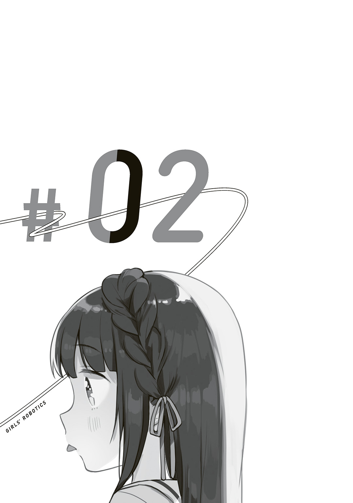
というわけで、翌日。改めて全員集合した僕らはロボット作りに取りかかる前に、まず部室を部室として使うための準備を開始した。
昨日僕がお邪魔した部室とは別に文化部共用の倉庫が存在する。
共用とはいえ部室とは別に倉庫があるなんて羨ましい限りである。これが桜樹女子と黒松谷男子の差か。
まずは倉庫の奥に追いやられていた備品を引っ張り出して内容を確認したり、無造作に放置されたままの工作機械が動くかどうかチェックが必要だった。
いまのところ発見できたのは、ドライバー、ペンチ、ハンダごてなどの工具類。プリント基板やコードといったパーツ。そして二世代ほど古いノートパソコン。すべてホコリを被ってはいるものの、いずれも新品同様で使われた形跡がほとんどなかった。一応これだけのものが揃っているということは、何年か前まではまともに活動していたのかもしれない。
掘り返してきた道具類を部室に運び入れて使いやすいように整理していく。これで少しはロボット部の部室らしくなるだろう。
今日の午前中は掃除と整理に追われることになりそうだ。
必要なものをすべて部屋に運び終えたところで、
「そういえば久穏が部長でいいの？ 一年生なのに」
「あたしと珊瑚ちゃんは籍だけ置いた幽霊部員だったんだけどねー。久穏ちゃんに説得されて活動再開することになったのよ。面倒だし胡散臭かったから、最初は断ったんだけど何度も勧誘されるうちに、根負けしてね。だから久穏ちゃんが部長」
段ボール箱を床に下ろしながら、気だるそうに紫呉が声を投げる。
入学して間もないというのに学年も違う紫呉や珊瑚にわざわざ声をかけてまでロボ部を復活させようとするなんて。久穏のロボットにかける情熱は並ではないようだ。
「うっ、胡散臭い......私、ロボットの魅力を誠心誠意説明しただけなのに......」
遠慮のない紫呉のもの言いに、当の本人は微妙に傷ついていた。彼女のことだから、昨日僕に言ったようなことを長々と語ったのだろう。
そりゃあ胡散臭がられて当然だ。
「でもなんでまたわざわざ久穏はロボット部を復活させたの？ ロボット作りなら、最悪ひとりでもやれるのに」
「えっと、なりゆき......でしょうか」
器具のホコリを払いつつ、久穏が言う。
「昨日言った通り、私の夢のためです。私は自分のための戦闘ロボットを作りたいんです。だけど、私はまだプラモデルしか作ったことがなくて、動くロボットの作り方はこれっぽっちもわかりません。この学校にロボット部があるってウワサを聞いて、そこでロボットの作り方を教わろうと思っていたんです。でも、入学してみたらほとんど活動なんてしてなくって、現状を知ったときは目の前が真っ暗になりました。この学校のロボット部に入れば、私と同じようにロボットに愛を注ぐ人たちに出会えると思っていたのに、騙されました。せっかく部に入っても、だれともロボットのお話ができなくて、私とーっても悲しかったんです」
そりゃあこんなお嬢さま学校じゃロボットが好きなんて人は滅多にいないだろう。
「あきらめるのもなんだか癪だったので、新しくロボット部を創るくらいの気持ちで声をかけて回ったんです。結局応えてくれたのは、紫呉さんと珊瑚さんだけでしたけど、私はとっても嬉しかったです。二人にはじっくり時間をかけて巨大ロボの素晴らしさをわかってもらうつもりです」
笑顔を向ける久穏と、即座に視線を逸らす二人である。
「いやー......さすがに機械を旦那にするのは......」
「んもう！ なぜですか！ 女性が男性に求める高身長、高硬度、高火力、すべて揃ってるんですよ！」
「あたしの知ってる三高と違う！ 珊瑚ちゃん助けて！」
迫ってくる久穏に紫呉が目線で珊瑚に助けを求めたが、珊瑚は黙って首を横に振った。
なるほど。だいたいこんな感じなのか、この部は。
「さあ悠さんも、いまからでも遅くはありません。女性アンドロイドのことなんか忘れて、私と一緒に巨大人型戦闘ロボへの道を共に歩みましょう。それこそが正しい道ですよ」
「それだけはない。僕を改宗させようしたって無駄だよ」
「いまなら、私の作ったプラモデルたちの秘蔵写真集をつけます」
「ちょっと興味あるけどダメ」
「むぅ、悠さんのいけず」
プクッと、怒ったフグみたいに頰を膨らませる久穏である。
表情がコロコロと変わるところを見ていると、普通に可愛らしい女の子なんだけどなぁ。
「でもまぁ、人型戦闘ロボも好きだよ。ロボアニメとか小さいころからよく見てるし」
「たとえば、どんなのですか？」
「んー、あまりＳＦ色が強くないタイプの作品が好きかな、パトレイバーみたいな現実に近い世界観の作品とか。それから、ボトムズとかコードギアスみたいな地面を滑走するロボは見てて痺れるというか、すごいテンション上がるんだ。アニメもいいけどそれよりもゲームのほうがもっと僕は好きかなぁ。アーマードコアとかメダロットとか、自分でいろいろセッティングしていくのが楽しいんだよね」
「なかなかの見所ですね。ですが、私もロボゲーのやりこみなら負けませんよ！」
「子供のときは特撮ヒーローに出てくる合体ロボが好きだったよ。古いやつだと『カクレンジャー』とか、お城が巨大ロボットに変形したあと他のロボと合体するんだけど、そのシーンだけ巻き戻して何度も見たりしてたなぁ」
「すっごくわかります！ 友情合体！ トランスフォーム！ とっても燃えます！ でも最近は合体するロボット作品が減って寂しいですね......」
「そうだねー。その点グレンラガンなんかは王道を行ってくれて嬉しかったな」
「あれは熱かったですー」
しみじみとうなずき合う僕たち。
ロボアニメの話ができたからか、昨日とは打って変わって機嫌がよい久穏である。だんだんこの子の扱い方がわかってきた。
彼女とはロボットを肴に一晩でも語り明かせそうだ。ひょんなことから口論にシフトしそうだけど。
その一方で、
「うーん、マニアックすぎてついていけないわ......」
『でも久穏さん、ロボットのことでお話しできて嬉しそう。ウチとしぐちゃんは話し相手になってあげられなかったから』
「あー、たしかに。こんな楽しそうにロボトークしてる久穏ちゃん初めて見たわ」
紫呉と珊瑚は少し離れたところから僕らの会話を聞き流しているようだったので、声をかける。
「これから自分たちでロボットを作るんだから、そのうち二人ともロボットのことを好きになるって」
「えー、そうかなー？ でもさー、たった二週間で作れるようなものなのロボットって？ ちゃんと間に合うのかなー？」
「役割分担して並行作業して頑張ればなんとかね。今日はその辺もみんなで相談して決めようか」
設計・部品加工・組立・プログラミング。ロボットの製作において、やることはいっぱいある。
「僕は全体の管理とフォローをやるとして、役割分担はどうしようかな。組立とプログラミングと回路で分けようかと思うんだけど」
「ぷろぐらみんぐ、っていうの？ それなら珊瑚ができるんじゃない？ たしか自分のブログ持ってたよね」
「おっ、そうなの？」
僕の問いかけにタブレットに指を走らせる珊瑚。
『タグの使い方くらいならわかります』
「マジで!? いまどきタグ打ちで自分のブログ作る女子高生とか珍しすぎるでしょ！」
厳密に言えばウェブページのタグ打ちとプログラミングの作成は異なるものだ。しかし特定の文字列と数値を順序よく並べて、任意の命令を書き加えるという基本は同じなのだ。少々勝手は違うが、やることは変わらない。
タグ打ちができるならプログラミングもすぐできるようになるはずだ。
「じゃあ珊瑚はプログラミング担当で。基本的なことはおいおい教えるから」
こくり、と無言でうなずく珊瑚。
「久穏は組立でいいかな？ 普段からプラモをイジってるなら適任だと思うんだけど」
「はい、お任せください！ 私は部長ですから、なんでもやりますよ！」
やる気に満ち溢れたとてもいい返事である。さすが部長。
「残るは回路作り担当だけど、うぅーん......紫呉で大丈夫かなぁ。回路製作って細かい作業ばっかりなんだよね」
「それがどうかしたの？」
「だって紫呉、見るからにガサツっぽいし、チマチマしたの嫌いじゃない？」
「ひっど！ あたし、お裁縫とかチョー得意なんだからね！ 弟の服に空いた穴とか、糸のほつれとか直してるんだから！」
「おっ、そうなの？ なんか意外。それじゃあ回路のほうよろしくね」
役割分担はこれでよしとしよう。
一応、二週間後の大会までには間に合うように製作指揮をとるつもりではいるが、気になることがまだいくつか残っている。
「だけど無理に間近の大会に出ることなかったんじゃない？ もっと先のロボットコンテストなら時間をかけて計画的にやれると思うんだけど」
「それじゃダメなんです」
悲しげな弱々しい声。見れば、掃除の手を止めた久穏がひどく思いつめたような表情で立ち尽くしていた。
「夏休みの間にロボットを作らないと、です。大会に出て頑張らないと、じゃないと......」
「久穏......？」
彼女の纏う悲痛な空気に、僕はどう声をかけていいものかわからず、言葉を続けることができなくなっていた。
そこへ、
「うるさいですわよ！ 幽霊部のくせに騒がないでくださいます!?」
唐突に、勢いよく扉を開け放ち何者かが部屋に闖入してきた。
珊瑚が驚きのあまり飛び上がって、箒を持ったまま積まれた段ボール箱の後ろに駆け込んだ。ハムスターかお前は。
「幽霊部のくせに先ほどからガタガタとなにをしていますの！ 幽霊部らしくポルターガイストのつもりですの!?」
よくわからないジョークを言いながら入ってきたのは、キンキンと頭に響くような甲高い声と、ふわふわとロールした長い髪が強く印象に残る少女だった。
豊かな胸を強調するように腕を組み、威嚇するような視線を僕らに向けている。僕は一目で彼女の持つたわわに実った二つの果実に心を奪われた。
あんな貴重なサンプルは見たことがない。
調べたい。あの夢と希望の詰まった果実を。三日三晩寝ずに調べつくして、そのすべてのデータを文書と脳の両方に長期記憶させておきたい！
神様ありがとう......。
こんな素晴らしい胸の持ち主に巡り合えたことを僕は神に感謝した。
紫呉との会話に夢中になっている隙に、僕はこっそりと彼女の胸元をスマホで盗撮することに成功し、ぐっとガッツポーズをする。あとはあの膨らみに触れさえすれば言うことはない。というか頼むから触らせてくれ。なんでもするから。
「元川さん、まだその下品な髪の色を続けていましたのね。それより、これはいったいなにをしてらっしゃいますの？」
「見ての通り掃除だけど？」
「音がこちらまで響いていますわよ。我々は作品集の入稿が近いんです。これでは皆が集中して創作に打ち込めませんわ」
「あー、それはごめんね。なるべく早く終わらせるようにするから我慢してよ」
「まったく、頼みますわよ！」
「はいはい。そんな大声で言わなくてもわかってるよ。相変わらず薫ちゃんは態度も声もおっぱいも大きいんだから、まったく。おっ、前より一センチ大きくなってんじゃん。また揉んであげよっか？」
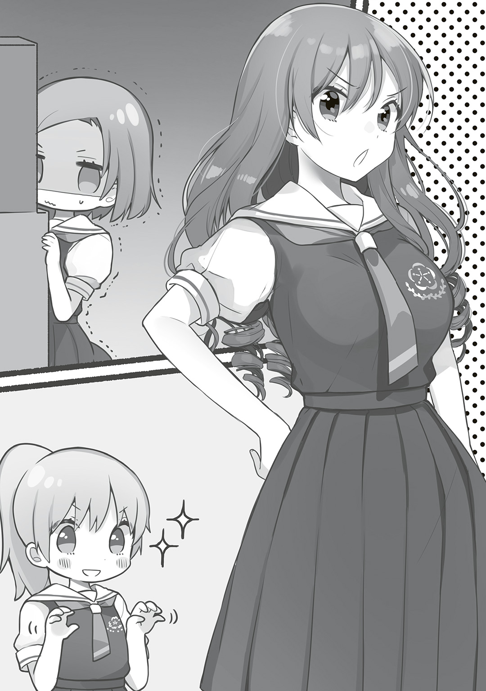
「変な笑みを浮かべながら近づかないでくださいな！ あのような暴挙二度と許しませんわよ！」
あぁ、この子も紫呉の毒牙にかかった被害者なのか。おのれ紫呉、羨ましすぎる......！
薫と呼ばれた少女。紫呉と顔見知りみたいだけど、この人はどういう人なのだろう。
というか、さすがお嬢さま学校。こんなふうにいかにもな感じのお嬢さま口調で喋る人もいるんだな。
「珊瑚、あのおっぱい大きい子、だれ？」
段ボール箱と一体化しているプログラム担当に質問すると『隣の文芸部の部長さんです』と、タブレットで返答された。そうしてるとカンペ係のＡＤみたいだ。
二人の会話から察するに、隣で執筆活動をしているのに僕らの掃除の音がうるさくて文句を言いに来たらしい。
「あら、なんだか知らない顔の方もいますわね。この方は？」
僕の存在に気がついた薫に、紫呉が僕のことをおざなりに紹介する。
「僕っ娘の樋口悠ちゃん。あたしらと同じ二年生。うちの部の助っ人で、あたしらの秘密兵器よ。ほら、悠ちゃんもお近づきの印に胸揉んで」
「なにを言っていますの!?」
ナイスパス紫呉！ 愛してるぜ！
「ぃよっしゃあ、お言葉に甘えて！」
「触らせませんわよ！ あなたも嬉々として乗らないでくださいまし！」
パシンッと、勢いよく僕の手を振り払う薫である。
チクショウぉぉぉぉぉ！ ダメなのかよ！ ものすごく期待してたのに！
「なぜ、そんなに残念そうに肩を落としていますの......」
「同情するならせめてブラのサイズ教えろよ」
「嫌ですわよ！ ......あなたがロボ部の助っ人、ですの？ 私も二年ですけど、あなたの顔は初めて見ますわね。クラスはどこですの？」
「そういえばあたしと珊瑚ちゃんのクラスでもないしね」
「あ、え、えっと......それは............」
しまった。さすがにそこまで考えてなかった。適当に答えてここにいるだれかのクラスと被ってしまったらよけいに不審に思われるだろうし、下手なことは言えない。そもそもこの学校のクラス表記が数字なのかアルファベットなのかすら僕は知らないんだ。
「......？ あなた、自分のクラスも言えませんの？」
「変な汗かいてどうしたのよ、あんた」
訝るような二人の視線が痛い。
ま、まずい。なんとかきり抜けないと！
「て、転校してきたばっかりなんだよ。正式には二学期からこの学校の生徒になるから、まだ自分がどこのクラスなのかわかんなくて」
どのみち僕が助っ人としてこの部に関わるのは夏休みの間だけだ。目的を果たしたあとは姿をくらませばいい。いまはこれで誤魔化せるはずだ。
「えっ、悠ちゃんって転校生だったの？ 珍しいね二学期から編入なんて」
「では面識がなくて当然ですわね。同じクラスになったら仲よくしてあげますわ」
よかった。なんとか信じてもらえたみたいだ。
「それにしても......」
眉間に皺を寄せながら、部室を見回す薫。
「これは......なにやら倉庫からいろいろと持ち出してきたようですわね。いまさらこんなものを持ち出してきたところで、すぐに片づけることになりますのに。この部屋を明け渡す時にはちゃんとすべて倉庫に戻して綺麗にしておいてくださいましね」
「ちょっと待ってよ。この部屋を明け渡すってどういうこと？」
「どういうこともなにも......。あなた方が今度の大会で入賞できなければこの部屋を明け渡す。そういうお話でしたわよね？」
「なんだって......？」
おいおいおい、そんな話聞いてないぞ。
「学校からの条件なのよ。次の大会で入賞すれば引き続き部室を使ってよし。それができなければ部室を明け渡してあたしらは根なし草。そして空いたこの部屋は改装で壁を取り除いて、部員も蔵書も多い文芸部の部室に取り込まれる」
薫の言葉を引き継ぐように、紫呉が説明を続けた。
「そ、そんな横暴な！」
「横暴なものですか。ロボット部はこれまでもまともに活動していなかったのでしょう？ なにもしない部に部室を与えるなんて無意味じゃありませんの。これは言わば、いままでロクな活動をしてこなかったツケ。あなた方はその清算をしなければなりません。これからこの空間は我々文芸部が有効に活用させていただきますわ」
ロボット製作に必要な機材や設備はどうやったって場所を取る。活動場所がなくなるなんて、そんなのは活動停止――廃部になるも同義じゃないか。
「で、しかもその大会の一回戦で当たるのは、偶然にもこの薫ちゃんの双子の弟くんが率いるチームなのよ」
「ちなみにその対戦相手ってどんなチームなの？」
「海原工科大学付属高校ですわ」
「海原付属ってロボ部の名門じゃねーか！」
思わず男言葉が出てしまうほどの衝撃だった。
海原付属は有名なエリート進学校でありながら、強豪ロボット部を有する。とくにここ数年は出る大会すべてで入賞を勝ち取るという破竹の快進撃を続けている。
この居丈高な女の双子の弟が、そんな超エリート集団を率いているのか。
去年僕が一人で出場したとあるロボコンで、僕は大会中盤で運悪く優勝候補の一角と言われた工学系大学生チームと当たりボロカスにやられて敗退した。しかし、その次の試合でその大学生チームを一蹴し、他の強豪たちをはねのけて悠々と優勝を攫っていったのが、海原付属のロボット部だった。僕はあのときほど、上には上がいるという言葉を実感させられたことはない。
そんな化け物みたいな連中と一回戦で戦うのに、入賞しろだなんて無茶ブリにもほどがある。
「それもこれも藍澤さんがロボット部を再開しようなんて言いだしたせいですわ。あなたがおかしなことを言いださなければ、こんなややこしいことにならずにすんだのです」
短く嘆息して、薫は改めて矛先を久穏へと向ける。
名指しで批判を受けた久穏はギクリと体を震わせながらも、薫と向き合う姿勢を見せた。
「だいたい、機械工作は殿方の領分。淑女のすることではありません。お遊びの感覚で不躾に土足で踏み入っては失礼というものですわ」
「あ、遊びなんかじゃありません！ 私は本気なんです！ 女の子がロボットを作ることのなにがいけないんですか！」
「人が親切に忠告してさしあげているのに、どうして素直に私の言うことが聞けませんの！ 藍澤さんも、もっと有意義なことに時間を使ったらどうなんです。こんなことをして時間を無駄にしてもしょうがないでしょう！ 由緒あるお家のためになることをなさったらどうなんですの？ 藍澤さんのご家族もそのほうがお喜びになるでしょう」
ぎゅっと、久穏が両の拳を握りしめる。
「私の家のことなんていま関係ありません！」
まるで溜め込んでいた苛立ちを吐き出すような、乱暴で悲痛な叫びだった。
部屋の空気が、ピンと張りつめる。
「私は自分のしたいことをするためにここにいるんです！ なにもしないであきらめるなんて、絶対しません！ 無駄なことなんかじゃありません！」
「いいえ、まったくの無駄ですわ。なにをどうやったところで一回戦で負けるのは目に見えています」
「見えてません！」
「ではどうやって海原付属に勝つというんですの!? 経験も知識も実績もない。あなた方にいったいなにができるというんです」
「そ、れは......」
難題を突きつけられ、久穏が言いよどむ。その隙を薫は逃さず、ここぞとばかりにまくし立てた。
「ほら見なさい！ 中途半端な気持ちでいるからなにも答えられないのではなくて？ そんなことでは、どんなに弱い相手でも勝てっこありませんわ。結局あなた方のやろうとしていることは考えなしのお遊びじゃありませんか！」
それ以上黙って見ていることはできなかった。
「違うよ」
薫に圧倒され、後ろに下がりかけた久穏の両肩を後ろから支えながら、僕は答えた。
「な、なんですの」
女装をしているとはいえ体は男。頭一個分ほどの身長の差。向き合って立つだけでも威圧感を感じたのだろう。薫が一歩後ろへと下がった。
久穏も涙が零れそうな瞳と驚いた表情で僕を見上げていた。手のひらから、怯えたように体を震わせる久穏の感触が伝わってくる。
「たしかにいままでのロボット部はなにもしない無気力な場所だったのかもしれない。だけど、それはもう過去のことだよ。これからは違う。この子たちはいま歩きだしたばかりなんだ。そしてなにより、この僕がいる」
薫の言う通りロボット作りで知識や経験は欠かせないものだ。だけど、一番大切なものは、失敗を恐れない情熱と一度は馬鹿にされるような斬新なアイデアだ。
その情熱を消すようなマネは、アイデアを潰すような行為は、絶対に見過ごしてはならない。
この子たちのチャンスが奪われるのを無視することはできない。
「僕たちは大会までにロボットを作らなきゃいけない。時間がないんだ。怒鳴り散らして邪魔をするなら出ていってくれ」
どうせできっこない、勝てやしない、そんなものは投げ出していい理由になんてならない。不可能を可能にするのがロボットだ。
作る前に投げ出すやつは、本当の馬鹿だ。
「ここは久穏たちの――ロボット部の部室だ」
「......っ」
刺し殺すような鋭い視線で、静かに僕を睨みつける薫。まるで僕のことをはっきりと敵として認識した野生動物のようだった。
女の子にこんなに熱烈に見つめられたのは初めてだ。
しばらくの沈黙のあと、薫はふっと余裕のある笑みを浮かべ、
「私に食ってかかるなんて、なかなかの胆力ですわね。気に入りましたわ。あなたに免じてこの場は引いてさしあげます。まぁせいぜい無駄な努力をなさい。どうぞお好きに。これ以上時間を浪費したくありませんから、私はこれでお暇させていただきます。掃除は早めに終わらせてくださいましね」
久穏との間に僕が割り込んだことで興が削がれたのか、薫はひらりと嫌味なほど優雅な動作で身を翻し、最後に僕に向けて一言。
「こんな人たちと関わっても損をするだけですわよ」
去っていくその背を、僕たちは黙って見送った。
急に現れ場をかき回してあっさり去っていく。まるで台風みたいな人だった。
「はふぅ......」
珊瑚もようやく段ボール箱の後ろから出てホッと大きく息をついていた。
「賑やかな人だったね」
「おっぱいも大きいしね」
忌々しそうに舌打ちをする紫呉。どうやらこの子は大きい胸の人間に敵意を持っているらしい。なぜだ、あれには夢が詰まっているというのに。
「なんかゴメンね。あたしらの問題に巻き込んじゃって。悠ちゃん、男らしくてカッコよかったよ」
「うん、ありがとう」
「いやいやいや、そこは『男じゃないよ』ってツッコむとこでしょーよ」
「えっ？ あっ、そ、そっか、あはは......」
いかんいかん。意識していないと自分がいま女子を演じているのを忘れてしまう。
「私......言い返せませんでした。悠さんが助けてくれなかったら、私、悔しくて泣いてしまっていたかもしれません」
平静を取り戻した久穏が、肩に置かれた僕の手に自分の手を重ねながら、穏やかな声色で呟いた。
「助っ人だからね。みんなが困ってたら助けるのは当然だよ」
「そうだとしても、とても嬉しかったです」
目尻に溜まった涙を指先で拭いながら微笑む久穏。なんだか急に気恥ずかしくなって、僕は慌てて彼女のそばを離れた。
「......？ どうしました？」
「な、なんでもないよ。さっ、早いとこ掃除終わらせちゃおう。時間が惜しい」
「はい！ 私、絶対負けません！ 強いロボットを作って薫さんの弟をコテンパンにやっつけちゃいましょう！」
◇
「で、なんで私たち、お絵かき大会やってるんですか？」
午前中に清掃を終わらせ、桜樹女子ロボット部はいよいよ活動を開始した。そんな僕たちが最初にやるべきこと、それはお絵かき大会だ。
題して『第一回・私の考えた理想のロボットお絵かき大会』である。
僕たちは折り畳み式のテーブルを囲んで、それぞれスケッチブックと睨めっこしている最中だ。
「こんなことしてないで早くロボット作り始めましょう！」
ご飯をねだる鳥の雛みたいに主張する久穏である。
「気持ちが焦るのはわかるけど、これも大事なことだから。これから、みんなには大会に向けてどんなロボットを作りたいか、絵を描いてプレゼンテーションしてもらうよ。本来ならロボットの高さや重さ、手足の自由度とか、足裏の接地面積とか。細かい規定がいろいろあるけど、いまはそういうのは考えずに、とにかくアイデアを出し合っていこう」
「高さと重さはわかるけど、手足の自由度ってなにさ？」
紫呉が挙手をして質問を投げる。
「関節の軸の数だよ。人間だと一つの関節に二以上の自由度があったりするけど、これから作るロボットの場合はアクチュエーターの数のことだと思ってくれていいよ」
「あ、あくちゅえーたーってなにさ？」
「駆動パーツのこと。モーターとかピストンとか動く部品の総称のことで――」
「あはははははははははははは！」
「わけわかんなすぎて笑いだしちゃったのか！ しっかりしろ！」
紫呉の肩を摑んで揺さぶる。こんなんで大丈夫なのかこの子。
しかし、これはいい例だろう。なにもわからない素人にいきなり図面を引けと言ってもこんなふうに混乱するだけだ。だからこそ、レベルを下げて『お絵かき大会』にしたんだ。
「とにかく難しいことは考えなくていいから。こんなロボット作りたいなーとか、こんなのあったら便利だなーとか、そういう妄想を絵にしちゃえばいいんだよ」
それぞれが考える理想のロボットをラフスケッチに描き起こしながら意見交換をして、徐々に自分たちの作りたいロボットのイメージを固めていく。
設計図の作り方や読み取り方から教えていたのでは時間もかかるし、そんなことをしても全然楽しくない。
大切なのは『いまからこれを作るんだ』という意識と、大まかな完成図のイメージをみんなで共有すること。
そのために自分たちはどんなものを作りたいのかを、まず考える。これから始める作業はなにもかもが手さぐりの状態になるだろうけど、ゴールの方角さえ見えていれば案外なんとかなるものだ。
「って言われても、そんなの急に言われても思い浮かばないんですけどー」
「そう言うと思って、これからロボットの創案を出すのに参考になりそうな、僕が昔作った手頃なものを準備しておいたんだけど、見てみる？」
「見ます！」
さっそく食いつく久穏に「じゃあこれ」と、一体目のロボットを手渡す。
「これ、猫ちゃんですか？」
見た目はただの二頭身サイズの黒猫のぬいぐるみ。しかし、中身はれっきとしたロボットだ。
「その子を机の上に立たせて、手を叩いて呼んでみて」
「......？ 猫ちゃんこっちですよー」
不思議そうな表情を浮かべながらも僕に言われた通り手を叩く久穏。
すると、黒猫のぬいぐるみが音の出どころを探るようにキョロキョロと首を振って、ヨチヨチと短い足を動かして久穏のほうへ歩きだす。
歩き方を覚えたばかりの赤ん坊のような危なっかしい足取りだが、むしろそれが愛くるしさを増幅させていた。
「ォオ！ すごいです！」
「なにこの子！ ヤバい超可愛い！」
『一生懸命歩いてて可愛いです』
「でも、この子にはもう一個機能がついてて......紫呉、このリストバンドを着けて手首をぬいぐるみの前に差し出してみて」
「こう？」
紫呉がリストバンドを装着した腕を黒猫に近づけると、黒猫は紫呉の腕を両手で挟んで抱き着いて甘えるように首を振って頰ずりした。
「キャー！ くぁいいよー！ お持ち帰りしたいよー！」
デレッデレに頰を緩ませて歓声をあげる紫呉である。普段のガサツな印象とは逆に、案外こういうファンシーなものが好きらしい。
『しぐちゃんのお部屋にもぬいぐるみさんがいっぱいいて、夜もお気に入りの子と一緒に寝てるそうです』
「へー、そうなんだ」
「それはバラさないでよぉぉぉお！ もうヤダー！」
トマトみたいに顔を赤くして子供みたいにいじけて机に顔を伏せる紫呉と、それをなだめる珊瑚。少女趣味がバレたのがそんなに嫌なのか。
「高二にもなってぬいぐるみと一緒に寝てるのはちょっと子供っぽすぎるよね、ぷふっ」
「笑うなムカツクー！ もういい、あんたを殺してこの猫ちゃんは頂いていく！」
「物騒すぎる！」
しかしそんなにこの猫型ロボを気に入ってくれたのか。生みの親としては嬉しい限りである。
「解説すると、ぬいぐるみの中に二足歩行の機構と、音センサーが仕込んであるんだよ。音センサーで人の声と拍手の音を感知して、音のする方向に移動するんだ。で、リストバンドに埋め込んだ発信機との距離が近くなると抱きついていくようにプログラムしてあるんだよ」
『音センサーですか？』
「うん。イスピット製の４４‐２５２型マイクロマイク。周波範囲１００～１００００ヘルツ。電圧１・５～３・６ボルト。寸法３・７６×２・９５×１・２。標準感度マイナス２・３デシベル。これをモジュール化したものを使ってるんだ。足に使ったモーターは安物のＷＳ‐５５っていうのを使ってて、トルクは１・６ニュートンセンチメートルしかないけど駆動音がかなり静かなんだよ。機械っぽさを軽減できるし、雑音も少ないから、マイクロマイクに与える影響も５パーセント以下に――」
『あの、もしかして悠さんはロボットに使った部品の仕様を全部覚えてるんですか？』
「え？ うん、そうだよ。ロボットっていろんなパーツの組み合わせでできてるから、組み立てる時に一個一個のパーツのカタログを参照しながら作業なんてしてたら手が止まっちゃうからね。だからパーツの特性はできるだけ暗記するようにしてるんだ。良いロボットは良いパーツから。パーツの選定は大切だよ」
信じられないというような面持ちの珊瑚と久穏。
長年ロボット弄りをしていると、このぐらいのことは普通にできると思うんだけど、初心者からしてみれば異様なことなのかな。
「例えばこれ、ミニ四駆用のモーターなんてこんなに小さいのに、電気を流すだけで文句ひとつ言わず働き続けてくれるんだよ。まるで回し車を回し続けるネズミみたいで健気で可愛いじゃないか。ほら、そんなふうに想像してたら、パーツの一個一個がものすごく愛おしく思えてきたでしょ？」
「ネ、ネズミさん、ですか？」
「そもそも回転は力の源、命の源流なんだ。地球は自転しながら太陽を中心に回ってる。それは宇宙規模で定められた絶対的ルール。回転という現象が存在していなかったら地球上に生命が誕生することはなかっただろう。もし地球が公転も自転もしてなかったら地球はどうなっていた？ 太陽光の当たる場所は灼熱地獄、当たらない場所は極寒の大地だ。人間もまた食物連鎖の輪のなかにいて、心臓を中心とした血液の循環によって生きている。それも回転の一つ。つまり生命は回転によって生かされているんだ。その回転を生み出すモーターは、いわば生命そのものといっても過言ではない。そう、つまりたかがモーター一個といえど、それはまさしく生命の神秘なんだよ！」
堰をきったみたいに、賛美する言葉が溢れ出して止まらない。天上の神へ訴えかけるように、僕は無意識のうちに両腕を高く掲げた。
「そのモーターだって油圧式・空気圧式・電気圧式でそれぞれ特性が違うように、似たようなパーツでも得意不得意があってみんな少しずつ性格が違ってるんだよ。一人の人間とちゃんと会話をするように、一つのパーツと真剣に向き合ってあげなきゃダメだ。一人ひとりに魅力や欠点があるように、パーツ一つ一つにも個性があるんだから。その個性を見て、その子がどんな状況なら活躍できるかを理解してあげることが大切なんだよ。そしてその個性の集合体こそがロボットなんだ！ 何百何千のパーツと、何億何兆の組み合わせ！ だからこそロボットには無限の可能性があるんだ！ 不可能なんて言葉はロボットに通用しない！ だからこそロボットは面白い！ だから僕はロボットが大好きなのさ！ どう？ わかってくれた？」
「..................」
「..................」
なぜだろう、珊瑚と久穏が遠い目をして絶句してる。
僕なりにそれぞれのパーツが持つ個性や素晴らしさをわかりやすく解説したつもりなんだけど。この反応から察するにうまく伝わっていないらしい。
「私はロボットが好きですけど、さすがに部品一つ一つをそこまで好きになれません。だって、それって人間に置き換えたら、その人自身じゃなくてその人の内臓とかを好きってことですよね。なんだかそれってすごく怖いです......」
「な、内臓って......」
ロボットを人間の男性に重ねて見る久穏らしい意見だった。そんな考え方があるとは思ってもみなかった。
『ロボットの話なのに、宇宙や生命について語られるとは思わなかったです』
「えっと、つまり、一個のパーツは一人の人間、ってことですか......？」
「そのとぉぉーり！ パーツもロボットも生き物なんだよ！ 久穏が好きな巨大ロボだって、突き詰めればパーツの集合体だよ。全体像だけじゃなくて、細かい部品一つ一つを理解してこそ真のロボット愛じゃないか！」
「た、たしかに。そう考えると、なんだか興味が湧いてきました！ 好きな人のすべてを知りたいと思うのは、当然のことですよね！ 私、悠さんの言いたいことがわかってきました！」
ようやく多少の理解を示してくれた二人。それに対して、
「はぁぁぁ......癒されるぅ......」
一方の紫呉は黒猫に骨抜きになっててハナから僕の話を聞いてない。
「夢中になってる紫呉は放っておいて、こっちが二体目ね」
今度はプラスチック製の円筒の物体を床に置く。百円ショップで大量に陳列されているような、ごく普通のゴミ箱である。
パッと見はなんの変哲もないゴミ箱だが、もちろんこれにもちゃんと仕掛けがある。
「見てて」
丸めた紙くずを適当な場所に放り投げると、
ギュインッ！
独りでに動きだしたゴミ箱が素早く紙の落下点に回り込み受け止めてみせる。
「......ッ！」
驚いた珊瑚が反射的に椅子の上に飛び乗った。
「ゴミ箱の裏にローラーが付いててね。棚の上に設置したカメラでゴミの動きを捉えて落下位置を予測してそこに回り込むようになってるんだよ。テレビでやってるのを見て自分でも作ってみたんだ。ゴミの軌道から落下位置を計算する正確さと、ゴミが地面に落ちるより早く動く即応性が重要なんだ」
「ゆ、悠さんはテレビで見ただけでこんなもの作れちゃうんですか......」
「ファジー制御を用いたカメラの画像認識と、そこから割り出した三次元運動を関数計算で解いて、なおかつそれだけのプロセスをゴミが落下する前に終わらせて、ローラーを正確に動かさなければいけない。『落下する物体をキャッチする』っていう行動自体はシンプルだけど、プログラムの中身は複雑な計算式が羅列されてて、結構難しい制御なんだよ。ここらへんは工作屋よりも制御屋として知識がいるね。とくに数学と物理をちゃんとわかってないと組めないプログラムだから。関数を使った座標計算と軌道計算はロボットの制御に必須なんだ」
「............」
おっかなビックリした様子で椅子の上に避難していた珊瑚だったが、僕の話を聴くうちに興味が湧いたのだろう。ゴミ箱を指で突っついたり、ひっくり返してローラーを確かめたり、棚の上のカメラを見上げたり。言葉は発しないが彼女なりにいろいろと思案しているらしかった。
「ふーん。ロボットって言ったらガンダムとかそういう男の子の好きなものってイメージだったけど、この子みたいな可愛いロボットもあるんだね。あたし、ちょっと考え方変わったかも」
胸に黒猫ロボを抱いたまま、紫呉が言う。
『ゴミ箱くんみたいなシンプルなものも、便利だし面白いと思います』
よかった。僕が持ってきた二体のロボットはそれなりに参考になったみたいだ。
「たしかにすごいですけど、戦闘ロボはどうなんですか！ ロボの仕事はゴミ拾いじゃなくてビームやミサイルを撃ちまくることじゃないんですか！ どうなんですか！ これだけの技術があるのに戦闘ロボを作らないなんてもったいないです！」
ブレないなキミは。
「戦うだけがロボットじゃないでしょ......。そういうイメージから視野を広げてもらうために、この二体を持ってきたんだよ。......それじゃみんな改めて自分の作りたいロボをイメージして。はい、レッツお絵かき」
『どんな見た目でもいいんですか？』
「うん、いいよ」
「絵は苦手ですけど、ロボットへの愛なら負けませんよ」
三人ともすぐに描きたいものが思い浮かんだらしく、真剣な表情でさっそくペンを走らせていく。
「悠ちゃんは描かないの？」
「これはみんながどんなロボを作りたいかを知るためのものだからね。僕はあくまで助っ人だから」
「えぇ～、悠さんだけ描かないなんてズルいです」
「口より手ぇ動かしてください」
「はぁい」
二十分ほど黙々と美術活動に勤しみ、みんな描きあげたところでお互いの絵を発表することにする。
「じゃあまずは紫呉から」
「はいよー」
間延びした返事とともにスケッチブックを開く。
「こ、これは......！」
まるで小学校低学年の女の子が絵本の世界を描いたような絵。
クマのぬいぐるみのように丸っこいフォルムのマスコットふうのキャラクターが手を振ったり小さな女の子と手をつないで歩いたり、なんとも可愛らしい絵が描かれていた。見ているだけで癒されるような光景。
お世辞にもうまいとは言えないけれど、少女の夢がぎゅっと濃縮されたような絵である。
悪くはないけど、さっきの猫型ロボットのイメージに引っ張られすぎてるだろ。
『しぐちゃんらしいね』
「可愛いクマさんですねー。こういう感じのペットロボットがあったら、私も欲しいです」
「そうっしょ！ 一家に三十匹くらい欲しいよね！」
「そんなにいたら怖いです！」
「えー、そうかなー？」
「それじゃあ次、珊瑚」
『こういうのでいいんですか？』
スケッチブックではなく、タブレットＰＣの画像ソフトを使っていた珊瑚は、そう言ってから画面をスワイプさせた。
人型ロボットをベースに、千手観音のように伸びる数多の腕にはそれぞれフライパン・包丁・箸・皿・アイロン・裁縫道具・ホウキ・雑巾などが握られており、これ一体で家事のすべてが万事解決。全国の奥様方が大喜びしそうなお手伝いロボットである。
実用性と利便性と効率性をこれでもかと追求したハウスロボットの完成形態だ。
『自分の絵を見られるのって、なんだか恥ずかしいです』
「珊瑚ちゃんは勉強はできるんだけど、家事とか全部お手伝いさんにやってもらってるからからっきしだもんねー。家庭科の実習とか地獄だったわー......」
『このロボットがお家に三十体いたらとっても大助かりですよ』
「えっ、これが三十体ってどういうレベルの家で暮らしてるの......」
『普通のお家ですよ？』
忘れかけてたけど、この学校ってそれなりに格式のあるお嬢さま学校なんだよな。珊瑚のバックグラウンドが怖くなってきた。
「むふふん。最後は私ですね。じゃじゃん！ 自信作です！」
自信満々に鼻を鳴らし、久穏がスケッチを見せつけてくる。
「こ、これは......」
久穏以外の三人で、思わず顔を見合わせて苦笑い。
紫呉の絵が小学生の絵なら、久穏のは幼稚園児の絵だった。きっとこの子は絵心を母親の胎内に置いてきたのだろう。
かろうじて絵の内容は解読できる水準ではある。が、正直に言って、ド下手だった。
なんとなく日曜の朝に見たことのある景色。ヒーローロボットが足裏のジェット噴射で空を飛びながら、ドリルやロケットパンチといった武器で巨大怪獣をやっつけている図である。
「あ、あたしはいいと思うよ。久穏ちゃんの考えがよくわかる一枚だね。絵のうまさはともかく」
『夢の詰まった素敵な絵だと思います。クオリティは別にして』
「僕もロマンがあっていいと思うよ。画力はさておき」
「ふっふっふ。そうでしょう」
僕らの評価を受けて、なおも鼻高々な様子の久穏。この子のメンタルはいったいどういう構造をしているのか。
『手にドリルがついてるんですね』
「もちろんドリルです。ドリルはロマン。正義の象徴ですから」
「超わかる。ドリルはロボットの持つ武器の中で一番カッコイイ。世界の真理だ」
俄然テンションの上がる僕と久穏である。
「でも武器の類は大会のルールで禁止されてなかったっけ？」
「そうだとしてもドリルはロマン。異論は認めない」
「認めませーん！」
「あんたたち、ドリルに固執しすぎじゃない？」
「だってドリルだよ？ 合体・変形・ドリルっていったらロボット三大燃える機能じゃないか！」
「ドリルは正義です！ ロマン・イズ・ジャスティス！」
「たかがドリルでそんな熱くなられても......」
「たかがって言うな！ ドリルにもいろいろ種類があるんだよ！ 名前からしてカッコイイ超硬ドリルとか！ 他にも、コアドリルとか半月ドリルとかダイヤモンドとか、刃先の種類だけでもいっぱいあるの！ ボール盤で使うツイスト型のストレートやエンドミルやテーパとか小さい穴をあけるものから、地下鉄のトンネルを掘るための搭乗型の巨大ドリルとか！ そもそもドリルを含めた加工機械っていうのは産業革命期に――」
「ドリルドリルうるさい！ ドリルの話はもういいわよ！ どんだけしつこいのよ！」
怒られた。
なぜだ。普通の女子にはドリルの持ついぶし銀の魅力がわからないのか。
「まぁ聞いて。ドリルはただの掘削機械なんかじゃない！ 強固な壁にも、強大な敵にも、正々堂々真正面から立ち向かって必ず打ち勝ってみせるという勇気と力の象徴！ いかなる困難にも愚直なまでに挑み続けて、最後には貫徹する鋼の魂！ ドリルはまさしくヒーローの生き様そのものなんだ！ 漢とはかくあるべきという道標なのさ！ ドリルを持つ者は、みな英雄であり、挑戦者であり、漢なんだ！ ドリルが動き続ける限り、漢は進み続けることができるんだよ！」
「あたしら全員女だけどね」
「かの有名なクラーク博士は言いました、『ボーイズ・ビー・アンビシャス。少年よドリルを抱け』と！」
「言ってない言ってない。歴史を捏造しない」
「虫歯を処理するのもドリルだし、海からやってきた謎の巨大生命体をやっつけてくれるのもドリルじゃないか！ ドリルは僕たちの口内の健康から世界の平和まで守ってくれているんだよ！ ドリルで倒せない悪はいない！ ドリルは平和の使者！ はい！ 僕に続いて復唱！ ドリルさんいつもありがとう！」
「ドリルさんいつもありがとうです！」
「ドリル最高！」
「ドリル最高です！」
「ド・リ・ル！ ド・リ・ル！」
「ド・リ・ル！ ド・リ・ル！」
部室に僕と久穏の無駄に熱のこもったドリルコールが反響する。
「......ぁ、う......」
「........................」
どうやらこのノリで楽しいのは僕と久穏だけらしい。他の二人がまったく乗ってこない。とっても悲しい。
完全に怯えきった様子の珊瑚と、紫呉に至ってはすべての感情が消え去ったような顔をしている。
まぁ理解者が一人いただけでもよしとしよう。
話を本題に戻して。
「じゃあ、この三つのスケッチの中からどれをベースに作っていくかを、話し合って決めようか」
僕がそう提案すると、紫呉がすかさず挙手をした。
「あー、そのことなんだけどさ。実はあたしと珊瑚ちゃんの考えは決まってるんだ」
コクリ、と紫呉の言葉に珊瑚も小さくうなずく。
二人の視線の先には、
「え、わ、私のです!?」
二人の推薦を受けたヒーローロボット、当の作者である久穏が一番驚いていた。
「あたしらは久穏ちゃんに誘ってもらえたから真面目にロボットを作ってみようって思えるようになった。あたしらに目標をくれたのが久穏ちゃんだから、あたしらも久穏ちゃんのためになにかしたいってずっと思ってたんだよね。久穏ちゃんが作りたいものが、同時にあたしらの作りたいものでもあるっていうか。あたしらは久穏ちゃんが作りたいものを一緒に作ってみたいと思ってる。遠慮とかそういうんじゃなくて、これはあたしらの本当の気持ち」
『久穏さんが作りたいロボットを、一緒に作らせてください』
「でも、それじゃあ私の希望ばっかり......」
彼女の希望で動きだしたロボット部だ。そのうえ彼女の考えたロボットを作るとなると、ロボ部を私物化するみたいで気が引けるのかもしれない。
ここは背中を押すとしよう。
「二人がこれがいいって言ってるんだから、もっと自信持ちなよ。久穏はこのロボットが動き回ってるの見たくないの？」
「......見たいです！」
自分の生み出したキャラクターが動き回る姿を想像したのだろう、ようやく久穏の瞳に輝きが宿った。
そう、これがモノ作りの一番の魅力なのだ。自分の頭の中にある理想が形になること。
ロボット作りは辛くて大変なこともあるけど、だからこそ楽しくやるのが一番だ。
ともかくこれで僕らの目指すものが決まった。
「じゃあ改めて役割分担するよ。久穏は組立と部品作成。ロボットの肉体を作る仕事だね。すべての土台になるものだから責任重大だよ」
「はいっ！ 私、頑張ります！」
胸元でぎゅっと握りこぶしを作って意気込む久穏。
プラモデル製作の経験がある彼女が組立作業に最も適任なのは間違いない。それに彼女が考案したロボットを作るのだから、彼女が肉体を作り与えてやるのが一番ふさわしい。
「珊瑚はプログラミング。プログラムはロボットの魂だ。目には見えないけど、これがないとロボットは動かない。作ったロボットの性能を生かすも殺すも魂次第だよ」
珊瑚は緊張した面持ちで、だけどしっかりとうなずく。
彼女がホームページ作成で培った知識とノウハウは必ずプログラミングで活かされるはずだ。実体が無いものを想像力を使って捉え、頭の中で組み立てることができる人間はそうそういない。
「紫呉は回路の製作。回路はロボットの脳みそと神経になる部分で、繊細な作業が必要になるから一番器用な人がやらなきゃいけないところなんだ」
「はいはい、りょーかい」
適当に返事をする紫呉。
回路作りは根気のいる作業だから、一番我慢強そうな紫呉に頑張ってもらうとしよう。
「どれか一つでも、だれか一人でも欠けたらロボットは完成しない。僕も全力でバックアップするから、みんなで頑張ろう」
これからだ。
ようやくロボット部らしくなってきた。桜樹女子ロボ部はここから始まるんだ。
◇
放課後――授業がないのに放課後というのもおかしいが、ともかくそのぐらいの時間帯である。僕は再び笹木先生のお宅にお邪魔していた。
ちなみに昨日のコーヒーとマシュマロに続いて、今日は紅茶とスコーンを振る舞われた。
「あんた、そんなに食べてたら肥えるわよ」
「男なんで気にしません」
「そうだったわね。ムカツク」
いや、そんなところで嫉妬されても。
女性は体重管理に気を遣ってるものなんだな。僕はそんなにまでして女性になりきるつもりは毛頭ないけども。
「文芸部の部長の薫って子は、いかにもお嬢さまって感じでしたね」
スコーンを齧りながら、今日起こったことの顚末について話し終えると、同じように笹木先生はスコーンを咥えたまま、
「あー、あの子、矢民薫ね。お嬢さま学校っていっても実際に通ってるのは普通の家庭の子がほとんどなんだけど、あの子はマジの社長令嬢よ。あの子の父親は学園に寄付金を出してるから、先生方もあの子には気ぃ遣いまくってるわね。ついでに成績も常に学年で三位以内。見た目も言動も派手だから、なにかと目立つ生徒ね」
「へー、社長令嬢ですか。たしかにちょっとタカビーな感じしましたね」
「タカビーって死語じゃないの......その年でよくそんな言葉知ってたわね。......それから、一応釘刺しとくけど、あんた自分の正体絶対にバレんじゃないわよ？ そして私や理事長の名前は出さないこと。いいわね？ 私も最初は正直女装とか無理ありすぎと思ったけど、まぁ少なくともここまでは順調ね。このままうまくやりなさい。女の子の胸に触ろうとするとか普通に最低よ。絶対やめなさい」
「でもすごく柔らかそうだったんですよ？」
「そんな感想は訊いてない！ ......いまからでもあんたを警察に突き出したほうがいい気がしてきたわ」
不意に携帯電話を取り出す笹木先生。いつでも僕を警察に売り飛ばす構えである。
「やめてください冗談です！ っていうか元はといえば先生のタバコのせいでしょ。僕に女装させた先生も共犯ですよ」
「それはそれ、これはこれよ。勝手に私に変態の片棒を担がせないで」
「自分の教え子を変態扱いですか。ひどいなぁ」
「日に日に犯行が大胆になってきてるわよ。自重しなさい。転校生って設定もかなり苦し紛れよね。樋口悠って偽名も本名を区切っただけだし、これ以上ボロが出たらあんた本当にヤバいわよ」
「これでも十分に気を配ってるつもりなんですけどね。だったら最初から設定決めといてくださいよ！ それに、犯行って言うと、僕がなにか悪いことしてるみたいじゃないですか」
「少なくとも潔白でないことは確かでしょうが」
うっ......それもそうか。女生徒に対するセクハラは未遂だが、学園に不法侵入しているわけだし。それに関しては言い訳ができん。
「ともかく、あの子たちと仲良くなるなとは言わないけど、過度なスキンシップは控えなさい。いいわね」
「....................................」
「目を逸らすな！」
◇
いろいろあった一日を終えて、ようやく自宅へと帰ってきた。ちなみに、自室のドアはセンサーとワイヤーと重りを使って、扉の前に立つと勝手に開くように改造してある。
バラバラにされ無造作に床に放置された手や足を踏んで転ばないように部屋を進んで、奥のクローゼットを開け放つ。
そこには胴体と頭だけの人体がワイヤーで吊るされていた。
「ただいま」
『オカエリナサイマセ。マスター』
平板なイントネーションの合成音声が、僕の帰還を出迎えた。
眼は洞のように窪んでいて、表情は能面のように固まったまま。愛情を込めてその頭を撫でてやっても、リアクションもなし。
「帰りが遅くなってごめん。ハジメ。それに最近かまってあげられなくて」
『キョウモ、ガンバッテクダサイ、マスター』
宙吊りになっているのは、僕が鋭意開発中のアンドロイドの『第一号試作機ハジメちゃん』である。最初の実験機体だからハジメという安易なネーミング。
胴体から下はまだ形を成していないけど、上半身の基礎フレームはすでに完成されており、現在組立中の両腕をくっつければコンプレッサーとモーターによって、肩と肘の回旋もゆっくりだけど可能になるはずだ。
あとはシリコンで人体に近い感触の外膜を張りつけてあげれば、かなり人間に近い見た目になってくれるはずである。それ以外いまの状態でできることはあらかじめ設定されたセリフの再生ぐらいか。
この子にどんな見た目を与えてあげようか、ここ何週間か迷っていまだに答えが出ない。
日課であるハジメへの挨拶を終えて、ＰＣを立ち上げて椅子の背にもたれかかって大きく息を吐く。
ここ数日の女子との触れ合いのなかで、僕の求めていた情報が徐々に揃いつつある。
いま僕がやっているのは、それらのデータから暫定的にアンドロイドの外見を構成していく工程だ。野望である女性アンドロイドの外見データを入力し、３ＤＣＧでモデリングデータを作成していく。簡単に言えばコンピューター内で美少女フィギュアを作っているような感じである。
画面には、両手を水平に広げて立つ裸の女性の画像が表示されている。まだ顔の情報を入れていないから、のっぺらぼうのマネキンみたいだけど。
紫呉のスラリとした長い脚。久穏の艶やかなロングの黒髪。薫のボリューミーな胸。
この数日で手に入れた貴重なデータを写真やテキストにしてＰＣに保存。もちろんバックアップも念入りに。
「腰回りは細め、身長は平均値でこのぐらいに設定しておいてっと......とりあえず体格はこんなもんかな」
胸の柔らかさは薫に隙があれば揉ませていただくとして、単純な外側のイメージはだいたい決まってきたな。
いつかは音声認識と発話ソフトの開発もしなければならないし、アンドロイドに搭載する会話機能には、珊瑚のように透き通って可愛らしい声を採用したい。
まぁこういった類の技術は先駆者としてスマホアプリのsiriとかがあるからその辺を参考にするとして、
「音声認識はともかく、発話ソフトの合成音声は珊瑚の声のサンプルデータがもっと欲しいところだなぁ」
珊瑚ともっと仲よくなれば彼女の声を聴ける機会を増やすことができるだろうか。
それに、コンセプトとなる外見をもとに、それに合うような内部構造の構想を立てなければ。
モーターだけじゃ人間の関節の動きは再現できないから、人工筋を使うことも視野に入れるか。
「あーそれにカメラ画像の認識ソフトも要るよなぁ。そこはファジー制御と遺伝的アルゴリズムで時間をかけて学習させてやるしかないかなぁ」
ロボットの魂――人間の女の子と変わらない認識力・思考・リアクションを与えるための総合的なソフトウェアの開発をしなければならない。
だが、それだけでは不十分だ。
幼稚園くらいの子供が、洋服店のマネキンを怖がることがあるが、それと似たようなことが起こるのだ。見た目は人間そっくりなのにピクリとも動かないことが非人間的で、だから怖いと感じる。
外見を人間に近づけるのだから行動も人間に近づけなければ、ロボットでも人間でもなく、まるで生きた人形みたいに気味の悪い存在に見えて、敬遠されてしまう。
見た目と行動が伴ってこその人間と言えるのだ。
難しいよなぁ......。
ハードの作成、外見の作成、ソフトの作成。
「やることが山積みだ」
まぁ、それをこなしていくのが楽しいんだけど。
なんにせよ、現状ではやれないことが多すぎる。
ロボット工学の専門課程がある大学に行かないと、設備や機材など製作を後押ししてくれる環境が揃っていない。アンドロイドを作るには機械工学や電気工学だけじゃ足りない、人間工学や行動学も大学でみっちり勉強しないと。
その先は大学院に進学するか、あるいは企業の研究職もしくは大学教員になって研究を続けていきたい。
限りなく人間に近いアンドロイドを作りあげるには、時間と金がかかるし試行錯誤の連続になる。
僕の夢は、まだまだ遠い場所にある。
「それにしても――」
思えば、ずっと一人でモノ作りをしていた僕の人生のなかで、だれかと一緒にロボットを作るのはこれが初めての経験だった。
もしかしたら、チームを組んでロボットを作る機会なんてこれが最初で最後かもしれない。そう考えると僕はいま貴重な体験をしているのかもしれない。
両親は共働きで、小学校から帰ると、家にはいつも一人でいた。兄弟もおらず、近所に仲のよい友達もいない。なにもやることがなく、家にいるのが苦痛だった。
そのことを両親に訴えると、テレビゲームをやらせるよりは健全だと考えたのか、親は僕に子供用の工作キットやミニ四駆やロボットのプラモデルを買い与えるようになり、自分たちの帰りを待つ間これで遊ぶようにと言った。
最初は作り方が難しいうえに地味で細かい作業ばかりで、こんなもの楽しくないと何度か匙を投げたが、やっぱりやることがなくてやり続けるうちに、僕はいつの間にかそれに夢中になっていった。作品を綺麗に作って見せると、両親は優しく笑って「すごいね」と褒めてくれたのを覚えている。普段かまってもらえないぶん、気を引けたのが嬉しかったのだ。しかし、そんな両親も次第に僕がなにかを作っても薄い反応しか返さなくなり、僕はそれを寂しく感じながらも、モノ作りをやめることはしなかった。
中学に入ると、決められたものをただ説明書通りに作るのでは満足できなくなり、自作し始めた。空き巣退治用にと自宅の玄関に人感センサーと連動したエアガンを設置したら、新聞配達のおじさんを撃退してしまい、父親からゲンコツを喰らったこともあった。
高校に入るとロボット部があることを知り、意気揚々と向かったその部室には、自分の家と同じ、だれもいない空間が待っていた。
僕と入れ替わるように、前年の三年生が抜けた部室。
とくに落胆はしなかった。『あぁ僕はここでも一人なのか』と淡泊に感じた程度で、学校内に自分の城を持てた嬉しさのほうが勝っていた。でも実際は、半分顧問教諭の喫煙所のようになってしまったけれど。もしかしたら、笹木先生が用もないのに部室にやってきて時間を潰していくのも、いま思えば一人ぼっちの僕を気遣ってのことだったのかもしれない。
子供のときは自室にこもって、高校に入ってからは部室で、だれもいない場所で、だれかとなにかを共有することなく、いつも一人だった。
ロボットコンテストに参加したときに目の当たりにする、優勝チームが抱き合って喜ぶ姿も、負けたチームが涙を流しながら互いに慰め合う姿すらも、僕にとっては憧れだった。
なにかに勝って嬉しいときも、負けて悔しいときも、僕はその思いをだれかと分かち合うことができなかった。
要するに、僕は寂しかったのだ。
僕が桜樹女子に潜入したのは、理想の女性アンドロイドを作るのに必要なデータを収集するため。
だけど、それだけじゃない。
たとえひと夏だけのかりそめの仲間であっても、僕はそれがどんなものなのかを、知りたかったからだ。
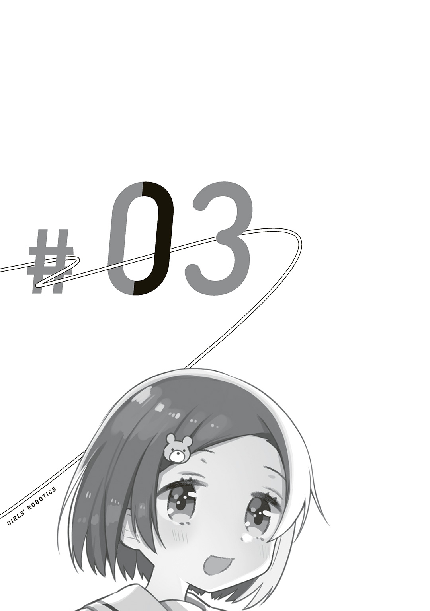
ここで僕の女装生活の一日のサイクルを紹介しておこうと思う。
僕の一日はまず早朝に笹木先生宅のアパートへ行き、そこで桜樹女子の制服とカツラを装着し『樋口悠』へと変装することから始まる。着替えが終わると同時にアパートを出て先生は仕事へ、僕は部活へと向かい、それぞれがやるべきことをする。そして夕方。携帯で連絡を取り合ったあと再び先生宅に戻り、そこでようやく『樋口悠太郎』に戻る。以上が僕の一日のスケジュールである。
ちなみに、桜樹女子の制服の洗濯は先生にお願いしてある。もし、うちの家族に女物の制服が見つかったりなんかしたら最悪の場合、絶縁される可能性もある。先生宅のアパートの合鍵を受け取って自由に出入りできれば便利なのだけど、どうやら僕はそこまで笹木先生の信用を得られていないらしい。というか、笹木先生も一応独身の女性なので、特別な関係でもない男に部屋の鍵を簡単に渡してしまうほうがおかしな話か。
僕の女装生活において先生宅は『樋口悠太郎』と『樋口悠』をきり替えるための安全な更衣室である。
この恰好をしている以上当然のことだが、用をたすのは女子トイレである。初めのうちは女子トイレを使うことにかなりの抵抗を感じていたが、いまとなっては興味本位で音姫で遊ぶくらいの気持ちの余裕ができてしまった。慣れって怖い。
そんなふうに慣れてからは、あっという間のことだった。
初めは教えることや慣れないことが多すぎて難航したが、いざ作業を開始すると三人はそれぞれ自分に与えられた役割を、時には助けを借りながら確実にこなしていった。
まず成長著しいのは珊瑚だった。
「このままのプログラムだと関節が一つ一つ順番に動くことになっちゃうから、次は股・膝・足首のサーボモーターがひとつの命令で一斉に動かせるようにしてみよう。あとで調整するから、入力する数値は適当でいいよ」
よく観察していないと見逃してしまうくらい小さくうなずく珊瑚。備品のパソコンを使い、よどみないタイピングで画面に文字列を打ち込んでいく。
レクチャーをしていても反応が薄いのでちゃんと理解できているのか少し不安だったのだが、僕の言ったことをきっちりと一度で覚えて自分のものにしてしまう。笹木先生の情報では学校の成績も良いとのことだったし、口を動かさないぶん思考を巡らせるタイプなのだろう。
基本的な定型文などは既にマスターし、いまはプログラミングによるモーターの正転・逆転・角度制御のやり方を練習中である。
これができるようになれば関節の制御ができるというわけである。『魂』の部分は問題なさそうだ。
次に、『体』を担当する久穏はというと、ロボットの骨格となるフレーム部の仕上げ作業に入っているところだった。
骨である金属プレート同士や、後から装着されるパーツが互いに干渉しないようにヤスリがけをしたり、あらかじめネジ穴を空けておいて、パーツを固定できるようにしたり。
久穏の描いた絵を基に僕が清書した設計図を見ながら、骨組みの一つ一つを丹念にこしらえていく。
「んー、このままだとヒョロヒョロでなんだかあまり強くなさそうです。早く立派な装甲を作ってあげたいですね」
「そうだね。でも、装甲を支える骨格も大事だよ。これが折れでもしたら大変だから、フレーム強度の計算もしっかりね。安全率の計算式もそんな難しいものでもないから、今度教えるよ。素材の硬度と厚さと予想される外力を代入するだけだから」
「あぅぅ......計算は苦手です......。でも私逃げません。部長さんですから」
久穏のほうもいまのところ問題なし。
最後に、『脳』担当の紫呉は、
「悠ちゃん、ここどうすんのー？」
「回路とマイコンの対応するポート番号をよく見て繫いであげて。電気回路の配線のコツは、列車の線路のイメージで、電気回路は要するに電気の通り道を敷いて整備してあげることだよ。どっかで列車同士がぶつかって事故が起こらないようにね。抵抗器やコンデンサーは通過駅と考えて、ただし上り線と下り線はそれぞれ別に用意して電気が巡るようにしてあげるんだよ」
「......ぐぬぬぬ......ここのハンダがうまく山型にならない......悔しい......」
「ムキになってやろうとするとハンダの熱で壊れる部品もあるから気をつけて。こういうものは壊れていても見た目でわからないから、あとから故障してる部分をつきとめようとすると大変なんだ。早く仕上げるより丁寧にやっていこう」
と、まぁこんなふうに。
僕にできることといえば、三人を順番に回ってアドバイスやミスのフォローをするくらいである。
役割の分担をしたことにより、自分の遅れで他の二人に迷惑をかけまいと責任感が生まれているのが良い方向に作用しているらしく、製作開始から六日が経ったいまでも、彼女たちの士気が下がることはない。ただし一人を除いて。
「遊びたい」
プリント基盤と睨めっこしていた紫呉が、なんの前触れもなくそう言い放った。
「よく考えたら夏休みなのにちっとも遊んでないもん！ 女子高生らしいことしたい！ 開放的な季節に身を任せてひと夏の甘酸っぱい思い出作りたい！ 青春っぽいことしたいぃー！」
ハンダごてと導線を放り出して、デパートのおもちゃ売り場であれが欲しいと駄々をこねる子供のように手足をバタバタさせる。
いま彼女がやっていたのは、ユニバーサル基盤と呼ばれる無数の穴が空いた板に幾つもの電子部品を配置し、ハンダという金属で溶接して固定し電気的に接続させる作業だ。
針に糸を通すような細かい作業であるうえにややこしい配線や部品の配置も気を配らなければならない、非常に神経のすりへる工程である。
回路作りは根気がいる。それゆえに僕も、最初に音をあげるなら彼女だろうと予想はしていたのだ。しかたがないといえばしかたがない。いや、むしろよくここまで我慢したといえるだろう。
「毎日毎日部活ばっかりで休みなし！ 超ブラックじゃん。ブラック部活じゃん！ たまには休みにして遊びに行こうよぉ......一日でいいからさぁー......」
大声を出すのも億劫になったのか、机に額をつけて溶けかけのアイスクリームみたいにぐったりする。
クーラーもついてない真夏の部室での連日の作業はさすがにこたえたらしい。やはりそこは遊びたい盛りの高校生である。
大会まであまり時間はない。しかし、紫呉の言うことはもっともに思えた。
珊瑚は疲れていても黙っていそうだし、久穏も文句は言わないが、二人とも疲れが溜まっているようだった。たしかにここらで一度ガス抜きをしておかないと後半までモチベーションが保てなくなってしまうだろうし、ここらで気晴らしをするのもいいだろう。
「わかったよ。じゃあ明日は一日休みにしようか」
「ぃやったー！」
万歳をして喜ぶ紫呉。
彼女みたいにわかりやすく自分の限界が近いことをアピールしてくれるほうが監督する側としても気が楽だ。
「でもどこに行くんですか？」
「んー、夏に行くとこって言ったら海やプールとかが鉄板だよねー」
「超いいっすね！」
思わず食い気味に、かなり露骨にテンションの上がる僕だった。
水着の女子高生三人に囲まれて水遊びとか最高じゃないか！
よけいな衣服を脱ぎ、体のラインを惜しげもなくさらす三人の姿を拝めるチャンスだ。
元スポーツ選手の紫呉のほどよく筋肉の付いた健康的な体も、珊瑚の小さくてフニフニと柔らかそうな発展途上な体も、非常に有益なデータとなる。久穏の白い肌と、黒く長い髪のコントラストも美しそうだ。
彼女たちのいつもとは一味違う水に濡れた色っぽい表情は、どれだけ美しいものなのだろう。彼女たちが優雅に泳ぐ姿はまさに伝説のマーメイドを彷彿とさせるものに違いない。
あぁ、想像するだけで夜も寝つけぬだろう興奮が湧き上がってくる。
うん。よし、今日にでも水中撮影カメラを購入しよう。そうしよう。
「あっ、でもあたし水着持ってないや。やっぱ今回はナシで」
『たくさんの知らない人の前で水着になるのは怖いです』
「実は私泳げなくて、金ダライなんです」
「僕の期待を返せよおおぉおぉぉぉ！ うああああぁぁああああぁぁぁぁあん！」
悔しさのあまり絶叫する僕だった。血涙を流す思いである。
「ゆ、悠さんはなんでそんなに悔しそうなんですか......？」
いや、まぁ冷静に考えればそういう場所に行く以上僕もその場に合った恰好をしなければならない。制服ならまだしも、さすがに女性用水着を着ることは避けたい。
逃した獲物は果てしなく大きいが、危険を回避できたと思うことにしよう。
「うぅ......悔しいけれど、我慢するよ。それと金ダライじゃなくて金づちだからね」
金ダライはむしろ浮くだろ。
「明日は日曜日だし海やプールはすごい混んでそうだしねー。無難にみんなでショッピングとかどう？ 駅前の商店街にケーキの美味しいカフェができたってウワサ聞いちゃってさー。みんなでブラブラしに行こうよー」
『そのお店の近くにファンシーショップもあるもんね』
要するに目当ては甘味とショッピングか。まぁそれで三人の元気が戻ってくるのなら安いものだ。
「それじゃあ明日、十時に駅前に集合ね。テンション上がってきたー！」
◇
休日に友達同士で街に繰り出すのに、学園の制服で行くわけにはいくまい。当然、私服である。
僕はついに女子の制服だけでなく、私服の女装にまで身を染めてしまうのか。いや、覚悟だけなら潜入前日にムダ毛を処理した段階でついているのだが、むろん僕が女物の服など持っているわけがない。よって、笹木先生に頼んで女物の服を準備してもらわなければならなかった。
長袖のＴシャツに七分丈のジーンズパンツ、スニーカー。
できるだけ露出を抑えつつ不自然がないようにと笹木先生に見立ててもらい、先生の私物を借りたものである。ちなみにこの姿もしっかりと写メ撮影された。
それにしても女物のジーンズってなんでこんなにピッチリしてるんだろう。下半身がすごい窮屈なんだが。
翌日、駅前。約束時間の五分前。近くの駐輪場にバイクを停めてから集合地点に行くと、他の三人はすでに集合していた。艶のある久穏の黒髪が夏の強い日差しを反射してキラキラと輝いていて、遠目からでもすぐにその姿を見つけることができる。
「悠さん、こっちでーす！」
僕に気がついた久穏が背伸びをしてこっちこっちと大きく手を振った。
久穏は肩の出たサマーセーターにフリルのついたミニスカート、花柄のサンダルといういかにも女の子らしい姿である。彼女が手を振るたびに揺れるスカートの裾に、思わず目線が吸い寄せられる。水着とは比べられないが、普段の制服なんかよりずっと露出の多い肌を見て、胸の高鳴りを感じてしまった。
「もー、悠ちゃん遅いよー」
紫呉も珊瑚も同様に夏らしい薄着姿だ。
無警戒な女子の生肌をこんな近くで拝めるなんて、女装冥利に尽きる。
僕はすかさずスマホのカメラ機能を起動し、シャッターを押す。女の子のファッションを研究するのも理想の女性アンドロイドを作るためには必要な情報だ。
「ごめん、待たせた？」
「あと二秒遅かったら置いていこうって相談してたとこ」
「ひどい！」
「冗談冗談......っていうか前にも言ったけど悠ちゃん背高くてスラッとしてるわね。悔しいけど服もかっこよくて似合ってるし。ねたましい......」
「それを言ったら紫呉もスタイルいいでしょ」
「でも悠ちゃんには負けるよ。あたしより背高い人あまり見たことないし」
『デキる大人なお姉さんって感じです。二人ともウチと同い年とは見えないです』
珊瑚は白いワンピースという清楚ないでたちで、頭にはツバの短い麦わらのハットがちょこんと載っていた。肩から下げたバッグはおそらくタブレットを入れておくためのものだろう。静かな湖畔の木陰で佇んでいるのが絵になりそうな無垢な少女という感じだ。
「珊瑚の恰好も女の子っぽくてカワイイよ」
「あ......りが、と」
蚊の鳴くような声でそう言うと、恥ずかしそうに紫呉の後ろに姿を隠す。
紫呉はというと、涼しげなキャミソールとホットパンツ。ほどよく筋肉のついた白く長い脚と金髪をシュシュで纏めたポニーテールが相まって健康的な印象を受ける。モデルをやっていますと言われても疑う人はいないだろう。
そしてなにより、まるで一流の彫刻家が精魂込めて仕上げたような長くしなやかな脚に、目を奪われる。
（生脚ッ！ ピチピチの女子高生の、紫呉の生脚ッ！ いただきましたッ！）
この素晴らしい脚はとくに入念に前後左右いろんな角度から連射モードで撮影しておかなければ。
「ちょっ！ なんでそんな私ばっかり撮るの！」
「いや、あんまりキレイな脚だからつい」
「うぅぅ......」
恥ずかしそうに顔を赤らめながら脚をモジモジさせる紫呉である。
「おぉー、すごい、肌スベスベだね。ほどよいハリと弾力があって、素晴らしい。いい仕事してますねー」
「感想言いながら人の太ももに頰ずりしないでよ！ 鼻息荒いし！ 周りの人にすごい見られてるし！」
「人目がなければいいの？ じゃあ路地裏行こうか！」
「よけいにいかがわしいでしょ！ いいかげん離して！」
そういえば笹木先生曰く、紫呉はスポーツ推薦で入学したはずだと言っていたが、いま見る限り彼女の体は健康そのものでケガや手術の痕などは見当たらない。故障で自棄になって暴力事件を起こして運動部を辞めることになったということだろうか。
「な、なに？ 今度はじっと見つめて。あたしなんか変？」
あまりジロジロ見すぎたのだろう、紫呉は僕の視線に怪訝な表情を浮かべた。
「ううん。紫呉の服もよく似合ってるよ。ただ、ぬいぐるみを抱いて寝るくらいだからもっとフリフリのやつとか着てくるんじゃないかって勝手に予想してたけど」
「ぬいぐるみの話はいいでしょ、もー！ 早く行くよ！」
紫呉に急かされるように、商店街のほうへと歩を進める。
日曜の駅前通りは多くの人が行き交っており、体の小さな珊瑚は時折人ごみに流されそうになってアワアワしていた。
「悠ちゃんは今日どうやって来たの？ 電車？」
「ううん、バイク」
「悠ちゃんバイク乗ってんの！ スゴイじゃん！ 免許証見せて見せて！」
「いいよ。......はっ！」
いいわけがない。免許証の顔写真には目つきの悪い男子学生が写ってるだろうが。アホか僕は。
「やっぱダメ！ 写真写り悪いから！ もし見られたら恥ずかしさで死ねるから！」
「えー、なにそれー」
危ない危ない......。もう少しで自滅するところだった。
こういう何げない会話でも、油断してると正体がバレそうになることもあるんだな。
とくに今日は休日の繁華街。普段の部室とは違う状況と場所だからこそ、より一層の注意が必要だろう。
それにしても、さっきから妙に視線を感じるというか、明らかにすれ違う人たちに注目されてしまっている。
「三人が可愛いのは認めるけど、こんなにジロジロ見られるなんて」
「見られてるのはあたしらだけじゃなくて、悠ちゃんもだと思うけど」
「......えっ、僕？ なんで？」
背の高い女（正確には女の恰好した男）が外を歩いてるのがそんなに珍しいものなのだろうか？ よくわからない。
どうせ見るなら、久穏の綺麗な髪でも見ればいいのに。
シルクみたいにサラサラだし。羽毛よりも軽そうで、まるで天使の羽のようだ。
数日前、部室に落ちていた彼女の髪を数本採取してこっそり持ち帰り、自宅の冷蔵庫で真空パックに入れて保存してあるのだ。今度時間があるときに顕微鏡で見てみよう。アンドロイド作りの役に立つかもしれない。
「.........？ 悠さんどうかしましたか？ 私のことばかり見て。あ、もしかして私のこと好きになっちゃいましたか？」
「うっ......」
まるでキラキラと輝くような笑顔に、思わずドキッとする。
この笑顔が僕だけに向けられていることを意識すると、なんだかすごく気分が高揚してくる。
「うふふ、冗談ですよ」
そう言って、久穏は視線を前に戻した。
年下の女の子にいいようにからかわれてしまった。ちょっとだけ悔しい。
お目当てのカフェのランチタイムまで時間があるということなので、紫呉の提案で同じ商店街のなかにあるゲームセンターに行くことに。
「あたしＵＦＯキャッチャーやろーっと。大漁期待しててねー」
さっさとプライズコーナーへと消える紫呉と、その後を追う珊瑚。
残された僕と久穏は、なんとなく連れ立って歩きだす。
「私、ゲームセンターに来るの初めてなんです」
「そうなの？ でもゲーム好きって言ってなかったっけ？」
「はい、両親は考えの古い人間なので、『悪い男が寄ってくるから』って連れていってくれなくて。ゲームは家でしかしたことがありません。わぁ、あの大きい画面のはなんですか？」
興奮した様子で店内を速足で探索する久穏。なにやら気になるゲームを発見したようで、大きな筐体の前で立ち止まる。
銃の形をしたコントローラーで画面の敵を撃つ、よくあるシューティングゲームだった。
「......？ これ、どうやって始めるんですか？」
「いや、お金入れないと始まらないよ」
「あっ、そ、そうですよね！ 私うっかりしちゃって、えぇっと、おいくらですか？」
こういう世間知らずなとこはいかにもお嬢様らしいな。
財布をカバンから出そうとモタつく久穏を制して、僕が百円硬貨を二枚入れると導入ムービーが流れ始めた。
「ほら、始まるよ。久穏は赤色のカーソルで、僕は青ね」
「はっ、はい」
いざゲームが始まると、彼女の目がギラリと光り、一瞬にして纏う空気が変化する。
「一匹残らず狩り尽くします」
普段の喋り方からは想像もできないくらい、ドスの効いた冷たい声に、思わず身がぞくり、と震えた。
ニヤリと薄い笑みを浮かべながら、銃を乱射しまくる久穏。
しかもゲームはかなり得意なようで、僕が早々にゲームオーバーになったのに対し、久穏は視界に映ったゾンビを片っ端から撃ち殺していく。おまけにほぼすべてがヘッドショットという正確さ。
しかしその反応のよさゆえか、撃つとペナルティになる民間人まで見境なく倒してしまい、そのたびに『チィッ！』『クソッ！』と悪態をついていた。熱中しているとつい乱暴な言葉を口走ってしまうようだ。
しかし、徐々に民間人の見分けにも慣れて誤射をしなくなり、濁流のように押し寄せるゾンビどもを蹴散らして、結局ノーコンテニューのままゲームをクリアしてみせた。
「まさか初見でワンコインで全クリするなんて......」
僕が驚いた理由はそれだけじゃない。整備が行き届いていないのか、コントローラーと画面の照準がズレていたにもかかわらず、それを踏まえたうえでのこの戦果。
「んんー！ 気持ちよかったです」
エンディングを見終わり銃を下ろして、体をほぐすようにして伸びをしてから深呼吸。そのころにはすっかりいつもの穏やかな彼女に戻っていた。
ゲーム中はハイになって人格が変貌するタイプの人間らしい。
僕がどうしてクリアできたのかと訊ねると、
「敵の動きをよく見て撃つだけですよ」
とのことだった。にわかには信じがたいが、実際に彼女は反射神経の良さと手先の器用さを証明してみせた。
いったいどんな反射神経してんだこの子......。
もしこの子が本当に戦闘ロボに乗ったら凄腕パイロットになりそうだ。
時間も頃合いになったところで紫呉と珊瑚に合流すると、紫呉はスーパーに買い出しに行った帰りの主婦みたいに両手にビニール袋を抱えていた。
「もしかして、それ全部ＵＦＯキャッチャーの景品？」
「そだよー、千円ぐらい使って元は取った感じかなー。あっ、このちょいブサなぬいぐるみはあたしのでー、お菓子は部室の備蓄にしてみんなで食べれるっしょ、そうそうラジコンとかプラモとかも取ったから部室に置こうよ」
『しぐちゃんにストラップ取ってもらいました』
お得意の空間把握で欲しいものをあらかたかっさらってきたらしい紫呉は、昨日の鬱憤が噓のように上機嫌だった。
久穏も珊瑚も楽しんでいるようだし、今日を休日にしたのはやはり正解だった。
紫呉の戦利品をコインロッカーに預けて最後に四人でプリクラを撮ってゲームセンターを後にし、いよいよ目的のカフェレストランの前に到着。最近オープンしたばかりとあって、外観はピカピカである。
女性客で混みあう店内に踏み込もうとしたとき、僕たちは不意に知らない声に呼び止められた。
「ねぇキミたち、ちょっといいかな？」
大学生ふうの男の二人組だった。一人はサングラスをしたツンツン頭で、もう一人は大きな銀ピアスをつけていた。
「俺たちもこの店いいなぁって思ってたんだけど、男だけだと入りにくくってさぁ。一緒に入んない？ 大丈夫、金は俺たちが出すからさ」
「みんなカワイイよね。学生？ どこの学校？」
店の前で好みの客を待ち伏せて声をかけるという算段だろう。男二人でこんな店に来ている時点でナンパ目的なのは明らかだった。
「ほらほら、ゆっくり中で話そうぜ」
「あ、わ、私......」
「やめろ」
ツンツン頭の男が久穏の手を引こうとするのを、僕は見逃さなかった。その手を払いのけて、久穏と男の間に割って入る。
「久穏、相手にしなくていいよ。行こう」
困惑する久穏の手を引いて無視しようとする。が、ツンツン頭も簡単に諦める気はないらしい。しつこくつきまとってくる。
「そんな固いこと言わずにさ、ちょっとくらいいーじゃん。時間とらせないから。つーか、キミなんかすごくスタイルいいね。モデルとかやってたりする？ キミのこともいろいろ教えてよ」
舐めるように僕の体に視線を這わせながら馴れ馴れしく僕の肩を抱いて、店内に入るよう促してくる。
男の汗臭いニオイと、荒い鼻息がうなじに当たって、不快指数メーターが振りきれる。全身が粟立って拒絶反応を示した。僕の本能が、全力で警鐘を鳴らしている。
こ、こいつ、よりによって男である僕を......!?
「いえ、結構です！」
男の腕を振り払って再度久穏を背中に庇う。
下心丸出しの見ず知らずの男に体を触られるのがこんなに怖いことだなんて思ってもみなかった。三人をこんな連中と関わらせるわけにはいかない。
「そんな冷たいこと言わずにさ。ほら荷物持ってあげるから行こうよ」
なおも食い下がる二人組。銀ピアスの男が珊瑚の持つバッグに手を伸ばそうとしてくるのを、僕は止めようとするが――、
「おい」
僕よりも先にその手をがっしりと摑んで捻り上げたのは、鬼のような形相をした紫呉だった。
「その汚い手であたしの親友に触ろうなんていい度胸じゃない」
いつも明るく親しみやすい紫呉の声が、いまは氷のように冷たい。彼女が纏う不気味な気配に、思わず僕たちまでたじろいだ。
「いだだだだだだだ！ いきなりなにすんだ！」
「男は全員死ね！ そしてハゲろ！」
「なんなんだこいつ、放せこの貧乳ノッポ！」
「だれのどこがなんだってぇ!? もういっぺん言ってみろやァ！」
男の腕を振り払うと同時に紫呉は素早く体をひねり、長い脚をムチのようにしならせて、
「ッセイ！」
勢いの乗った回し蹴りが、顔面に直撃。まるで映画のワイヤーアクションみたいに、銀ピアスの体が吹っ飛ぶ。吸い寄せられるように向かいの店のシャッターに激突。けたたましい音が商店街のアーケードに反響し、周囲の視線が一斉に僕らに向けられた。
「男皆死スベシ」
紫呉が残ったほうのツンツン頭に睨みを利かせるとそいつは短く悲鳴をあげ、伸びている銀ピアスを担いで一目散に逃げ去っていった。
「うわぁ......」
衝撃の映像に開いた口が塞がらない。
『しぐちゃんは子供のころに年上の男の子にいじめられたことがあったらしくて、それ以来男の人が大嫌いなんです。バスケ部で体を鍛えて男の人より強くなったいまは、自分より背の高い男の人が近くにいるだけで腹が立ってつい手が出てしまうんだそうです』
「ついってレベルじゃないでしょ......」
「紫呉さん、怖いです......」
久穏も僕の腕にしがみついたままガタガタと震えていた。
『しぐちゃんの弟はまだ小学生だから平気だそうですけど、お父さんはお家ではフルフェイスのヘルメットをしているって言ってました』
「家族ですらも!?」
そこでハッと思い出す。笹木先生が言ってた僕が女装によって守られているって、もしかしてこういうことか!?
僕が男の恰好で紫呉と接触していれば、僕はこの男のように脳天を打ち抜かれていたかもしれない。そう思うと背筋が凍る思いがした。
「あー、スッキリしたー。ん？ 悠ちゃんなんか顔が真っ青なんだけど、どったの？」
「い、いや、なんでもないよ！ 男ってホント下品で気持ち悪くて最低だよね！」
「おっ、悠ちゃんもそう思う？ 気が合うねー」
男としてプライドを捨てて躊躇なく保身に走る僕である。女の恰好をしていてよかったと、心の底からそう思った。
◇
二人組はこの店の前を縄張りにしていたナンパ常習犯で、店側も迷惑していたらしく、店長と名乗る女性から感謝の言葉とサービスのラズベリータルトを頂いてしまった。
たっぷりとスイーツを満喫し、そろそろ店を出ようかという頃合いである。
「待ってください悠さん、お口にホイップついてますよ」
「えっ、どこ？」
「そっちじゃなくて反対です」
言うが早いか、久穏は僕の口元のホイップを指で拭って自らの口へと運び、小さな舌で舐めとった。
「ふふっ、甘いです」
いたずらっぽく笑う久穏。
僕はなんだか急に顔が熱くなるのを感じて、思わず久穏から目を逸らした。
「......？ どうかしましたか？」
「やっ、ぜ、全然そんなことないですよ!?」
声が裏返ってた。情けない。
男女の間だったら普通は恋人同士じゃないとやらないことだよな、いまの。女同士だから久穏はなんの意識もしていないのだろうけど、僕からすればかなりきわどい仕草だった。
なんというか、すごく不思議な気分だ。こんなふうに一緒に甘いものを食べたり、お互いのファッションチェックをして褒めあったり、男同士だったら絶対にしないもんな。
「この後はどうしよっか。あたしは行きたいとこがあったりなかったり......なんて」
「ファンシーショップでしょ。わかってるよ」
さっき人を蹴り殺さんばかりの勢いはどこへやら、完全に乙女モードの紫呉である。
「近くに電気部品とかを扱ってる店があるから、僕ちょっと行ってくるよ。みんなは先にそっちに行ってて」
部室倉庫に在庫のなかったセンサー類が欲しかったところだ。ここまで来たついでに調達しておきたい。
顔も知らない理事長から笹木先生経由で頂いた五万円の軍資金の中からいくらか使わせてもらうとしよう。
「えー、せっかく気分転換に遊びに来てるのに。仕事とプライベート分けなさいよっ」
「ごめんって。そんなに時間もかからないから」
『行ってらっしゃい』
喫茶店から退出し、みんなと別れて歩きだすと、すぐに久穏が駆け寄ってきた。
「悠さん、待ってください！ あの......私も、ご一緒してもいいでしょうか？」
「いいけど、無理につき合ってくれなくてもいいんだよ」
「いえ、その、私もパーツショップに行ってみたくて。ロボットのパーツのこと、いろいろ教えてくれませんか？」
「もちろん！ じゃあ案内するよ」
僕がそう言うと久穏はにっこりと笑って、僕の隣に並んで歩き始めた。
なぜだか今日の久穏は機嫌がよくて、翼が生えて飛んでいきそうなくらいだ。
というかこれ、女の子と二人で休日の街を歩くなんて普通にデートなんじゃないか？ そう意識した途端、緊張から体が強張った気がした。
ニコニコと純真な笑顔を浮かべる久穏を見ていると、なんだかドギマギしてしまう。
「私は――」
一度深呼吸をし、なにか大切なことを言うために慎重に言葉を選ぶように、少しだけ言いよどむ。
「夏休みなのに、悠さんは毎日私たちにロボットの作り方を教えにきてくれて、とても感謝しています。さっきも、怖い男の人たちから私を庇ってくれて、いまも私に合わせてゆっくり歩いてくれています。悠さんが優しい人だってこと、わかってます。......悠さんの考える理想、女性型アンドロイドには賛成できなくてケンカしちゃいましたけど、私は悠さんともっと仲よくなりたいと思ってます。私にとって悠さんはロボットのことでちゃんとお話しできる初めてのお友達でしたから。それだけは知っておいてほしいです」
僕と目が合うと、「えへへ」と照れ笑いを浮かべて、頰を赤らめる。
うわぁ、やべぇ、どうしよう、すげぇ可愛い。
いまさらだけど、この子は普通以上に美人でいい子なんだよな。
こんな美少女に、もっと仲よくなりたいって言われちゃった。
「これからもずっと一緒にロボット作りたいですね」
「それは......」
思わず、足を止める。
僕が彼女たちといられるのは、いまだけだ。
時間がくれば、僕は久穏と、紫呉や珊瑚ともお別れをしなければならない。
それを意識した瞬間、チクリと胸の奥が痛むような感触がした。
言葉に詰まる僕を見て、久穏は薄く微笑んで、
「さぁ、行きましょう」
足を止めた僕の手を、優しく取って導くように歩きだす。
なんだかすごく気恥ずかしい。決してやましいことはないけれど、変にソワソワする。
パーツショップに着くまでの間、妙な緊張感から僕らはお互いになにも言葉を発さなかったけれど、手だけは離さなかった。
彼女の小さくて柔らかい手の感触を、僕は一生忘れることはないだろう。
◇
歩くこと数分、僕たちはパーツショップへと到着した。
老齢の店主が営む狭い店内に、狭い間隔で並んだ棚に、所狭しと並んだパーツ。狭いづくしの店だけどそのぶん品揃えはいい。いま欲しいのはジャイロセンサーと呼ばれる、物体の角度や角速度を測るための部品。ロボットの姿勢制御に必要になってくるものだ。小型で扱いやすいものがあればいいのだけれど。
「悠さん、なにを見ているんですか？」
「ボールベアリング。このシンプルな見た目といい、摩擦を殺して滑らかに回転してる様といい、素晴らしいと思わない？ 人を引きつける魔力のようなものが宿ってると思うんだよね。これを風呂桶に一杯に張って中に浸かったら血流もサラッサラになると思うんだよねー。肩こり腰痛も治って温泉なんかよりよっぽど効果的だよ。間違いないね。湿布の代わりに体に貼ってもいいと思う」
「詐欺師でももっとマシな謳い文句を言うと思いますよ」
「いやぁ、それほどでも」
「褒めてませんよ！ なんでちょっと照れてるんですか！」
次にセンサー類が無秩序に並んだ棚をざっと見回しながら、ふと思う。
ん？ 待てよ？ というか僕いま、なんの抵抗もなく女装のまま行きつけの店に買い物に来ちゃってるじゃないか！
正気か僕!? 初日に町をうろつくことすらためらっていた自分はどこへ行ってしまったんだ！ 人間に飼いならされた駄犬のように警戒心がまるで皆無じゃないか！
ううむ、いかんな。
いいかげん、感覚が麻痺してしまっている。
胸を揉まれてもバレなかったのだから、少々のことで感づかれたりはしないと気が大きくなってしまっているのかもしれない。
いいか、油断禁物だぞ僕。
大きく深呼吸を一つ。
「......？ 悠さん、なんだか緊張してませんか？」
「ううん、大丈夫だよ」
気持ちを入れ替えて、改めてお目当ての物を探す。さっさと用事をすませて帰ろう。
しかし、ようやく見つけた商品を手に取ろうとしたところで、同じように伸びてきた手と接触する。
「あっ」
「おっと、失礼」
手の触れ合った人物は、一言で言ってしまえば、イケメンだった。
腹の立つくらい甘いマスクと爽やかな美声を持った美男子である。
年は僕と同じくらい。おそらく高校生ぐらいであろうその少年はまるで動画を一時停止させたみたいに、僕の顔を注視したまま驚きの表情で固まっていた。
おい、なんだよ。僕の顔になにかついているのか？
「どうかしましたか？」
「......えっ、あ！ す、すいません。ジロジロ見てしまって。失礼ですよね」
「いえ、お気になさらず」
「女性でも機械工作に興味のある方がいてくれたんだって思ったら、なんか嬉しくって。この店に通うってことはあなたもなにかモノ作りをしてるんですか？」
「えぇ、まぁ。僕たちは一応ロボット部ですから」
「ロボ部ですか！ 奇遇ですね俺もなんですよ！」
ずいぶんグイグイくるなこの人。さっきのナンパの件もあって話しかけてくる男全員に対し懐疑的になってしまう。さっきからやたらと会話を広げようとしてくるけど、この人はいったいなにがしたいのだろう。
久穏も僕の服の裾を握って、警戒するように少年を窺っていた。久穏を連れていつでも逃げだせるよう心の準備だけはしておこう。
「お二人はどんなロボットを作ってるんですか？」
「いまはロボ部のみんなと一緒に――」
「二足歩行ロボット、ですよね」
見事に言い当てられて、思わず久穏が「わぁ」と声を漏らした。
「すごい、なんでわかったんですか？」
「さっき取ろうとしてたのって、ジャイロセンサーですよね。来週、市内で二足歩行ロボット限定のロボコンが開催されるこの時期にこれを買うってことは、きっとそうなんだろうなって。実は俺の部もその大会に出るんです」
「じゃあ私たちライバルになるんですね」
「そういうことになりますね」
なんだかおかしくなって、僕らはお互いの顔を見て笑いあった。
最初は急に話しかけられて驚いてしまったけど、悪い人ではなさそうだ。
「どこの学校か訊いても？」
「桜樹女子です」
もちろん黒松谷の校名を出すわけにはいかない。たとえ学園の外であっても、女装をしているときの僕は『樋口悠太郎』ではなく『樋口悠』なのだ。
「ん？ 桜樹女子のロボ部ってことは......」
なにやら思案するような素振りを見せて、納得するように小さくうなずいている。
ふと気がつけば紫呉と珊瑚と分かれて結構な時間が経過していた。待たせるのも悪いし、そろそろ彼女たちと合流したほうがいいだろう。
「すいません。僕たち、そろそろ行かないと」
断りを入れてレジの方角に足を向けると、「待って！」という声とともに手首をつかまれた。
僕が驚いて振り向くと、彼はひどい失敗をしたような困り顔でぺこぺこと頭を下げた。
「ナンパ、駄目です！ 悠さん大丈夫ですか？」
僕を庇うように少年に対して必死の威嚇をする久穏。
「ご、ごめんなさい。まだお別れにしたくなくて、ついとっさに......。キレイな人だから俺、緊張しちゃって。俺こんな気持ちになったの初めてだからどうすればいいかわかんなくて......さっきもあなたに見惚れちゃってて......その......」
ぞわわわ、と背筋にすさまじい悪寒が走った。まるで服の中でムカデが這い回っているような気色悪い感触に、思わず声を荒らげてしまった。
「へ、変なこと言わないでください！」
「ご、ごめんなさい！ 怒らせるつもりは......その......」
「............」
「............」
気まずくなってお互いに黙り込んでしまった。
なんだこの空気。なんだこの状況!?
ちらりと盗み見ると彼の頰がわずかに朱に染まっているのがわかった。
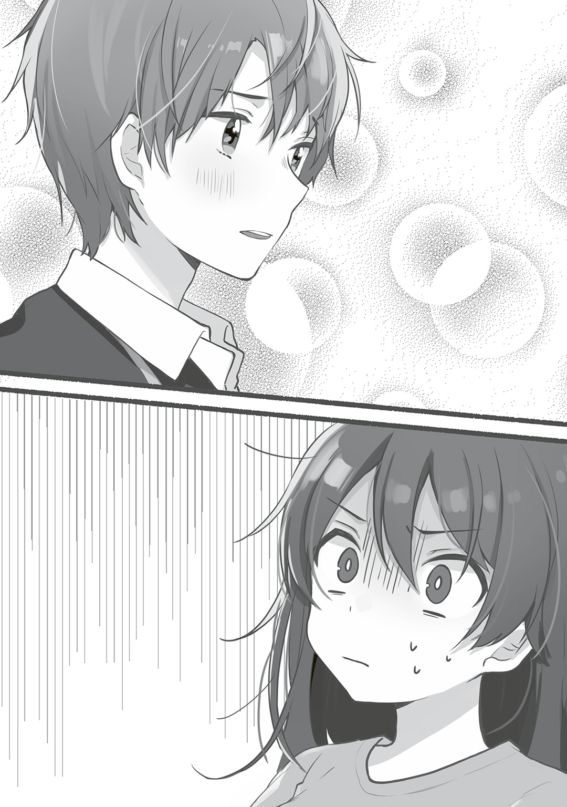
こ、こいつまさか本気で僕のことを......!?
うぅああああぁぁぁぁぁぁああああぁぁぁあ！ 最悪だぁぁぁあああぁぁ！
なんなんだよ！ 安っぽいラブコメ漫画で似たような状況を見たことがあるぞ、勘弁してくれ！
「申し遅れました。俺は矢民透と言います」
「は、はぁ、どうも......って、えっ矢民？」
「薫さんの弟さんですか!?」
にこやかに肯定の笑みを浮かべる少年。
最近どこかで聞いたことがある名字だと思ったけど、彼があの噂の弟くんだったのか。
僕たちの初戦の対戦相手。強豪校、海原のエリートたちを率いるチームリーダー。
「姉さんの話を聞いて面白そうな人たちだなと思ってました。改めて、海原付属高校ロボット部で今年から部長を任されました、矢民透です」
呆気にとられている久穏の背中を押して、あいさつするように促すと、久穏はハッと我に返って透の手を握り返した。
「ぶ、部長の藍澤久穏です」
「へぇ、久穏さんはいま部品の加工作業をされてるんですね」
「ッ......！ ナ、ナンデ、ワカル!?」
まるでなんでもお見通しと言わんばかりにまた言い当てられ、久穏の肩がビクリと跳ね上がった。驚きのあまりカタコト外国人みたいになってるし。
「ヤスリがけで出る鉄粉が爪の間に残っていましたから。女性なのに、大変ですね」
たしかにここ数日、久穏は金属フレームの加工作業に従事していた。そのときに出る細かな金属カスが爪の間に入って黒っぽくなるのはよくあることだ。
透はそれを握手しただけで見抜いた。怖いくらいの観察力である。
「こ、この人、なんか怖いです......」
透の人を見透かしたような言動に、不気味なものを感じとった久穏が、僕にだけ聞こえる声で不安を訴えた。
「藍澤家のご令嬢にお会いできて光栄です」
透の言葉に、久穏の肩が震えた。
「......家のことは関係、ありませんから」
無理矢理絞り出したような、苦々しい声色。
まただ。
以前薫に自身の家の話題を出されたときも、久穏は明らかに動揺していた。
理由はどうであれ、いま彼女の心が乱れているのは容易に見て取れる。
しかし、彼女にも部長としての意地があるのだろう。精一杯毅然と振る舞おうとする。
「私たちのロボット部は今回が初めての大会です。海原付属は多くの大会に出て優秀な成績を収めている強豪だと聞いています。それはどうしてですか？」
「強さの秘訣、ですか？ 別に大したことではないですけど、海原にはちょっとした決まりがあるんですよ」
「決まり？」
「半年に一度、部内でロボコンを開催し、優勝した者が学年に関係なくすべての決定権を持つ部長兼チームリーダーとなって部を勝利に導く。それがうちのチームの伝統的なやり方なんです。今年の在籍数は四十人くらいだったかな。チームもロボットも同じですよ。チームは部員という歯車の組み合わせで動いています。歯車はただ黙って自分の仕事をするだけでいい。無駄な自己主張は故障の元です。だから俺がアイデアを出して、設計し、パーツを選び、プログラムする。部員たちは俺の指示する通りの作業を、ミスなくただ淡々とこなしていけばいい。精密で、精確で、精巧な作品を仕上げるためには、これが一番効率的なんです」
「そんな......。四十人も人がいて、意見を言えるのが一人だけなんて、もったいない。それだけの人数がいればきっといいアイデアが生まれるはずなのに。自分のアイデアを披露することすら認められないなんて、他の部員が不憫すぎるよ」
黒松谷なんて部員が僕一人で相談する相手もいないのに。
「そうでしょうか？ 人数が多いからこそ、意見が分散してまとまりがなくなってしまうんですよ。自分勝手な意見や行動は、チームの機能を下げる。不要なパーツはただの重荷、不純な意見は思考の妨げだ。能力のあるものがみんなを導く。それ以外の者はそれを支える。徹底された機能美、それが海原の目指すロボット作りです」
透の言葉からは、揺るぎない自信が感じ取れた。
部内での厳しい競争と、部員の労働力の一点集中。
それが、海原ロボット部の強さの秘密。
部員が一人の黒松谷男子や素人だらけの桜樹女子なんかとは、レベルの差がありすぎる話だった。
海原はたしかに強い。
それに伴う結果も出している。
だけど、それじゃあまるで工場の生産ラインじゃないか。他の部員たちの意思はどうなる。よけいなものだと切り捨ててしまっていいのか。
そんなの......機械的すぎて、遊び心がなさすぎる。
透の言っていることが、住んでいる世界が違う人の言葉のようにとても遠く感じる。
ロボット作りに真剣に向き合うからこその、徹底した実力主義。
同じロボット部なのに、僕たちとはなにもかもが違う。考えがあまりに異質すぎて、恐怖すら覚える。
僕が透の、海原の空気に吞まれてなにも言えなくなっているなか、
「それ、楽しくないです」
久穏はまるで、さも当然のことを告げるかのように、僕が言いたくても言えなかった言葉を、はっきりと言ってのけた。
「そんなのは本当のチームではありません。あなたは、みんなと一緒にいるのに独りです。それは、とっても辛くて、悲しいことです」
久穏の言葉に、今度は透が目を見開いた。
「俺たちは――海原は楽しむためにロボットを作ってるんじゃない。三年生が抜けて、いまの海原ロボット部は実質俺一人で支えているようなものです。無様な結果を出して先輩たちの顔に泥を塗るわけにはいかない。海原のロボットは常に進化し続けることを証明しなきゃならない。海原は勝ち続けなきゃいけないんです。だから俺は、あなたたちを倒します」
久穏と透はお互いを推し量るかのように、静かに見つめ合う。
次に透はやたら熱のこもった視線を僕に送りつけてから、
「大会で会えるのを楽しみにしています」
そう言い残すと、踵を返して颯爽と店をあとにした。
僕は自分の手に持ったジャイロセンサーを見て思う。
......あの人、結局なにも買っていかなかったけど、それでいいのだろうか。
◇
ライバルとの予期せぬ出会いがあったあと、僕たちは買い出しを再開した。
「っよし、買い出し終了。久穏おまたせ」
会計をすませて久穏の姿を探して通路を覗くと、彼女は店内の隅で、俯いて小さく体を震わせていた。
もしや、海原が強敵であることを実感して怖気づいてしまったのかな。いまから緊張しててもしょうがないのに。
「久穏、大丈夫？」
なにごとかと彼女の顔を覗き込むと、彼女はなぜか興奮した様子で鼻息を荒くして商品棚の一角を食い入るように凝視していた。
「な、なにしてるの？」
「このお店、プラモも置いてあるんですね！ 見てください、これ！ 『投擲鉄人ダンシャリダー』ですよ！ 二十年以上も前に発売された商品が新品で置かれてます！ しかも普通ならプレミアがついて何万円もするのに定価のままなんて！ すごすぎます！」
明らかに売れ残り放置されすぎて色褪せたプラモデルのパッケージを、僕の鼻先に押しつけるようにして見せつける。すごくホコリ臭いんですけど。
「ケホッ、よかったね......」
「悠さんについてきて正解でした！ 私、これ買います！」
僕も見たことがないようなマイナーなロボットアニメの機体が描かれたプラモデルの箱を、まるで勝ちほこったように掲げてレジへと向かう久穏であった。
なんだか心配して損した気分だ。
パーツショップでの買い物を終えて、紫呉と珊瑚に合流すべく商店街のアーケードを二人で進む。
久穏は先ほど購入したばかりのプラモデルの箱を開けて、中に入っていた組立設計図を見ながら歩いていて、すれ違う人にぶつからないかと見ていて少し不安になる。
「そんなワケわかんないロボのプラモまで買うなんて。本当にプラモが好きなんだね」
「ワケわかんなくなんてありません！ 悠さんは『投擲鉄人ダンシャリダー』を知らないんですか？」
「二十年も前の作品なんてさすがに知らないよ。僕たち生まれてすらないじゃん」
「うふふん。では無知な悠さんのために説明してあげますね。ダンシャリダーの特徴は、武器を標準装備していないところにあります。独断と偏見で要らないものを決めて、それを怪人に投げつけて戦う正義のロボットなんです。たいていは近場にある車や民家を投げます。なぜかテレビ放送はたった七回で終わってしまったんですけど」
「それどう考えても打ちきりだよね」
でも、まさか久穏とこんなに自然に会話ができるようになるなんて、思ってもみなかった。初対面であれだけ口論してしまったことからは想像もできない。
これからも、こんなふうに穏やかな時間を過ごせればいいんだけれど。
なんてことを考えていると、
「あっ」
手元の設計図に夢中で注意が散漫になっていたのだろう。久穏がなにかにぶつかった。
ぐらり。
居酒屋の店舗の前に不安定なまま高く積まれたビールケースの塔が、ゆっくりと僕たちのほうに傾いてくる。
「危ないッ！」
考えるより先に体が動いた。
久穏を自分の腕のなかに引き込んで、倒れてくるビールケースに対して背中を盾にして受け止める。
背中と後頭部に数度の衝撃。ガラガラと音を立てて、いくつものビールケースが地面に崩れ落ちてくる。
その音が収まるのをしばらく待ってから、状況を確認する。
ビールケースが頭に当たってジンジンした痛みを感じるけど、大したことはないだろう。
瓶が割れた音はしなかったから、落ちてきたのは空のケースだけだったみたいだ。
「あ、ゆ......悠......さん？」
抱きとめていた久穏を解放すると、彼女はひどく困惑したように声を震わせて、僕の顔を見上げていた。
「どうかしたの？」
どこかケガでもしたのかと思い、彼女に手を差し伸べようとすると、
「......ッ触らないで！」
久穏はまるで僕に怯えるみたいに悲鳴のような声をあげ、僕の手をはねのけて後ろにとびのいた。
後ずさる久穏に近づこうと一歩踏み出して、僕はそこでようやく気づく。僕の頭に乗っているはずのカツラが僕の足下にあった。
一気に頭の中が真っ白になっていく。
「あなた、お、男の人？ な、なんで......」
「や、ま、待って、これは......！」
慌ててカツラを被りなおす。しかし、いまさらなんの意味もない。
まずい。どうしよう。どう説明しよう。そんなに怯えた顔しなくてもいいだろう。なんて言えばいい。どうすればわかってもらえる。
あぁチクショウ、思考が空回りする。どうすればいい。
見捨てるように僕に背を向け、久穏が走りだす。
「待って！」
追いかけなきゃ。どうすればいい。怖くて脚に力が入らない。
なんでこんなことに......。そんなつもりじゃなかったのに。
「久穏......」
小さくなっていく久穏の背中を見ながら、僕は呆然と立ち尽くすことしかできなかった。
◇
「あー、あたし今日はここに泊まるわぁ......。みんな先に帰ってねー」
「お客様、それはちょっと......」
『しぐちゃんお店の人が困っちゃうよ』
しかたなく一人で、みんなと合流するためファンシーショップに立ち寄ると展示品の二メートルの特大テディベアに抱きついた紫呉がユルユルに頰を緩ませながら、店員さんと珊瑚を困らせているところだった。
僕が紫呉をテディベアから引きはがすと、「両想いのあたしたちの間を引き裂くなんてイケズー」などとしばらく文句を垂れていた。
ぐるりと店内を見回しても、久穏の姿はなかった。
「そういやさー、さっき久穏ちゃんから〝ごめんなさい。先に帰ります〟って連絡あったけど、なんかあったの？」
「あ、いや、えっと......」
どうやら久穏はさっきの出来事を紫呉と珊瑚には伝えておらず、ここにも寄っていないらしい。
「悠ちゃんもなんか浮かない顔だねー。あー、もしかしてまたケンカでもしたの？ どうせ悠ちゃんがセクハラとかしたんでしょ」
「僕がそんなことするわけないだろ！」
「どの口が言ってんのよ！ あたしにはさんざんやったくせに！」
「紫呉は別腹なんだよ！」
「デザートみたいに言うな！ ......よくわかんないけど、早いとこ仲直りしなさいよ。いますぐとは言わないけどさ」
「う、うん......」
その後、みんなでウィンドウショッピングをしながら商店街を適当に歩いて、最後は駅前で解散となった。その間も久穏のことが頭から離れずに、僕はずっとうわの空だった。
一人で駅前の駐輪場に戻り、大きく深呼吸をしてからスマホを取り出し、久穏宛てのメッセージを送信。
〝どうか話をさせてほしい〟
このまま彼女を放っておくわけにはいかない。
僕が男であることに気がついて、彼女はどう思っただろう。混乱させてしまったし、ひどく怯えさせてしまった。いまもきっと怒っている。
彼女になんて言えばいいのか、どんな顔して会えばいいのか、いまでも正直わからない。
しかし、だからと言って逃げるわけにはいかない。
せめてもう一度だけでも、彼女に会って話がしたい。
「......返事があればいいけど」
カツラの上からヘルメットを被り、愛車にまたがろうとしたところで、不意に声をかけられる。
「待ってください」
聴き慣れた声。
声がしたほうに向き直ると、そこにいたのは先に帰ったはずの久穏だった。スマホを胸に両手で抱くようにして、真っ直ぐに僕を見つめていた。
帰ったというのはウソで、おそらくは僕の後をつけていたのだろう。
夕日を背にした久穏は、毅然とした口調で言う。
「いまから私の部屋に来てください」
◇
場所は桜樹女子の敷地内に建てられたマンション型の建物、他県や海外からの生徒を受け入れている学生寮の一室。
よくあるワンルームタイプの室内。
聞けば、久穏は親元を離れ、ここに下宿しているのだという。
本棚には教科書よりも彼女が作ったプラモデルたちが所狭しと並んでいた。年頃の女の子の部屋といえば、ぬいぐるみが並んでて、なにからなにまでピンク色のイメージだったけど、彼女の場合はその限りではないらしい。
この部屋の主である久穏は、足の折れる円形のテーブルを挟んで、僕の正面で正座したまま真っ直ぐな視線をこちらに向けていた。さっきから何度か喋ろうとする意思は感じられるのだが、僕と目が合うと悲しげな表情を浮かべて閉口してしまう。
女子寮の中、しかも独り暮らしの女の子の部屋に二人きり。普通なら心躍るような状況なのに、それどころか心臓に針が刺さったような気分だ。
僕はいま、危機的状況にいる。
彼女は僕の正体を疑っている。
会談の場所にここを選択したのも、会話を第三者に聞かれる危険がなく、なおかつ大きな物音や悲鳴をあげればすぐに人が駆けつけてくれるからだろう。
大きな深呼吸をしたあと、ようやく久穏は言葉を発した。
「あなたは男の人なんですか？」
黒い瞳と真剣な表情で、じっと僕を見つめる久穏。
もはや誤魔化しは通用しない。
久穏から『悠さん』ではなく、『あなた』と他人のように呼ばれるたびにチクリと胸の奥が痛む。もしかしたら彼女はもう二度と僕のことを『悠さん』と呼ぶつもりはないのかもしれない。
「......あぁ、そうだ」
「どうして女の人の恰好をしてるんですか？」
「......それは――」
僕はこれ以上彼女を騙し続けるのが嫌になっていた。すべて吐き出して楽になりたいという思いもあった。
それからは、まるで懺悔するみたいにこれまでの経緯を話した。
本当は男であること。『樋口悠』などという人物は存在しないこと。理事長経由で桜樹女子のロボット部の助っ人を頼まれたこと。洗いざらい、すべてを話した。
久穏は、困惑と悲しみの混ざった表情を浮かべたまま、僕の声に耳を傾けていた。
僕の正体を知って、彼女はどう思っているのだろうか。
怒るだろうか、軽蔑するだろうか、傷つくだろうか。
僕はずっとみんなを騙していた。名前も、性別も、ウソばかりだ。本当のことなんてなにもない。幽霊のような存在だ。
『樋口悠』という存在は、遠からず消滅する。僕は必要以上にみんなと仲よくするべきではなかったのだ。
彼女たちの信頼を得ればその分だけ彼女たちを傷つけてしまうことに、僕は考えが至らなかった。
「どうしてウソを吐いていたんですか？」
「それは口止めされてて......」
言いかけて、言葉をきった。
男であることを、なぜ黙っていたのか。
ただ単に理事長や笹木先生に口止めされていたから、というのが表向きの答えだ。
だけど、彼女が訊きたいのはそういうことじゃない。僕が言うべきなのは、だれかに押しつけられた理由じゃなくて、僕自身の意思だ。
樋口悠という作られた人物ではなく、彼女は本当の僕と――樋口悠太郎と話をしたいと思っているのだ。
「......キミたちに嫌われるのが怖かったんだ」
手が震えそうになるのを懸命に抑え込みながら、僕は告白する。
「僕の学校のロボット部はずっと僕一人だけなんだ。だれかとチームを組んで大会に出るなんてこと、したことなかった。キミたちと一緒に大好きなロボットを作ることに、いつのまにか夢中になってた。あの部室は、すごく居心地がよかったんだ。キミたちは僕にとって初めてできた仲間だったんだ。それを失うのが怖くて、みんなに嫌われるのが怖くて、だから男だってことを隠してた。......本当にごめん」
口にしてみれば、とても陳腐な動機。女の子に嫌われるのが怖いだなんて、僕はどうしようもなくチンケな男だった。
魂が抜けたみたいな虚脱感。
みっともなくすべてを話してしまった。僕はこれからどうなるのだろう。
きっと久穏に軽蔑されてしまった。
お前なんか仲間じゃないと部から追放されてしまうのだろうか。それとも警察に突き出されてしまうのだろうか。
カツラを落とすなんて下らない失敗のせいで、図らずして手に入れた仲間と心地良い空間を、こんなにあっさりと失うなんて。
......いや、違う。
なにを考えているんだ僕は。
さっきから僕は自分のことしか考えてない。
男であることがバレたから、すべてを投げ出して、逃げ出して、それで終わりなのか？
そうじゃないだろう。
彼女たちはどうなるんだ？
残り一週間、僕が抜けた状態で大会までにロボットを完成させられるのか？ 矢民透に勝てるのか？
おそらく不可能だ。
そうなればロボット部は事実上の廃部。
そうなってもいいのか？
僕がいなくなれば、彼女たちのためにもならない。
いま僕の言うべき言葉は、謝罪でも懺悔でもない。
僕の覚悟だ。
「僕はキミたちを騙していた。名前も性別もウソだらけだ。でも、キミたちの力になりたいと思ってる。これだけはウソじゃない。つい先週会ったばっかりの、女の恰好したウソ吐き男のことなんて信用できないのは重々承知してる。......でも――」
これだけは、胸を張って言える。
「ロボットにだけは、僕は絶対にウソを吐かない」
ロボットの前ではウソも誤魔化しも通用しない。ものを言うのはアイデアと腕前だけ。
「せめてキミたちがロボットを完成させるまでは、どうかこの部にいさせてほしい！」
ロボ部を存続させたいと願う彼女たちの弱みにつけこむ卑怯な手かもしれない。だとしても、これが僕にとっても彼女たちにとっても最良の選択であるはずなのだ。
じっと、久穏と正面から視線を交わす。
久穏は僕を真剣な眼差しで見つめたまま微動だにしない。僕の本心が彼女に届いてくれるように、心の中で神に祈った。
数瞬の見つめ合いの後、「はぁ」と久穏が大きく息を吐いた。
「ロボットに......自分の大切なものにはウソが吐けないのは、私も同じです。どんなに周りの人たちに馬鹿にされても、それだけは譲れません。好きであることをやめられない。好きなものに誠実でありたい。あなたの気持ちは、私が持っているものと同じものだと思います。ですから、その気持ちだけは信じます。......それに、私たちもいまあなたにいなくなられたら困ってしまいますから」
その言葉を受けて、僕は全身の筋肉が弛緩するのを感じた。
よかった。一時は本当に社会的な死を覚悟したけど、なんとかわかってもらえた。
もう一度、大きく深呼吸してから、久穏は言う。
「道理でおかしいと思ったんです。女の人なのに女性型のアンドロイドを作るのが目標だなんて。もともとおかしな夢ですけど、男の子ならまだ納得できます」
「他の二人には僕のことは言わないでおいてほしいんだ。とくに紫呉に僕が男だってことがバレたら、蹴り殺されるかもしれない」
「それは......たしかにそのほうがいいかもしれません」
紫呉がナンパ男を一撃で昏倒させたことは記憶に新しい。僕があれを喰らったら、たぶん数日の間は再起不能になるだろう。
「私に、あなたの共犯者になれと？」
「そこまでは言わない。ただ、少し目をつぶってくれさえすれば」
「......しかたありませんね」
紫呉と珊瑚を騙し続けることになってしまうのは久穏としても心苦しいだろう。しかし、久穏はそれに関しても一定の理解を示してくれた。
「ただし、いままで通りというわけにはいきませんよ！ 今後私たちにいかがわしいことはしないでください！ 私が見張ってますからね！ あなた、今日なんて紫呉さんに頰ずりしてたじゃないですか！ この間も薫さんの胸に触ろうとしてましたよね！ なんですかあれは！ 単なるセクハラじゃないですか！」
「うっ......たしかに......。それに関しては、キミたちの気持ちを考えない最低な行いだったと深く反省しています......。でもみんな可愛いんだもん！ こんな恰好してても僕だって年頃の男の子なんだよ！」
「開き直らないでください、この変態！ ......あっ、あれ？ でも、ちょっと待ってください。じゃ、じゃあ私は今日一日、男の人と一緒に街を歩いたり、手をつないだり、お口のクリームを......その、うぅぅう......」
今日の出来事を振り返って、久穏の顔が一瞬にして紅潮する。まるで赤色発光ダイオードみたいだった。同性だからこそ気を許してしまった自分の言動に対して、いまになって羞恥心が湧いてきたのだろう。
「おまけに男を自分の部屋に引き入れて二人きりで密会してるね」
「言わないでください！ デリカシーなさすぎです！」
クッションが群れをなして顔面に飛んできた。あえて避けることはせず、甘んじて直撃を受け入れた。
「......ありがとう、久穏」
「モノをぶつけられて喜ぶなんて、やっぱりあなたは......」
「そっちじゃねえよ！ 僕の気持ちを汲んでくれてありがとうって言ったんだよ！」
「お礼なんかいいですから、行動で示してください。......明日からまた、よろしくお願いします。悠さん」
久穏は再び僕のことを、「悠さん」と、そう呼んでくれた。それが無性に嬉しくて、胸に温かいものが満ちてくるような感触がした。
彼女の優しさを無駄にするわけにはいかない。ならば示そう。樋口悠として、恥じない行動で。
「それから、さっきのことですけど」
「さっき？ ケースが倒れてきたときのこと？」
「はい。......私の不注意で、その......庇ってくれてありがとうございました。少しだけ、ほんのちょっとだけですけど。守ってもらえて嬉しかったです。ケガはありませんでしたか？」
「..................」
なんというか。
自分を騙していた相手の心配までして。お人好しなんだな、この子は。
「ニヤニヤしないでください！ なんだかすごくムッとします！」
またクッションが飛んできたけど、やっぱり僕は避けなかった。
◇
「ってことで久穏に正体バレました」
「ッゲホゲホ......！ ゲッホ......！」
桜樹女子の学生寮――久穏の部屋を後にして、僕は女装を解くためにいつものように笹木先生宅に戻ってきて、恒例の報告会。
僕の言葉を受けて、激しくむせる笹木先生。吐き出したタバコの煙が僕の顔にかかって、すごく煙たい。
「......私、何度も口を酸っぱくして注意したわよね。バレないようにしろって。それなのに私や理事長のことまでペラペラと、まったくあんたは......！」
「久穏を巻き込んでしまったことは、謝っても謝りきれないと思ってます。でもまぁバレちゃったもんはしょうがないんで」
「いや、なんであんたそんなに前向きなのよ。浮かれてんじゃないわよ気持ち悪い。あんたはあの子を巻き込んだのよ。それがどういう意味か、わからないあんたじゃないだろうから、一つだけ誓いなさい。あんたはたとえどうなろうと絶対にあの子だけは守り通すこと。いいわね？」
「はい。肝に銘じておきます」
「本当にわかってんのかしらね......そんで、他に報告は？」
一日の出来事をかいつまんで報告を終えると、
「あはははははははは！ あんたついに男にナンパされたの！ 傑作だわ！」
腹を抱えて笑い転げる先生である。
まったく、こっちは笑い事じゃないのに。
普段は仕事があるからスーツ姿の先生も、日曜である今日は部屋着用の着古したゆるゆるのＴシャツにショートパンツというリラックスした恰好だ。
そういえば先生がスーツ以外の服を着ているところを初めて見た気がする。
「しっかし、あんたにそこまで男が群がってくるとはね。まっ、それだけ私のコーディネートがよかったってことね。私に感謝しなさい」
「しません」
男が釣れるくらい自然な女装を用意してくれたのは事実なのだが、裏を返せばそれぐらい人目を引く恰好をさせられていたとも言えるわけで、ちっとも嬉しくなんかない。
なんだろう、すごく複雑な気分だ。
「カフェの前でナンパされたとき、男の人にあんな種類の恐怖を感じたのは初めてでしたよ。捕まって路地裏に連れ込まれて押し倒されて、あげく乱暴されたらと思うとぞっとします」
人の気持ちを知りたければ相手の立場に立って考えろ、という言葉があるが、まさしくその通りだと思う。
女の子のフリをしたからこそ、女の子の気持ちを理解できた。
馴れ馴れしくさわられたり、下心のある視線を向けられることが、こんなに不快なことだったなんて......。
珊瑚をまさぐろうとしたり、紫呉の脚に頰ずりしたり、薫の胸を揉もうとしたり、これまでの自分の言動を深く後悔した。
僕は......なんて無神経なことをしていたんだ......。本当に最低だ、僕は。みんな、ごめん......。
「あんたそれ完全に女子の思考じゃないの」
「そういう先生はどうなんですか？ 男の僕がナンパされるほどのおしゃれセンスの持ち主なんですから、さぞ街でナンパされまくるんでしょうね」
「黙れ殺すわよ」
「目がマジすぎる！」
灰皿を振りかざし、まるで殺し屋のような冷徹な殺気。この人のほうがよっぽど怖いわ。
ところで、夏休みが始まって、僕が女装をし始めてから、笹木先生宅に通い始めてから、そして桜樹女子に潜入を開始してからもう一週間以上が経過していたのである。
この一週間あまり、寝ている時間を除けば『樋口悠』でいる時間のほうが圧倒的に多い。
一週間。もういいんじゃないのか。
「そろそろ教えてくれませんかね？」
「なにをよ」
「僕に桜樹女子への潜入を指示した張本人、理事長がいったいなにを考えているのか」
世間的に品の良いお嬢さま学校という体面で通っている桜樹女子。そこに無気力と怠慢を象徴したような部活が存在している。その現状を改善したいというのはわかる。
でも、なんで男子高校生を女装させて潜入させるなんていうリスクを冒す必要があったのか。そして、なぜ選ばれたのが僕なのか。
「桜樹ロボ部にテコ入れをするんなら僕じゃなくても、というか僕よりもロボットに詳しい大人を雇ってコーチにするなり他の方法があったんじゃないですか？」
「いままでまともに活動してなかったロボ部だけにそんなことしたら他の部から不満が出るでしょうが」
「あー、たしかに」
「それから珊瑚はね、理事長の孫なのよ」
「ん？ え......はあッ!?」
あまりにサラリと言われたせいで、リアクションをとるのがワンテンポ遅れた。
珊瑚が理事長の孫？
「仮に外部の大人の指導者にロボット製作の指導をやってもらって、それであのロボ部がまともに活動をするようになったとしましょう。そのロボ部には、理事長の孫である珊瑚がいるとなると、変に勘ぐる連中も出てくるのよ」
そういうことか。
理事長の縁者だから優遇されている、という風評を立てたくないのだろう。彼女の性格から考えても、周囲からそんな目で見られていても自分から誤解を解こうとはしないだろう。きっと肩身の狭い思いをすることになる。だから、安易に金を使ったり大人が介入すべきではないという判断か。
「女だけの環境ってなると、そういうねたみそねみっていうのが蔓延しやすいのよね。ホント女ってめんどくさいわー」
まるで自分が女ではないかのようなもの言いをする笹木先生だった。たしかに僕の思う女性像とはほど遠い人だけど。
「そういうよけいな波風を立てずにロボ部を再起させる方法がないか、理事長は前々から考えてたみたいなのよ。で、そこにあんたの存在を知って利用しようとしたってとこね」
「まぁ理屈はわからなくもないですけど......」
だからって男子高校生に女装をさせて女子校に潜り込ませようなんて思うかね普通。どう考えたって名案とは言えないだろう。
「いったい理事長ってどんな人なんだ......」
「あんたも見たことあるはずよ。入学式のとき壇上からありがたーいお言葉をもらったでしょうが」
「そんなの覚えてるやつのほうが珍しいですよ」
というか僕の場合入学式の最中ちゃんと起きていたかどうかも定かではない。ひょっとすると舟をこいでいたかもしれないからな。
そういえば潜入初日に珊瑚のことを笹木先生に話したとき、先生は妙に歯ぎれが悪かった。おそらく理事長と珊瑚の関係を、僕に伝えるべきかどうか迷っていたのだろう。
「なんで最初に言ってくれなかったんですか」
「大した理由じゃないわよ。強いて言うなら先入観なくあの子と接してほしかったからかしら」
「先入観？」
「珊瑚が理事長の孫だって知ったら、あの子のことを色眼鏡で見ることになるでしょ。あの子の周りに仲間が少ないのはあの子自身があまり社交的じゃないのもあるけど、そういうのも原因なのかもと思ってね」
「まぁ、その理屈もわからなくもないですけど」
珊瑚のクラスがどんな環境なのかは知らないけれど、理事長の孫だから失礼があってはいけない、という理由で遠巻きに遠慮している人もいるのかもしれないという話か。
「あの子ももう少し自己主張できるようになればいいんだけどねぇ」
この一週間で、珊瑚もずいぶん僕に慣れてくれたように思う。だけど、以前から親交があった紫呉と比べれば、まだまだ僕は彼女のことを理解できていない。
珊瑚のことだけじゃない。紫呉のことも、久穏のことも。
みんなと知り合って一週間。
今日街にでかけたことで、彼女たちの見たことのない部分を見ることができた。よく考えたら僕はみんなのことをまだまだ全然知らないんだ。
スポーツ推薦を受けたはずの紫呉がなぜロボ部にいるのか。
久穏がロボット部にこだわる理由は。
なにもかも、わからないことだらけだ。
僕の仕事はあくまでロボ部の助っ人をすること。僕と彼女たちのつき合いは夏休みの間だけのもの。
そうだとしても、みんなをもっと知りたいと思うのは、よけいなことなのだろうか。
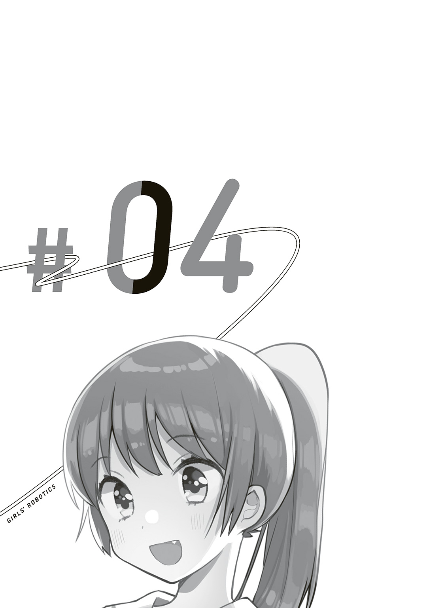
「それじゃあもう一度数値を変えて試してみようか」
僕の言葉にうなずく珊瑚。彼女の十本の指が、パソコンのキーボードの上で踊る。
彼女がいまやっているのはロボットの腕部分、薄い金属の板を組み合わせた骨組みに小型モーターを取りつけ、作動させる工程だ。
肩に二つと肘に一つ、合わせて三つのモーターが、それぞれ電気信号を受け取って動きだす。
人間は腕を動かすとき一つ一つの関節を意識して個別に順番に動かしたりなんかしない。それと同じように、あらかじめこのボタンを押せばこの行動をするというのを設定しておかなければならない。これはそのためにそれぞれのモーターの回転角度をいくつに設定すればいいか、関節の動きを細かく確認するための作業である。
本番では無線コントローラーを使っての制御になるが、いまはパソコンからそれを行っているところだ。
ロボットの腕だけがうねうねと芋虫のように動くのは少し気味の悪い光景と言えなくもない。珊瑚はその芋虫を興味深そうに、じーっと観察していて、相変わらずなにを考えているのかいまいちわかりにくい。
紫呉と久穏は隣の倉庫で予備のハンダを探しており、現在部室には僕と珊瑚の二人だけである。
しかし、普通に二人で作業をしているわけではない。
まず僕が椅子に座り、僕の膝の上に珊瑚が乗っかっている。
なぜこんなことをしているかと言うと、座高の低い珊瑚では普通にイスに座っていても机が高すぎて作業しづらそうにしていたからだ。
以前からそのことに気がついていた僕が、冗談のつもりで「よかったら僕の膝に乗りなよ」と言うと珊瑚は少し考えるそぶりを見せたあと、ちょっと恥ずかしそうな表情で僕の膝の上に乗ってきたのだった。
まさか本当に乗ってくるとは。
もしかしたら、この子には言葉のコミュニケーションよりもスキンシップのほうが有効なのかもしれない。
そんなわけで僕は、子供同然の重みとすももみたいにちっちゃいお尻の柔らかな感触に癒されながら、珊瑚の頭越しに文字列が書き込まれていくパソコンの画面を眺めている。
十六歳の可愛らしい女の子を膝の上に乗せているというのに不思議と邪な気持ちはなく、縁側で子猫を撫でながら過ごす吞気な昼下がりのような、驚くほど穏やかな心持ちである。一呼吸ごとに心と体が洗われる感覚。
できることなら、この子をこのまま自宅に持ち帰って抱き枕にしたい。それが叶うならば、不眠や疲労とは無縁の人生を送れることは間違いないだろう。スベスベの肌触りとモチモチした体、このプニプニのほっぺたに頰ずりしながら眠れば、最高に幸せな夢を見られそうだ。
なんてことを考えていると、珊瑚が画面をきり替えてメモ帳に文字を打ち込んだ。
『できました』
「どれどれ......うん、大丈夫。コンパイルも成功してるし、問題ないよ。お疲れさま」
『ファイルはどこに保存しておきますか？』
「いつもの場所と、それと外部にバックアップしておいて......あ、いや、そこじゃなくてこっちのほうのＵＳＢに」
珊瑚の手に重ねるようしてマウスを操作する。
すると、珊瑚がクスクスと小さく息を漏らした。
「どうしたの？」
『なんでもないです。ただ、なんだか懐かしくて』
「懐かしい？」
『ウチが子供のときに、こんなふうに親戚のお姉さんのお膝の上に乗って、ピアノを教わったことがあって。そのときのことを思い出しちゃいました。そのお姉さんもウチの手を取って、次の音はここだよって教えてくれたんです』
「そのお姉さんのこと好きだったんだ？」
『はい。美人で優しくて、ちょっとだけイタズラ好きな、素敵な人です』
そう打ち込んで、珊瑚は肩の力を抜いてそっと僕の体に軽くもたれかかった。最初は戸惑っていたけれど、案外気に入ってくれたようだ。
「珊瑚、いくつか質問してもいいかな？」
『なんですか？』
僕の問いに対してパソコン画面へのタイピングで答える。
「いや、まぁ二人きりで話すことっていままでなかったなと思ってさ」
思えば珊瑚と二人きりになるのはこれが初めてのことだった。
「珊瑚はどうしてロボ部に入ったの？ もしかして、実は前々からロボット作りに興味があったとか？」
ふるふる、と頭を振る珊瑚。
「じゃあなんで久穏と一緒にロボット部の活動を再開させようと思ったの？」
迷うように視線をさまよわせる。珊瑚の細い指が、またキーボードの上を走る。
『一年生の初めは他の文化系の部にいたんですけど、すぐに辞めちゃいました。ウチはこの学校の理事長の孫で、それにお喋りも苦手だから、周りの人に気を遣わせてしまって。それがすごく申し訳なかったんです。だから、活動していないロボット部に籍だけ置いていたんです』
その言い分は理解できる。僕がもし珊瑚が理事長の孫と知っていたら、会った瞬間に珍獣よろしく捕獲なんかしなかっただろうし。
『でも、それを口実にウチはただ人を遠ざけていただけなんだと思います。そんなウチに話しかけ続けてくれたのが、しぐちゃんだったんです。話すのが苦手なウチに辛抱強くつき合ってくれて。ウチの人見知り、これでも少しは良くなったんです。しぐちゃんのおかげで』
「おせっかいっぽいもんね、紫呉」
『はい。お話するのは苦手でも、独りでいるのはやっぱり少し寂しかったですから。ウチはいまでもしぐちゃんに感謝してます』
感謝している、か。
引っ込み思案な珊瑚と、世話焼きな紫呉は相性が良かったのだろう。
二人の関係性はわかった。しかし、それがロボットを作ろうと思った動機とどう繫がるのだろうか。
『ウチがロボットを作ろうと思ったのは、しぐちゃんと一緒になにかをやりたかったからです』
「紫呉と？」
『バスケ部を辞めてから、しぐちゃんずっと苦しそう』
「バスケ......」
笹木先生も紫呉がスポーツ推薦で入学したと言っていたし、紫呉はもともとバスケ部だったのか。
『しぐちゃん、頑張り屋さんだから。頑張り屋さんなのに、頑張れることがなくなっちゃって、どうすればいいのかわからないんだと思います』
「頑張れることがなくなったって、どうして？」
『詳しくは教えてくれなかったけど、怪我のせいでバスケできなくなっちゃったって』
「怪我......」
体の故障が原因でバスケを辞めざるを得なかったのか。それでしかたなく事実上の帰宅部であるロボ部に入ることになった、と。暴力事件を起こしたという話だったが、それとは関係あるのだろうか。
『しぐちゃんはすごく練習熱心で、部活以外でも毎日自主練習してたんです。物の大きさや距離を言い当てられるようになったのも、シュートの精度を上げるために普段からそういうことを意識するようにしたからって言ってました。でも、バスケを辞めてから、笑うことがだんだん少なくなって、黒くて綺麗だった髪も染めちゃって。ウチの前では気丈に振る舞ってるけど、無理してるように見えてウチずっと心配してて、友達なのになにもしてあげられないのがずっと歯がゆくて。自覚はなかったですけど、しぐちゃんもウチも、きっと新しいなにかを始めたいと思っていたんです。バスケはダメだったけど、なにか他に一生懸命になれるものを作ってあげられないかなって。そう思ってたところに、久穏さんが現れたんです』
「そうだったんだ......。そのこと、紫呉には？」
『言ってません。言ったらきっと、あたしにそんな気を遣うな！ って怒られちゃいます』
口元をかすかに歪め、珊瑚は薄く笑う。
正直、意外だった。珊瑚がロボット作りをしようと思った理由。バスケを辞めて落ち込んでいる紫呉と一緒に新しいなにかに挑戦することで、彼女の苦しみが少しでも楽になればいいと慮ってのことだったのか。
『ロボットを作り始めて、しぐちゃんはちょっと元気になりました。ウチも最初はしぐちゃんのために頑張らなきゃって思ってたけど、いまはみんなと一緒になにかを作るのが楽しいです』
「それならよかった」
『全部久穏さんと悠さんのおかげ』
僕は、薬萊珊瑚という人物を誤解していたのかもしれない。
人前で喋ることさえ気後れしてしまうような、紫呉の後ろに隠れて甘えている気弱な女の子だと思っていたけれど、そんなことはなかった。
珊瑚は紫呉の理解者であり、陰ながら紫呉を支えてやっているのだ。気弱でもの静かであっても、心優しい女の子なんだ。
初めて珊瑚と会ったあのとき、珊瑚は「よろしく、お願いします」としっかり自分の声で自らの意思を伝えてくれた。
友達のために踏み出せる子なんだ。
『しぐちゃんは素直じゃないときもあるけど、とってもいい子なんです。しぐちゃんと仲よくしてあげてください』
「もちろん。でも僕は、紫呉だけじゃなくて珊瑚や久穏とも、もっと仲よくなりたいと思ってるよ。いまの話を聞いて、ますます珊瑚のこと好きになっちゃったし」
「はぅ......」
照れたのか、珊瑚の口から小動物が鳴くような吐息が漏れる。
「できればパソコンを使わずにキミの声が聞けると嬉しいんだけどね。珊瑚の声、すごく可愛いから。......くすぐって無理矢理笑わせてみようかな。ちょうど僕ら以外にだれもいないしね。ぐふふふふ......」
「ひうぅ......」
僕が両手をワキワキさせると、ビクッと身をすくませる珊瑚。
「冗談だって」
『今日の悠さんは意地悪さんです』
気を悪くしたのか、拗ねたように珊瑚がほっぺたを餅みたいにぷっくりと膨らませる。
なんとなくその柔らかそうな頰を指で突っつくと、珊瑚はおかしそうに薄く笑った。
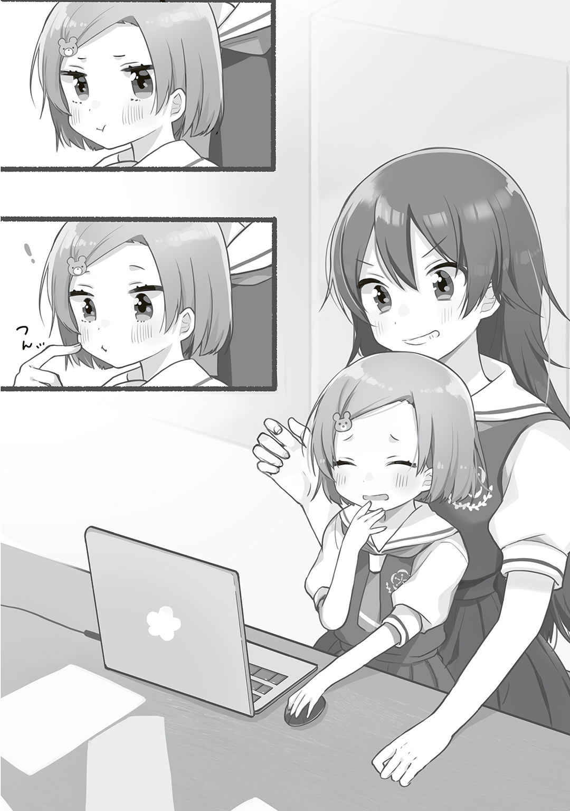
『悠さんに一つお願いがあるんです』
なにやら再びパソコンに文字を打ち込んでいく。珊瑚のお願いとあれば全身全霊をかけて叶えざるを得ない。
しかしそのお願いは、なんとも意外なものだった。
『しぐちゃんのために作りたいものがあるんです。それを手伝ってください』
◇
もしロボット作りで一番大変なことはなにかと訊かれたら、僕は「パーツ作り」と答えるだろう。
ロボットを構築するのに必須なパーツ類。既製品があれば買ってしまえばそれでいいのだが、市場に流通しないものや、専用品のものとなると非常に面倒くさい。
オリジナルのロボットを作ろうとすると、既存のパーツでは代替が利かないオリジナルのものが必要になってくるのだ。
つまり、自作するしかない。
とくに厚みのあるプラスチックや金属製のパーツの切り出しや加工となると、何千万から何億もする額の大型の加工機械が必要になってくる。そんな設備がこのお嬢さま学校にあるわけもない。
旋盤、フライス盤、ウォータージェット、レーザー加工機、電ノコあたりがあるとだいぶ楽になるんだろうけど、贅沢は言っていられない。
骨組みはプレートの組み合わせでどうにかなったが、問題は外皮となる部分。
久穏の案を採用する以上、ロボットの装甲となる部品を作らなければならないのだが、先述の理由からパーツを簡単に自作することもできないし。
「樹脂加工なら専門機械がなくてもパーツの作成が可能かもしれないけど、型を作ってる時間なんてないし......さて、どうしたものか......」
設計図とメモ帳を交互に見ながら、僕は大きく息を吐いた。
黒松谷男子の加工実習室にならいろいろと設備が揃ってるんだけどなぁ。最悪の場合僕がそこでパーツを加工すればいいんだけど。笹木先生に相談してみんなが使わせてもらえるようにしてもらうか？ しかしそうなると僕と黒松谷の関係を疑われて話がややこしくなりそうだ。じゃあ逆にみんなに男装させて黒松谷に潜入させてみるか？ いやいや、アホか。そっちのほうがややこしいことになるわ。
よいアイデアが浮かばなくて後回しにしてしまっていたけれど、これ以上引き延ばすと大会に間に合わなくなってしまう。
ううむ、困った。
「まだ帰んないのー？」
「あぁ、ごめん。今日はここまでにしよっか」
真夏という季節柄、あたりは明るいが、紫呉の指摘を受けて時計を確認するともう陽も落ちはじめる時間となっていた。なんだか最近時間が経つのがすごく速く感じる。
「なに悩んでたのよ？」
「うん、フレームだけだと強度不足な感じだから、外装はどうやって作ろうか考えててね。いまのままだとフレームがポッキリ折れちゃうかもしれないんだよね。配線が剝き出しなのも危ないし、どっかに引っかけて断線する可能性もある。試合中にそんなことになったら即リタイヤだから、それも踏まえたうえで外装の安全率の計算もしないといけないし」
「安全率？」
紫呉が首をかしげながら、僕の手元のメモ帳を覗き込んできた。そこにはいくつかの計算式が乱雑に書きなぐられている。まぁ書いたのは僕なんだけど。
「物質の強度や厚みから、加わる外力に対してどのくらい耐久できるかっていう計算式があるんだけど、このとき出てきた数字が１以上ないと壊れちゃう可能性が――」
「........................」
「白目剝いて気絶するな！ なんでキミはちょっと難しい単語が出ただけですぐ壊れるんだよ！」
魂がどこかに飛びかけてしまった紫呉の頰を叩いて正気に戻す。
「ぐうぅ、脳みそに数式が浸食してきた......頭痛が痛くてヘッドエイクよ......」
「なに言ってんのかわかんないけど帰るんでしょ、ほら歩いて歩いて」
無駄に大袈裟なリアクションをとる紫呉の背中を押して部室を出て、肩を並べて帰途につく。
「んー、やっぱあたし、ああいう小難しい計算とかダメダメだなぁ」
歩きながらあっけらかんとした顔でそんなことを言う紫呉である。
「面倒なのはわかるけど、ロボットを作るのに必要な知識だから身につけないと」
「そういう細かいのは珊瑚ちゃんにまかせる」
「他人まかせだなぁ」
久穏は寮の掃除当番、珊瑚は家の用事があるとのことで二人は一足先に上がっていて、今日の帰り道は紫呉と二人だけ。
「珊瑚から少しだけ聞いたんだけど、紫呉はバスケ部にいたんだよね？」
「......そうだけど、それがどうしたの。関係ないじゃん」
そっけない態度。平静を装ってはいるが、明らかに触れてほしくなさそうな空気を出している。珊瑚にすら詳しく話したがらないようなことを、僕なんかが根掘り葉掘り訊いても教えてくれるわけがないか。
「そういう悠ちゃんは前の学校でもロボット部だったんだよね？」
「え？ あ、うん。そうだね......」
いろいろとボロが出てしまいそうで、できれば過去の話はあまりしたくない。かといって露骨に話題を逸らすのもそれはそれで怪しい気がするな。
「......あっ」
不意に、紫呉の足が止まる。
歩みを止めた紫呉が視線の先は、なんの変哲もないゴミの集積場。明日にでも収集があるのだろう、数十個のゴミ袋が積まれている。
どうしたのかと様子を見ていると、紫呉はなにを思ったのか、そのゴミ袋の山に頭から突っ込んだ。
「ちょ、なにやってんの！ 制服汚れるよ」
夏の暑さについに頭が飛んでしまったのか。
僕の制止も聞かず、さらにゴミ山に潜ろうとする紫呉。もう上半身が完全に埋まってしまっている。
仮にもお嬢様学校である桜樹女子の生徒がこんなことをして大丈夫なのかなんてことを思いながらも、突き出たお尻についつい視線を吸い寄せられる僕である。スポーツをやっていただけあって引き締まっている。ちょっとぐらいなら触っても......って、いかんいかん。僕は彼女たちと誠実につき合っていくと決めたんだ。そんなこと許されるわけがない。
「ひっはっへ！」
ゴミの中から籠った声が返ってきた。「引っ張って」って言ったのかな。紫呉の腰を摑んで体を引きずり出す。
這い出てきた紫呉が腕に抱いていたのは、二頭身に可愛くデフォルメされたライオンのぬいぐるみ。薄汚れてかなりくたびれた印象を受ける。片方の足を失って、その切断面から綿が飛び出してしまっていた。
ゴミ置き場にあったということは、当然捨てられたものだろう。
しかし、わざわざそんなものを拾ってどうするつもりなのだろうか。
「痛ッ......」
紫呉が顔を歪めた。彼女の視線を追って下を見ると、紫呉のふくらはぎに一条の切傷ができて、そこから血がにじみ出ていた。ゴミ山の中になにか尖ったものでも混じっていたのだろう。
「あぁ！ 脚が！ 紫呉の貴重な脚が！ 大丈夫？ クソッ、僕がもっと注意していれば......」
「そんな慌てなくても、ちょっと切れただけじゃん。すぐ治るって」
「脚に傷痕が残ったらたいへんじゃないか！ せっかくキレイな脚を持って生まれてきたんだからもっと自分の体を大事にしろよ！ もったいないだろう！」
「大袈裟なうえに気色悪い！ ったく、こんな役立たずの脚のどこがいいんだか......」
大袈裟なもんか。僕は彼女の健康的でほどよく筋肉がついたハリツヤのある脚を、高く評価している。まるで買ったばかりの高級車に傷をつけられたような気分だ。これが慌てずにいられるか。
「とりあえず、すぐそこの公園のベンチまで運ぶよ」
紫呉の背中と膝の裏に手を回し、抱き上げる。俗に言う、お姫様抱っこである。
「えっ、ちょ、ウソ、待っ――！」
慌てたように腕を突っ張って拒もうとする紫呉。
「降ろしてよ。あたし、重いっしょ」
「別に。女の子だし」
「で、でも恥ずかしいよ。あたし、ノッポだし、ガサツで全然女の子らしくないし......」
「そんなことない」
僕がそう断言すると、紫呉は驚いたように僕の顔を見た。
「僕から見れば、紫呉は見た目も中身も十分魅力的な女の子だよ。ぬいぐるみが好きで、甘いものが好きで、面倒見がよくて、ちょっとだけぶっきらぼうな普通の女の子だ。紫呉の女の子らしいところ、僕はたくさん知ってるよ」
「ナチュラルに口説き文句並べないで！ なんなのよ、もー！」
耳まで真っ赤にしながら僕の胸をポカポカと叩く。詰め物じゃないところを狙ってくるから、ちょっと痛い。
「うぅぅ......、ホントに重くない？」
「バイクの引き起こしに比べたら紫呉の体重なんて軽い軽い。こういうのは力の使い方なんだよ。荷重を腰じゃなくて膝にかけるように意識して、腕力だけに頼らず腹筋や背筋を使うようにすれば、一つの筋肉に負担が集中しなくて楽になるんだ。ロボットも一緒で、一つのモーターのトルクじゃ持ち上がらない荷重も、複数のモーターを協調させれば上がるようになるからね。物理の片持ち荷重の公式を頭の中にイメージすれば、なんか気分的に楽しくなってくるし――」
「抱っこ一つで理屈がくどい！」
僕の腕に抱かれながら、紫呉がつっこみを入れた。
紫呉を抱えたまま公園まで移動。ベンチに紫呉を座らせて、笹木先生に持たされた女物のハンカチを水道で濡らしてから、血と傷口を丁寧に拭ってやる。重要文化財の修復をするみたいに慎重に。
「迷惑かけてごめんね。それと、その......ありがと。女の子らしいって言ってくれて。なんか、嬉しかった......ちょっとだけ」
照れ臭そうな表情を浮かべながら、素直に手当てを受ける紫呉。いつも元気を持て余しているような彼女でも、こんなふうにしおらしい態度をすることもあるんだな。普段面倒見のいい彼女だからこそ、だれかに世話を焼かれたり介抱されたりするのを嬉しく感じるのかもしれない。
「この際だから白状しちゃうけど、だれかにあんなふうに抱っこされるのマンガとかで見て密かに憧れてたんだよね。だけどあたし背高いし男嫌いだし、そんなことしてくれる人なんていないって思ってた。だから、怪我の功名っていうの？ いまちょっとだけ得した気分。えへへ」
ロボ部の三人の中で中身が一番乙女なのは、実はこの子なんだよな。珊瑚の言うとおり、人前では気丈に振る舞っていても、中身はお姫様に憧れる女の子だ。
「抱っこ一つで喜んでもらえるならいつでもするよ、僕でよければ」
「遠慮しとく。ありがたみがなくなっちゃいそうだし。悠ちゃんが男だったらもっとよかったのになー」
「............」
「どうしたの？」
「な、なんでもないよ」
何げない言葉に一瞬ドキリとさせられた。僕が男だと知ったうえで、僕をからかうために言ってるんじゃないかと勘ぐってしまった。後ろめたいことがあるとついつい疑心暗鬼になってしまいがちだ。
「まぁ珊瑚よりは重かったけどね」
「一言よけいッ！」
傷ついたほうの脚を振り上げて僕を追っ払う。それだけ動かせるならもう大丈夫そうだ。
紫呉の隣に腰かけて、彼女の腕に抱かれたぬいぐるみを改めて見る。
「持って帰るの、それ？」
「あったりまえじゃん。だってこの子、ちょっと破けちゃっただけじゃん。それなのにこんなふうにあっさり捨てられるなんて可哀想すぎるよ」
拾ったぬいぐるみを守るようにぎゅっと胸に抱きしめる紫呉。
「......自分の都合のいいように使って、要らなくなったらあっさり捨ててもう見向きもしないなんて。だれかに必要とされてたはずなのに捨てられて、それじゃまるで......」
その言葉は、いったいどういう意味なのだろう。
紫呉が可愛いものが好きなのは知っていたし、ぬいぐるみが可哀想だというのもわからなくもない。
だけど、なんでこの薄汚れたぬいぐるみに固執するのか。
「あたし、こう見えてもお裁縫できちゃうからね。多少のものなら直せちゃうよ。この子みたいに足がなくなっちゃった子なんかは、その部分だけ他の生地使わなきゃだから、チグハグな感じになっちゃうけどね。あとはどうしても直せなかった子の布をもらってきて再利用したりとかね」
「そうなんだ」
......って、ちょっと待てよ？ いまなにかいいことを聞いた気がするぞ。
頭の中でパズルのピースがはまるような感覚がした。
「その手があったか......」
いや、むしろ単純すぎて見落としていた。というか、このくらいのこと僕も子供のころしょっちゅうやっていたじゃないか。
「紫呉、僕を初心にかえらせてくれてありがとう」
「えっ、なに急に気持ち悪いんですけど」
◇
僕がたどり着いた答え。
古いぬいぐるみの布を再利用するという紫呉の言葉を聞いてひらめいたのは、至極単純な発想。パーツを作ることができないなら、リサイクルすればいい。
僕が小学生の時に作って自宅の倉庫の奥深くに放置されていたプラモデルたちを分解し、ロボットの外装に流用できそうなものをヤスリで削ってスプレーで着色。そしてロボットの装甲として装着する。
本当は樹脂加工を初歩から教えて全部手作りの外装をこしらえるのが理想だったけど、そこは時間の都合上今回は我慢するとしよう。
「で、できましたー！ やりましたー！」
ゴミ漁りをした日から二日。大会を明日に控えたその日のこと。
二本の足で机の上に直立する銀色のロボットを目の当たりにして、久穏が喜びの声をあげた。
ガンダムやらゾイドやらミニ四駆やらのパーツがごっちゃになったロボット。悪く言えば寄せ集め、しかしこれもある意味合体ロボと言えるかもしれない。久穏と初めて出会ったとき落下して壊れたプラモデルの部品も、もちろん再利用させてもらった。
既製品を流用したおかげでパーツの質はよく、再塗装を施した見た目のバランスも存外悪くない。いや、むしろコンパクトにまとまっていてデザインとしてとても自然な印象を受ける。この辺は外装パーツの配置を任された久穏のセンスがよかったのだろう。
頭部パーツもプラモデルからの流用だが、久穏の手によって整形手術を施され、よりスマートな顔つきになっている。
僕たちが作りあげた、正義のロボット。全高二十四センチの小さな巨人。
そして一番のこだわりポイント、左腕の肘から先に装着され銀色の光を放つそれは、超強力なトルクで高速回転するドリル。
ロボットはドリルを使うために存在し、ドリルはロボットに使われるために存在していると言われても納得してしまうほどの説得力と存在感。
僕たちが採用したのはステップドリルと呼ばれるタケノコに似た形状のドリルを基に、竜巻状の螺旋を幾筋か掘り込み、さらには角のような複数の突起を施して、見た目のインパクトを重視したドリルだ。
まぁドリルと言っても、大会の規約で破壊を目的とした武器の類が禁止されているので、言うなれば鑑賞用の『見せドリル』であるが、それゆえに純粋に美しい造形を追求することができた。銀色の塗料を塗ってそれっぽく見せているだけなのだけど、パッと見だけなら十分すぎるほどに立派で勇ましい戦闘ロボだ。
「はぁぁ～、ドリル、ほれぼれしますねー」
「このまさしくドリルって感じのフォルム、あぁ最高だ......。そしてそのドリルを動かすオーロラ社製トルクチューンモーターＤＭ‐５５３。高速度とハイパワーを高い数値で両立させたＤＣモーター。最大出力で秒間約二百回転。一見無駄にも思えるほどのすさまじいパワーと、空気を巻き込むような回転速度。こいつが始動して徐々に速度を上げるときに出すモーター音が、これがまた僕好みの唸り声なんだよなぁ。時間をかけて少しずつ音が高くなっていく感じがたまらん」
「わかります。これはもう一種のオーケストラです。私、この音を着メロにしたいくらいです」
「ぶっ飛びすぎてて私はもうあんたらの感性にはついていけないわ......」
高性能なモーターである反面、バッテリーの電力を馬鹿食いするので、乱用すればこのロボットはものの二、三分で歩くことすらできなくなってしまう。しかし、その極端すぎる欠点すら、ドリルが必殺の最終兵器であるがゆえの代償と考えれば些細な問題だろう。
うーん、渋い。激渋である。
やっぱりドリルはよい。とてもよい。理屈も問答も超越した神秘性と、不思議と胸の奥底に眠る野性が呼び起こされるような力強さがある。
本当に素晴らしいものというのは言葉で表現することができないのかもしれない。
「これがいまから動くんですか？」
『すごくカッコイイと思います』
「まさかあの絵からこんなのができあがるなんて思ってなかったわ、あたし」
三人は美術品をじっくりと鑑賞するみたいに、ロボットを囲んでいろんな角度から物色する。
スケッチブックに描いた空想の産物が、いま目の前に実在しているという感動を味わっているのだろう。
料理ならレシピがあれば作れる。プラモデルならパーツがあれば作れる。
でも、本当になにもないところから自分たちの手とアイデアだけで作りあげた作品というのは、それだけでどんなものよりも特別だ。
世界に一体だけの、自分たちのロボット。
『久穏さん、名前は決まりましたか？』
「せっかくだしカッコイイ感じの名前つけてあげてよ」
久穏の創案でロボットを作ることが決まったとき、名前も久穏がつけるということで僕らの意見が一致していた。
名前をつけるということは大切なことだ。そのほうがわかりやすいし、愛着も湧くだろう。そうすれば作業がより丁寧になる。
「いろいろ考えたんですけど、アルジャンにします。フランス語で銀色です。この子、とってもキレイな銀色ですから」
「アルジャン、か。それじゃあ略してアルだね」
『よい名前だと思います』
みんな相当このロボットが気に入ったのだろう。彼女たちの嬉しそうな顔を見ていると、苦労した甲斐があったと報われた気持ちになる。
『大会に間に合ってよかったね』
「はぁあぁ～。やっと完成したぁ......」
「私、感無量です」
「いや、まだだって。これから動作チェックするんだから」
紫呉はもう精も根も尽きたというふうに机に突っ伏して脱力しているけれど、本当に大変なのはこれからなのだ。
ロボットの完成度を高めるために一番大事な工程は、組み上がった後の調整だ。
肉体・脳・魂。それぞれの出来がたとえ完璧であっても、それらが合わさったとき必ず想定していなかった問題が浮き彫りになってくる。それらの原因究明と対応には相当の時間と労力がかかる。
ひたすら欠陥を探し、ひたすら直し続ける。一言で言うとデバッグ作業だ。
一番地道だけど、一番大事な作業。
今日一日でどれだけバグを見つけて修正できるかによって、明日の本番での結果が大きく左右されるのだ。
「じゃあさっそく歩かせてみようか」
珊瑚の作成したプログラムもインプットずみ。プレイステーションのコントローラーに類似した無線のコントローラーからの指令を受け取って動きだす準備は整っている。
「で、だれが操縦する？」
「そんなの決まってんじゃん」
僕の問いかけに対して紫呉がすぐさま答えを返す。
「私たちの大将っていえば、やっぱり久穏ちゃんだもんね。久穏ちゃんが動かすのが一番だと思う」
「わ、私？ いいんですか？」
『ウチも賛成です』
紫呉と珊瑚に促されてコントローラーを握った久穏は、誕生日プレゼントの入った箱を手渡された子供のような笑みを浮かべていた。
「いざ発進でーす！ れっつごー！」
アルジャンが、久穏の号令とともに記念すべき第一歩を踏み出す......が、
こてん。
あぁ、とだれかの口から落胆の声が漏れた。
しかし最初はこんなものだ。ここから調整を重ねて歩けるようにしていけばいい。
「一歩目から転んでんじゃん、しっかりしなさいよ」
うつ伏せに倒れてもまだ足を交互に動かし続けるアルジャンを、紫呉が抱き起こす。
「あの悠さん、私、もうコントローラー触ってません。でもアルの足が動き続けて......」
「ほんとだ。おかしいな」
現実はこんなものだ。最初からそううまくはいかない。ここから調整に調整を重ねて理想通りに仕上げていくのがデバッグ作業なんだから。
「珊瑚、プログラムの足を動かす命令が、while 文で無限ループになってないか確認してみて」
while 文は『繰り返し』を意味する命令文で、連続して指令を出すときに用いられるものだが、その終わりが定義されていないと、ループから抜け出せずに永遠にその動作を繰り返し続ける。プログラムを作るうえでよくあるミスだ。
『こっちは問題ありません』
「となると回路の不調かな。導線の繫ぎ方を間違ってるか、どこかでハンダが変なところで跨いじゃってるのかも......」
「あの、なにか臭いがしませんか？ なにか焦げてるような感じです......」
「なんだって!?」
焦げた臭いってまさか......！
久穏の言葉を受けて、僕は慌ててアルの背面のハッチを開け、電源スイッチを切った。
プラスチックの焼ける臭いが部室に広がる。嫌な予感は的中していた。
プリント基板の一部が焦げて黒く変色し、そこから煙が上がっていた。
やはり配線がどこかで混線してしまっていたらしい。ショートして過剰な電気が流れて基盤が焼けてしまったのだ。
「わわっ、コゲコゲだ。すごい臭い」
「体に悪いからあんま嗅がないほうがいいよ」
珊瑚が窓とドアを開けて換気をしてくれているのを横目に見ながら、僕はアルから回路を取り外して状態を確認する。
「基板の部分はもうダメだね......」
『これ、もう使えないんですか？』
「残念だけど」
「そんな！ じゃ、じゃあ明日の大会は......？」
基板がこれでは、ロボットは動かない。基板の予備もないし、なにかで代用することもできない。
明日までに基盤を作り直すとしても時間的に間に合うかどうか怪しい。たとえ間に合ったとしてもデバッグ作業が必要で、それが不十分な状態で出場したらまともに動いてくれるかどうか......。
「わ、私のせい、です......」
顔面蒼白になりながら、震える声で久穏が言う。
完成した回路を紫呉から受け取って、最後に電源と回路を配線で繫いで組み立てたのは、他ならぬ彼女だった。
単純なミスが、こんな大事になるなんて夢にも思わず、責任を重く感じているのだろう。かなりショックを受けている様子だった。
「ううん、チェックしたのに見逃した僕の責任だよ。それに、久穏が臭いに気づかなかったらもっと大変なことになってたよ。電源が入ったままだったらアルが火だるまになってたかもしれない。教えてくれてありがとう」
「でも、私......みんなに迷惑かけてしまいました」
「だ、大丈夫だって久穏ちゃん、私らは気にしてないよ」
僕と紫呉がフォローするも、心ここにあらずの久穏。
大会を直前にしての故障。そしてロボの完成形を見たあとの失敗である分、その落差に気持ちがついていかないのかもしれない。
紫呉や珊瑚も気丈に振る舞ってはいるが、表情からは隠しきれない不安が滲み出ている。
せっかくここまでこぎ着けたのに、こんな呆気ない終わり方をしてしまうなんて......。
きっと全員の頭の中に『棄権』の文字が浮かんでいるだろう。僕もそうだ。
痛々しい沈黙が流れる。だれもなにも言おうとしない。口にしたくないのだ。その残酷な結末を。
それでも、だれかが言わなければならない。
「......ダメだった。やっぱり素人が――女の子がいきなりロボット作りなんて、そんなの最初から無茶だった。たかだか二週間ぐらいでロボットを作って、それであの海原に勝つ？ アホらしい。無理に決まってる。むしろ大会で大勢の前で恥をさらさなくてよかったんじゃないか。毎日毎日、暑っ苦しい部室に集まって、機械を弄って、時間を浪費して、本当に下らない。僕たちの努力は、全部無駄だった――」
だから、言わなければならない。
彼女たちの心の火が消える前に。
「――そう思いたくなんてないだろう」
彼女たちが再び立ち上がるための言葉を。
「ロボット作りに失敗はつきものだよ。ここからあがいて死ぬ気で喰らいついていくのが本物のエンジニアだ。大会の開始時間まで、まだ半日以上残ってる。その時間をどう使うかは、キミたち次第だ」
パンッと、乾いた音が響きわたる。
見れば、自分の頰を思いっきり叩いたのだろう、久穏の両頰が赤くなっていた。
「やらせてください」
熱のこもった久穏の声。
彼女の顔からすでに不安や焦りは消えていた。戦いに挑むような気迫。久穏の真っ直ぐで真剣な眼差しに、僕は惹きつけられた。
「私たちは二週間ずっと頑張ってきました。簡単にあきらめるなんてできません。私、もう一度回路作ります。絶対明日まで間に合わせます」
さっきまで意気消沈していた久穏の目に、光が宿っていた。彼女はいま、真剣にロボットと向き合おうとしている。
僕はそのことがたまらなく嬉しくて胸が熱くなった。
「紫呉さんの作ってくれた回路、私のせいで壊れてしまいました。でも、だからこそ私のせいでお終いになんかしたくありません。お二人はどうですか？」
「......うん。そうだよね。やるだけやらなきゃ。あたしもやる」
『ウチも、まだあきらめたくない』
久穏の言葉に、沈痛なおももちでうつむいていた二人が顔を上げる。彼女たちも、まだあきらめていなかった。
そうだ。
せっかくここまでやってきたんじゃないか。たとえ結果がどうであれ、最後まであがいてやろう。
「当然悠ちゃんもだからね。助っ人なんだからこういうときにこそ役立ちなさいよ」
「言われなくても僕も手伝うよ。やれるだけやってみよう。基板だけだからそんな大きなダメージじゃないよ。二回目は慣れてる分、きっと早く作れると思うしね。さっそく作業を始めよう」
「はい！ 私、材料とってきます！」
僕の言葉を受けて、久穏は倉庫へと足早に姿を消した。
「紫呉、珊瑚、部室棟の閉まるのっていつ？」
『とくに決められてなかったと思います』
「夏休みの間は部活の合宿とかで部室に泊まっていく子も多いしね。......あたしも去年はそうだったから」
「じゃあ久穏と僕は徹夜で基板を直すから、明日に備えて紫呉と珊瑚は今日はもう帰って休んでくれても――」
「却下。久穏ちゃんと悠ちゃんが頑張ってんのに、自分らだけ帰って寝るとかできるわけないでしょーが普通に考えて。たとえやることなくてもあたしらもつき合うわよ。チームなんだから」
『しぐちゃんの言う通りです』
チームを重んじるあたりさすが元体育会系といったところか、断固として譲らない姿勢の紫呉とそれに同調する珊瑚。
結成してわずか二週間たらずのチームだけど、しっかりとした繫がりが生まれつつあるのを感じて、僕はなんだか無性に嬉しかった。
「んじゃ、あたしと珊瑚は買い出し係ね。コンビニに行ってなにか買ってこよっか。あ、ついでにお菓子とかも買っちゃお」
『ウチ、アイスも欲しい。いちご味の。学校にお泊りするの初めてです。楽しみ』
いや、やっぱ単純にみんなで夜更かしするのが楽しみなだけなのかもしれない。大丈夫なのか、こんなんで。
◇
とはいえ、花の女子高生が外泊となると家族は心配するだろう。とくに珊瑚は理事長の孫でお嬢さまの身なのだ。実家からストップがかかると予想していたのだが、泊まるのが学校ということで普段は厳しく外泊など許さない珊瑚のご両親からもお許しが出たらしい。
紫呉の家は放任主義とのことで、問題なし。
久穏も寮に外泊届けを提出し、僕も笹木先生にメールで一報を入れ、晴れてロボット部は初の深夜活動へと突入した。
紫呉と珊瑚が買ってきてくれた弁当やオニギリで夕食をすませ、ポテチやらマシュマロやらといった嗜好品をつまみながらの夜を徹しての作業である。
いまのところ作業は順調だが、間に合うかどうかはまだわからない。
僕も去年は文化祭や大会の直前に徹夜して、明け方ギリギリに作品を完成させたんだっけ。あれからまだ一年も経ってないのに、なんだか懐かしく感じる。
そして時計の針がすでにてっぺんを回り日付が変わったいま、僕はだれもいないシャワールームで一人お湯を浴びていた。
女子校である以上、当然男子用のシャワールームなんてない。まぁたとえあったとしてもこの恰好で入っていくこともできないけど。
僕は時間も惜しいし一日ぐらい平気だと言ったのだけれど、僕が男だと知らない紫呉と珊瑚に「そんなの女子としてあり得ない」と強く反対され、しかたなく先にシャワーを浴びたみんなとは時間をずらして他に利用者がいないであろう深夜にこうしてひっそりとシャワーを浴びているというわけである。
女子校のシャワー室に深い興味があるとか、決してそういうことではない。あくまで致し方なく、断腸の思いで、嫌々僕は女子シャワールームを使わざるを得なくなっているのである。あんまりしつこく言うと逆に怪しく思われるかもしれないけど、本当にそうなのだ。信じてほしい。
水が頰を伝って顎から滴り落ちていく感触をぼんやりと感じながら、ふと考える。
「僕、これからどうなるんだろう」
明日の大会の結果によっては、僕が今後取るべき行動は変わってくる。敗北してロボ部が廃部になれば、今度こそみんなはロボットを作ることをあきらめ、バラバラになるかもしれない。そうすれば僕のお役目もなくなり、僕は元の男としての生活に戻ることになるだろう。
でも、もし勝ったら......？
「......いや、考えてもしかたない、か」
そんなこと、いま想像したところでわかりはしない。
ともかくいまは、目前に迫った大会までにアルを直すことだけを考えなければ。さっさと体を洗って出よう。
お湯を止めようとバルブに手を伸ばしたそのとき、
ガララララ、と戸の開く音に体が硬直した。
ウソだろ！ こんな時間にだれか入ってくるなんて聞いてないぞ！
「まだ入ってるー？」
この声は紫呉か！ しかもどんどん近づいてくる！
「いやちょっ、なに入ってきてんスか紫呉さん！」
外していたカツラを反射的に被りなおし、反射的に手で股間を隠す。
「あー、いるね。なにって、汗かいたし、あたしもシャワー浴びよっかなって。シャワールームはみんなのものでしょ」
「いやいやいやいや、そういうことじゃなくて。キミもう先にシャワーすませてたやん」
動揺のあまり、思わずエセ関西弁になる僕。
「もう一回浴びたくなったの。女同士なんだからそんなに嫌がらなくてもいーじゃん。それに悠ちゃんの胸の秘密はもうバレてるんだから気にすることないって」
「いやいやいやいや。そういうことでもなくて」
胸の問題ではないのだ。女にはあってはならないものがついているのが問題なのだ。
おそらく久穏も回路作りに熱中するあまり紫呉を引き留めるのを失念してしまったのだろう。まさかこんなことになるなんて......。
隣の個室に紫呉が入る気配。
個室とは言っても半透明のガラスの薄い仕切りで区切られ、胸の位置から尻のあたりまでの長さしかないガラス戸がついているだけの空間である。プライバシーの保護なんてないに等しい。
ガラス越しのスラリとした艶めかしいシルエットが動くたび、お湯が床を叩く音が微妙に変化する。
目を凝らせば少しくらい見えるんじゃないかという邪な考えが一瞬脳裏をよぎるが、頭を振ってその考えを散らした。いまはそれどころじゃない。
一糸纏わぬ生まれたままの姿の年頃の女の子が一メートル先で無防備にシャワーを浴びている。男としての当然の本能に従いたいという欲求に、僕は必死に逆らう。
見たい！ でも見られたくない！ 僕はどうすればいいんだぁ！
「紫呉の体、きっと引き締まってキレイなんだろうな......」
「急になにを言いだすの!?」
やベっ、脳内の呟きが声に出ちゃった。
一枚の仕切りを隔てて女の子と一緒にシャワーを浴びている。
紫呉には初対面の僕の胸を揉んだ前科がある。もし、あのときのように過度なスキンシップを取ろうと僕の個室に侵入してくるようなことがあれば、一発でアウトである。
そこから先の展開は想像もしたくないが、少なくとも社会的な死が待っていることは間違いない。それは回避不能な確定的絶望。
この状況はまずい。いままでで一番まずい！
お湯を浴びているはずなのに、背筋が凍るような気がした。
紫呉がシャワーを浴びているうちにさっさと脱出してしまおうか。いや、それだと僕が着替えているタイミングで後から上がってきた紫呉が僕の裸を目撃してしまう可能性がある。短気は損気。急いてはことを仕損じる。
ではどうするか。......そうだ。僕が長風呂ならぬ長シャワーをして、彼女がシャワーも着衣も終えた後でシャワー室から出ればお互いの裸を見ずにすむ。
よし、この作戦で行こう。
彼女がこっちの個室に入ってこないことを祈りながら、適当に話を合わせて時間が過ぎるのを待つとしよう。
「あの、さ。あたしがもともとバスケ部だったのは知ってるよね」
紫呉がずっと避けていた話題を、このタイミングで彼女自身から振ってきたことに僕は驚いた。
いったいどういうつもりなのだろう。
「それは珊瑚から聞いてるよ、少しだけど。なんでロボ部に移ったの？」
「それは――」
本当に話していいのか迷っているような間が空いた。しかし意を決したように、
「剝離骨折っていうの知ってる？」
と、僕に訊ねた。
「剝離骨折？」
「......去年の冬、私はそれに罹ったの」
そうきり出して、すべてを吐き出すみたいに、ポツポツと紫呉は言葉を続ける。
「あたしの両親も学生時代にバスケをやってたらしくてね、あたしもものごころついたころからバスケ教室に通ってたんだ。中学からは学校のバスケ部に入って、中学最後の大会で準優勝したんだよ。それからしばらくして、あたしのことをスカウトしたいって人が現れて、それが桜樹女子のバスケ部の顧問の先生だったの。我が校はキミを必要としている、キミの才能をうちで使えば日本の代表選手になるのも夢じゃないって、何回もあたしのところに来て熱心に説得されて、あたし、そのとき初めてだれかに認めてもらえたような気がしてすごく嬉しかったんだ。勉強苦手だったしスポーツ推薦で高校に入れて大好きなバスケが続けられるならそれでいいっていう気持ちもあったから、あたしはその人の誘いに乗ってこの学校に入ったの」
「そうだったんだ。でも、なんで骨折なんてしたの？ その......もしかして事故とか？」
「......ううん、剝離骨折っていうのは、成長期の若者がなりやすい病気なんだってさ。骨折っていうと、骨がポッキリと真ん中から折れるイメージだけど、これは違うんだって。筋肉の力で骨が剝がれてしまった状態のことを言うの。知らない間に、あたしの膝は限界だったみたい。ある日突然膝に激痛が走って、病院に担ぎ込まれて......。原因は練習のしすぎだった。練習をサボったことなんて一度もなかったんだよ。毎朝ランニングも欠かさなかった。あたしは真剣にスポーツと向き合ってきたのに。それなのに、その努力のせいで走れなくなるなんて思ってもみなかった」
大好きなバスケのために、期待に応えるために、もっと上手くなるために、彼女は人一倍努力しただろう。
なのに、自らの努力が、自らを殺した。その事実が、いまでも彼女を苦しめ続けている。
「お医者さんは『もう激しい運動をしてはいけません』って淡白に言ってた。あのときはすごいショックでさ、金槌で頭をガーンって殴られたような気持ちだったなぁ......。小さいころからずっとバスケを続けて、この学校にもスポーツ推薦で入ったのに、もうなにもできないなんて。それじゃまるで死刑宣告じゃん。それをずいぶんと簡単に言ってくれるなって......」
泣きだしそうなのを必死にこらえているのだろう。紫呉の声は微かに震えていた。
普段は気丈に振る舞っている紫呉。情けない声と顔を晒したくないからこそ、仕切りと水音のあるこの場でこの話をしたのかもしれない。
「雑用でもいいからバスケ部に関わっていたかったんだけど、あたしがコートの隅にいるだけでみんなに気を遣わせちゃってたんだよね。腫れ物に触るみたいに、バスケ部のみんながあたしを見る目が変わった。それで顧問の先生に『キミはもうバスケができないんだから、明日から来なくていいよ』って言われちゃった。スカウトしてくれたときはあたしのことすごく必要としてくれてたのに、壊れた途端にもう要らないってあっさり捨てられちゃった。あたし、そのときカーっとなっちゃってね。その先生のこと、思いっきりぶん殴っちゃったんだ。それでバスケ部を退部するしかなくなっちゃった」
笹木先生の言っていた暴力事件とは、このことだったのか。ゴミ置き場でぬいぐるみを見つけたときの紫呉の態度もこれで納得がいく。自慢の脚を壊してしまった自分と重ねてしまったのだろう。
「この学校はなにかしら部活に入らなくちゃいけないんだけど、なんにもやる気がなくなって、とりあえず珊瑚ちゃんのいたロボ部に入ったんだ。なにもしなくていいならそれでもいいかーって腐っちゃったわけ。そこに今年の春になって久穏ちゃんが入ってきて、一緒にロボット作りましょうって、すごい熱心に誘われたんだけど、最初はそんなことしないって断った。あたし、いつのまにか怖くなっちゃってたんだ。なにかに打ち込んで必死になっても、またそれに裏切られるのが。......喪失感っていうのかな。全部無駄になっちゃうのがすごく怖くて、なにか新しいことを始めること自体が、すごい嫌になっちゃった。珊瑚ちゃんがロボット作りを始めたのも、そんなあたしを見兼ねたからだろうし」
「気づいてたの？」
「薄々ね、あの子がロボットなんかに興味あるわけないもん。だけどね、いまは違う」
紫呉の声の震えはもう止まっていた。
なにかを吹っきったような力強さを、いまは感じ取ることができた。
「もうあたしは逃げたりなんかしない。たかが素人高校生の手作りロボットだけどさ、あの子にとってはきっと大事な夢なんだよ。自分の夢を叶えられなかった分、友達の夢くらい叶えてあげたいじゃん」
隣から聞こえてくる水音が止まり、ぺたぺたという足音と共に紫呉の気配が出口のほうへと遠ざかっていく。
「変な話してゴメン。じゃあ、先にあがるね」
「ま、待って」
ドアを開けて出ていこうとする紫呉を呼び止める。
「紫呉はさ、もし、もう一度バスケができるとしたらどうする？ ......紫呉はもうバスケのこと嫌いになっちゃった？」
「......バスケはいまでも好き、かな。もう一度だけでも真剣試合がやってみたいなぁって思うことは何度もあるよ」
バスケを嫌いになったわけではない。未練がないわけでもない、か。自分のすべてを捧げていたモノを唐突に奪われて、簡単にあきらめて割りきれるわけがない。
紫呉がいなくなったシャワールーム。僕は二重の意味で安堵していた。僕の裸を見られなかったこと、そして、彼女がもう一度バスケがしたいと思っていてくれたことに。
「もう一度試合をしたい......か」
その願いは遠からず実現することになるだろう。そのとき彼女がどんな反応を見せるか、いまから楽しみだ。
それにしても、
「......後ろ姿だけでも見ればよかったかな」
◇
男子校・女子校にかかわらず、夜の学校というものはとても異質なものだと思う。昼間の活気に満ちた空間が、まるで別物のように静まりかえっている。シャワー室から部室への帰り道。照明のついていない長く暗い廊下に、僕の足音だけが反響している。
十七歳になって幽霊なんていないとわかってはいても、それでも暗闇になにか得体の知れないものが潜んでいるんじゃないかと想像して警戒してしまう。そんな暗闇の住人がいまにも僕の背後から音もなく襲いかかってくるんじゃないか。
なんてことを考えていると、
「もし」
ヒヤリとした冷たいものが肩に乗る感触に、全身の毛が粟立つ。
「はぅあっ！」
振り返るとそこにいたのは、以前部室の掃除をしていたときにうるさいと苦情を言いにきた文芸部の部長さん、矢民薫だった。
「急に背後から話しかけないでよ！」
「なにをそんなに驚いていますのよ。そもそも、どうしてこんな時間にあなたがここにいますの？」
「明日が大会だから、泊まりで作業してるんだよ。......えっと、もしかして文芸部も？」
「ええ。文化祭で販売する作品集の締切が近いですから、未提出者の追い込みをしていますの。私は部長として監督責任がありますから」
この前言っていたのとはまた別の締切であるらしい。ずいぶん熱心な部活動なんだな。
「そうなんだ。でもこんなところで僕と話してていいの？」
「ずっと監視されていたのでは皆さんも滅入ってしまうでしょうから。だからこうしてわざと席を外しているんですのよ。私なりに気を遣っていますの。それに、私がいなくともあの子たちは大丈夫ですわ」
「いい部長さんだね」
「当たり前です。人の上に立つというのは、ただ厳しくすればいいというものではありませんから」
誇らしげに背筋を伸ばし、腕を組んで胸を張る。こうして見ると紫呉の言う通り、かなりデカい。
「ちょうどいいですわ。あなたに話がありますの。ちょっと夜風に当たりませんこと？」
「それはかまわないけど」
僕に話なんてどういうことだろう。この前会っただけでそれ以上の接点なんてないし。
ここで紫呉みたいに後ろから突然襲いかかって胸を鷲摑みにしたら、彼女はどんな反応をするだろうか、なんて邪な妄想をしながら、僕は薫の背につき従って歩く。
部室棟の外、空を見上げれば時折月が雲の間から顔を覗かせて、夜風が涼しい花壇に囲まれた中庭へとやってきた。「ここならいいでしょう」と呟いて、薫が僕へと向き直る。
「単刀直入に言いますわね。明日の大会、負けていただけませんこと？」
「............えっ......」
あまりに突拍子もない要求に言葉が詰まる。
まるで意味がわからない。
なんでそんなことを言われなければならないんだ。
僕を捉える薫の視線は真剣そのもので、狂言や冗談で言っている様子はない。
「ちょ、ちょっと待ってよ。なんでそんなこと言うのさ？」
「以前に言いましたわよね。あなたたちの初戦の相手は私の弟だと。身内の勝利を願うのは当然ではなくて？」
つまり弟を勝たせてやるために八百長に加担しろって言ってるのか。
「あなた、試合が始まる前にロボットが本調子でいられなくなるように少しだけ細工なさいな。そうすれば不幸なマシントラブルで片がつきます」
「で、できるわけないよ、そんなこと。あれはみんなの作りあげた努力の結晶なんだ」
「いままでロクに活動もせず、経験もノウハウもない人たちが急ごしらえで作ったロボットが大会に出たところで、まともな結果を残せるわけがないでしょう。頼まれてくれないかしら」
「断る」
「......どうしても嫌だと言うのなら、こちらにも考えがありますわ」
はぁ、と見せつけるように失望のため息を吐き、僕を値踏みするように目を細めた。
「樋口悠さん――あなた、いったいなにものですの？」
冷淡に放たれた言葉が、グサリと胸に突き刺さる。
「弟の会った桜樹女子のロボット部員だと名乗る女性のこと、そして初めてあなたとお会いしたときのあなたのソワソワとした妙な態度が気になりましたの。教員に調べてもらいましたわ。すると不思議なことに教員はこう言いましたの。我が校には『樋口悠』という生徒は在籍しておらず転校してくる予定もない、と」
「........................」
つきつけられた現実に、全身から血の気が引く。体が震えそうになるのを、僕は必死にこらえようとした。
「あなたの正体にも、おおかたの目星がついています。『樋口悠太郎』。この名前に聞き覚えがあるのではなくて？」
どくん、と心臓が跳ね上がる。
首を絞められているみたいに、息をするのが苦しい。
僕が一番恐れていたことが、ついに起こってしまった。
いますぐここから逃げだしたい。どうかタチの悪い夢であってくれ。
「我が校の姉妹校である黒松谷男子のロボット部の部長の名前ですわ。顔写真も見せてもらいました。あなたの顔、その方とそっくり瓜二つでしたわよ。同い年の、似たような名前の、似たような顔の人間が、同じ町で生活している。こんな偶然あり得ますかしら？」
あぁ......もうお終いだ......。
目の前が白くなって、体から力が抜けて、徐々に意識が遠のいていく。
彼女はすでに僕の正体に気がついている。
僕がその『樋口悠太郎』本人であることに――、
「ずばりっ！ あなた方は双子の兄妹なのでしょう！ それならばあなたがロボットに詳しいのも納得です」
全然違った！
むしろなぜそこまでわかっていながら、同一人物であることに気づかないんだよ！
どうやら自身が双子だから、間違った結論にたどり着いてしまったようだ。この人、意外とバカかもしれない。
助かった。まだギリギリ首の皮一枚繫がっている。
「このこと、ロボット部のみなさんは知っているのかしら？」
「..................」
「その様子だと、お仲間はなにも知らないようですね」
......人の顔色を読みやがって、いけ好かない女だ。
僕が男だと紫呉の耳に入ったら即座に鉄拳制裁が発動するに決まってる。珊瑚は二度と口を利いてくれなくなりそうな気がする。
むしろ問題なのは久穏だ。
彼女だけは僕の正体を知っている。僕の正体を知っていながらなぜ黙っていたのかと追及されれば彼女にまで責任が及ぶかもしれない。僕のせいで無実の彼女まで悪者にされてしまう。彼女をそんな理不尽な目に遭わせるわけにはいかない。
「外部の人間がコソコソと我が学園の生徒に成りすまし、なに食わぬ顔で潜り込んでいる。薄気味が悪いことです。あなたがなにを企んでいるか知りませんが、あなたが部外者であることが学園に知れれば、あなたはもう学園に出入りできなくなる。そうなるといろいろと不都合があるのではなくて？」
彼女の勘違いによって、僕が『樋口悠太郎』であることは気づかれてはいない。しかし、どのみち僕が侵入者であることはもはや隠しきれない。
くそっ、このタイミングで僕自身を脅迫材料に使ってくるなんて。
僕が部外者であることをバラされて、門扉の警備員に拘束されたら僕はどうなる。男であることも暴かれ、警察に突き出されて尋問され、下手すれば退学か、あるいは停学ですむのか。どちらにせよ僕の進学は難しくなるだろう。
大学でロボット工学を学ぶ僕の目標が、究極の美少女アンドロイドを作り出すという野望が、果たせなくなる。そんなのは嫌だ、僕はもっといろんなことを学んで、もっとたくさんのモノを作りたいのに。その目標が、こんなところで閉ざされるなんて。
「僕は――」
「もしあなたが弟の勝利のために貢献してくれるのでしたら、黙っていてあげてもよろしくってよ？」
言って、矢民薫は右手をゆっくりと差し出した。
黙ってその手を握れば、すべてが丸く収まる。
正直、いまの僕には彼女の提案が、とても魅力的なものに思える。
もともと、潜入期間は夏休みの間だけのことだ。二学期になれば樋口悠という人間はこの世から消え、僕は元の普通の男子高校生に戻る。
そして、僕と桜樹女子ロボ部との接点はなくなる。
正体さえバラされなければ、すべてもと通り。
もともとの僕の目的である生身の女の子のデータの収集はほぼ完遂している。このまま行方をくらましても、僕に不都合はない。
けれど、みんなに――紫呉に、珊瑚に、久穏に会えなくなる。
ウソがバレて彼女たちに軽蔑されたくないという卑しい僕の本心。
僕は、彼女たちに嫌われるのが怖い臆病者だ。
ロボットに少し細工する。
それだけだ。
不慮の事故で試合に臨めずみんなは悔しい思いをするだろう。部室を取りあげられ、ロボ部は元のなにもしない部に戻る。それだけでことがすむ。
目前にある彼女の手を取れば、僕は地獄から抜け出せるんだ。
「......僕は――」
「あ、あなたなにを――」
膝を折り、額を地面にこすりつけて、砂の臭いを嚙みしめながら、僕は全身全霊を込めて頭を下げた。
なぜこんなことをしたのか、僕自身わからない。これ以外に僕にできることが思い浮かばなかったからだ。
情けないとは思わない。無様だと笑われてもかまわない。
たしかに僕はこの学園の生徒じゃないし、名前も偽物で、そして女ですらない。
すべてがウソでできた虚構の人間だ。
だけど――、
彼女たちと共有した時間は本物だ。
久穏たちはいまも真剣にロボットと向き合っている。
そんな彼女たちを裏切ることなんてできるわけがない。僕は、人の夢を踏みにじるような人間にだけは絶対にならない。
僕がすべきことは、彼女たちの夢を潰すことじゃない。彼女たちの夢を応援することが僕の使命なんだ。
「彼女たちの頑張りを裏切ることだけは、努力の結晶を踏みにじるようなマネだけは、絶対にできません」
「あ、あなた自分の立場がわかっていますの？ あなた方は大会で負けてもなにも失うものはありませんでしょう。それともあなた方のような素人集団が本当に優勝できるとでも思ってらっしゃるのかしら。これはあなたにとっても決して悪くない条件ですのよ？」
「それでも、できません」
笹木先生からロボ部の再建を押しつけられて、初めはいやいや彼女たちに関わった。
なんにもわからず、初心者だらけの状態からロボットを作り始めて、みんなで少しずつだけど前に進んで、やっとの思いでアルを完成させて。
「みんなは僕のことを仲間だって、友達だって言ってくれたんだ。だから僕はみんなを裏切れません」
他人から見れば、短い高校生活の短い夏休みのたったの二週間の出来事でしかないとしても、
「僕は死んでもロボ部のみんなを裏切れません」
「......いいでしょう。あなたがその気ならあなたのことは明日にでも学園に通告します。二度と我が校の門を潜れないようにして差しあげますわ」
「僕がこの学園の人間じゃないことは、黙っていてください。お願いします」
「あ、あなた、なにを言って......」
明日は大会当日。みんなの晴れの舞台なんだ。
僕のことで騒ぎになってしまったら、大会に出場できなくなってしまうかもしれない。そうなったらロボットが朝までに完成しても、すべてが無意味になってしまう。
僕が導いて、みんながついてきてくれたゴールなんだ。
それを僕の手で、僕の都合で、閉ざしてしまっていいわけがない。
「あなたは私に頼みごとができる立場ではありません！ いったいなにを言っていますの！」
薫は苛立ちを露わに、いまにも僕の頭を踏みつけんばかりの剣幕だ。
「図々しいのはわかってる。でも、せめて明日の大会が終わるまでは、どうか僕のことを見逃してほしい」
「そんなムシのいい話が通じるわけがないでしょう！」
興奮した薫は足元にあった園芸用のバケツを蹴り飛ばした。中に入っていた水が地面で跳ねて僕の顔と服に泥をつけた。
僕は、黙って頭を下げ続ける。
「弱小以下のチームでしょう。大会に出ようが出まいが、あなた方の努力なんて所詮無駄なだけ、こっぴどく負けてみじめな思いをするのがオチじゃありませんの！ それなのにあなたという人は――」
唐突に、僕と薫の間に人影が割って入った。
「無駄じゃありません！」
絶叫が夜に響く。花壇の影から突然飛び出してきた影の正体に、僕はまた愕然とした。
「......藍澤さん？」
「久穏、なんでここに......」
「悠さんの声が聞こえたから探していました。薫さんと話しているのが見えたので、隠れてついてきたんです」
ということは僕と薫の会話は初めから全部聞かれてしまっていたのか。
情けなくひれ伏す僕を、久穏は悔しそうに見下ろしていた。
彼女はいまの僕をどう思っているのだろう。愛想をつかされてしまっただろうか。
だが、彼女が放った言葉は僕の予想とは違うものだった。
「悠さん、立ってください！ この人に頭を下げる必要なんてないです！ 悠さんはなにも悪いことなんてしてません！」
なすがままの僕を助け起こした久穏はハンカチで泥のついた僕の顔を優しく拭ったあと睨むように薫へ向き直り、ためこんでいた怒りを爆発させた。
「薫さんはずるいです！ 悠さんのこといじめて、無理矢理言うことを聞かせようとしてます！ 卑怯です！ 薫さんは、私たちに負けるのを怖がってるだけです！」
「盗み聞きは悪趣味ですわよ。負けるのが怖いですって？ ふふふ、下らないですわね」
一方の薫は落ち着きを取り戻し、余裕の笑みを見せる。
「私の弟は血の滲むような努力を日々怠っておりません。透があなた方のようなお遊びクラブに負けるわけがありませんわ。私はただ、少しでも障害の排除をしようと思ったにすぎません」
「たしかに、私たちはついこの間までロボットのことを全然知りませんでした。私もいっぱい失敗して、みんなにいっぱい迷惑をかけました。でも、みんな一生懸命頑張ってるんです。邪魔しないでください！」
「ロボット部はなにもできない幽霊の集まり。負けたところで部室を失うだけ、なんの不都合もないでしょう？ いままで学校にもなんの貢献しない無意味なクラブだったのですから、人の役に立つちょうどいい機会です。弟の花道に一役買ってくださらないかしら」
「いやです！ 私たちが作ったロボットは、透さんのよりずっと強いんです！ 絶対負けません！」
「あなた方はずっと樋口さんに騙されていたのですよ？ なんとも思わないんですの!?」
「そんなの関係ありません！ 私はちゃんとわかってます。この人は私たちを助けてくれました。ロボットの作り方を教えてくれました。悠さんは私の大切な仲間です！」
久穏の強情な態度に、薫の顔が再び苦々しく歪む。
「私たちに負けるのが怖くないなら正々堂々勝負してください！ ズルをして透さんを勝たせるなんて、そんなの透さんにも失礼です！ それとも透さんは、お姉ちゃんがいないとなにもできない弱虫さんなんですか!?」
「し、失敬な！ 透を侮辱すると許しませんわよ！ 撤回なさい！」
「馬鹿！ ブラコン！」
「いっ、言いましたわね！」
「ブラコンブラコン！」
「ちょ、二人とも落ち着いて......」
このまま放っておくと取っ組み合いのケンカになりそうな久穏と薫の間に、今度は僕が割って入る。
というか、だんだん会話の質が落ちてきている。
「そこまで言うのでしたら明日の試合でハッキリさせましょう。あなた方が勝つことができれば、樋口さんのことには目をつぶってさしあげます」
「むぅッ！ 望むところです！ 吠え面かかせます！ 私たちが勝ったら悠さんに謝ってください！」
「透が勝った暁にはあなた方は私になにをしてくれるのかしら？ もっとも、そちらが勝つ可能性など万に一つもありませんけれど」
「私たちが負けたら、薫さんの言うことなんでも聞いてあげます！」
「いいでしょう。......あなたの泣いて謝る顔がいまから楽しみですわ」
邪悪な笑みを浮かべる薫に対して、久穏は子供のようにべーと舌を出して挑発。僕の手首を引っ張って、怒りが収まらない様子で大股で中庭をあとにした。
突然出てきたと思ったら、いつのまにか僕がロボットに細工するという話をうやむやにして、明日の試合の結果で互いの雌雄を決することにしてしまった。
おそらく意図してそうなるようにした、というわけではないだろう。久穏はそこまで計算高い人間ではないはずだ。しかし結果的に僕らにも抗う余地のある条件に持ち込んだ彼女の強引な交渉術に、僕は素直に感心した。僕一人だったら、一方的に脅迫されて終わっていただろう。
笹木先生には彼女を守るように言われていたのに。これじゃまるで正反対じゃないか。
「ありがとう」
歩くたびに揺れる久穏の長い黒髪に向かってお礼を言うと、彼女は振り返って笑顔をうかべてくれた。
◇
二人で部室に戻ると、帰りの遅かった僕らを心配した紫呉と珊瑚が、なにかあったのかと訊ねてきたが、久穏は僕を肘で突いて「なんでもありません。ちょっと気晴らしにお散歩してました」と言って誤魔化した。さっきのことは内密にという意味合いだろう。僕は久穏に調子を合わせて服の汚れは足下が暗くて転んでしまったということにした。
なぜ僕を助けてくれたのか、二人の前でそんなことを訊けるわけもなく、僕らは何事もなかったかのように作業に戻った。
「悠ちゃん、ここまでで一回チェックお願い」
「うん、見せて............うん。大丈夫。前のよりキレイにできてるよ」
紫呉はすでにコツを摑んでいるらしく、恐るべき早さで基板を作り直していく。一つ目の基盤を作ったときは数日を要したというのに。
久穏と珊瑚、それに僕の手伝いもあるし、このペースなら明日の朝にはなんとか間に合うだろう。この成長度は真剣に取り組んでいた証拠だ。
黙々と深夜の作業が続くなか、
「あつッ......！」
誤ってハンダごての尖端に触れてしまったのだろう。久穏が小さい悲鳴をあげた。
「久穏、大丈夫？ 少しは休憩も必要だよ？」
「いえ、まだやれます」
『でも久穏さん夕方からずっと働き通しです。無理しないでください』
「ついでに悠ちゃんも。あたしと珊瑚ちゃんで進めとくから、少し休んできなよ」
「むぅ......」
紫呉と珊瑚に諫められ、久穏はようやく手を止めた。
時刻はすでに深夜の二時を回っていた。
「久穏、ちょっと外の空気でも吸おうか」
久穏と連れ立って、校内の自販機が並ぶエリアへ移動。
炭酸飲料とウーロン茶を購入。好きなほうを取るように言うと、久穏はウーロン茶を受け取って「ありがとーございます」と言った。
久穏はやはり疲れていたのだろう、こめかみのあたりを指で揉んで、大きく息を吐く。
「私のミスでみんなも徹夜させてしまって、申し訳ないです」
「気にしない気にしない。紫呉と珊瑚なんかはむしろ学校に泊まるのを楽しんでるしね。初心者のうちは多少のミスがあるのはしかたないことだよ。僕も昔同じ失敗をしてたことあるしね。それに、迷惑をかけ合って助け合うのがチームだと思うよ、僕は」
ベンチに背中を預けてぼーっと星空を見上げる僕とは対照的に、久穏はもの憂げな表情でずっと地面を見つめていた。
しばらく沈黙が続いたあと、
「私も、みんなに言ってないことがあります」
唐突に、久穏はそうきり出した。
「......私、逃げてきましたから、もう手放したくないんです。これ以上......逃げたくありませんから」
「逃げてきたって、なにから？」
「全部、です」
ベンチに足も乗せ、なにかから身を守るように、ぎゅっと膝を抱えて背中を丸める久穏。
「私は小さいころから、ロボットのパイロットになるのが夢でした。でも、私があこがれる巨大人型ロボットは現実には存在しません。だから、いつか自分で作るしかないって思っていたんです。いままでプラモデルしか作ったことがありませんでしたけど、高校生になったらロボット部のある学校に入って、本格的にロボット作りのことを勉強しようって。でも、いざこの学校に入ってみたら、ロボット部は全然活動してなくて。なんとか紫呉さんと珊瑚さんを説得することはできたんですけど、それからどうすればいいのかわからなくなって、他の学校でロボット部の顧問をしているという笹木先生に相談したんです」
そして、笹木先生と理事長の思いつきで僕が駆り出されたというわけか。
「私は地主の旧家の出身で兄弟のいない一人っ子なんです。両親からは『立派な女性になって、家の名に恥じない婿を取るように』、『お前に似合う婿を必ず探してやる』、『家柄が悪い男の子とは遊んではいけない』と、幼いころから何度も何度も言われ続けてきました。毎日毎日、まるで呪いみたいに『家のために』と。私が中学校に入ったくらいから遠回しに私にお見合いを勧めるようになりました。私はそれが嫌で......すごく怖くて。だから、私は思ったんです。私を守ってくれるモノを、一緒に戦ってくれるだれかを作ろうと」
両親の過度な期待に対する、彼女なりの精一杯の抵抗。
幼いなりに彼女が考え抜き、行き着いたその先が、人型巨大ロボットだった。
由緒ある家柄。両親からの期待。
そういった家庭環境であったがゆえに、彼女の理想の男性像は、常軌を逸したものになってしまったのかもしれない。
しかし、歪みきった理論だからこそ、現実味のない理想だからこそ、両親からの圧力に対抗し得る心の支えとなったのだろう。
傍から見れば、理解できない価値観。
でも、僕は彼女を可哀想だとは思わない。方向性が違うとはいえ、僕も似たようなものなのだから。
だから、僕のこの感情は同情じゃない。
ロボットに憧れる者同士として、僕は彼女の助けになりたい。
「私はずっとひとりでした。友達も両親も、私の夢を信じてくれなくて、受け入れてくれなくて、馬鹿にして。それでもあきらめきれなくって」
ロボットの操縦士になりたい。
他人には下らないと一蹴されるようなものでも、本人にしてみればとても大切なものなのだ。
人の夢を否定するということは、その人の信念を否定することだ。
「立派な女性になるためにと、勉強はもちろん、華道、茶道、料理、絵画、ピアノやフルート、いろんな語学、それにバレエと舞踊も......。たくさんの習い事をさせられました。どれも好きになれなくて、どれもうまくなれなくて、私に素質がないとわかるとまた新しい習い事をさせられて。ずっとその繰り返しでした。私は両親のお人形さんになりたくなくって、だから、親元を離れることを決めました。この学校の古い伝統と、女子高という環境が手伝って、両親は私の独り暮らしを許してくれました。ロボット部に入ることが目的だなんて、とても両親には言えませんでした。反対されるのは目に見えています。『ロボットなんて女性らしくないからやめなさい』って」
逃げてきた、とはそういうことか。
家と、両親の支配から。
自分の意思に関係なく、勝手に決められる将来から。
それが嫌で、両親にウソをついて、逃げてきた。
「ひと月前、両親から連絡があったんです。どこからか私がロボット部に入ったことを知ったみたいで、ケンカになりました。『そんなことをするなら学校を辞めさせる』とまで言われて」
「そんな......！」
娘が自分の思い通りにならないからって、そこまでするなんて。
「私も食い下がりました。そして、私はなんとか条件を取りつけたんです」
「条件......？」
「二学期に入るまでに部活動でなにか結果を残せば学校にいていい。できなければおとなしく家に戻る。それが私と両親で交わした約束です。......このことは、紫呉さんと珊瑚さんには言っていません。こんなことになって、まるで私のために二人を利用してるみたいで言いだせませんでした」
久穏が今回の大会に固執していたのはそういうことか。この夏休みだけが家族から与えられた猶予期間だったんだ。
つまり、この大会が久穏にとって、両親に学校に残ることを認めさせる最後のチャンスなのだ。
「子供のとき、辛くて学校をズル休みしたとき、たまたまテレビでロボットアニメを見たんです。主人公はどんなピンチでも絶対あきらめない。たくさんの仲間と力を合わせて大切な人たちを守る。私、とても感動しました。私も、あの主人公みたいに強くなりたい。仲間が欲しい。ここに来れば、変われると思ってました。でも私、変われませんでした。私は......やっぱり弱いままです............ひっぐ、うぅぅ......」
決壊したみたいに久穏の瞳から、ポロポロと大粒の雫が零れ落ちた。それを何度も何度も手で拭いながら、久穏は必死に言葉を続ける。
「ロボットが好きだったのは本当です。自分でロボットを作るのが夢だったのも本当です。でも、本当は家にいたくなくて、逃げるためにその夢を利用して、ウソをついて、ここに来たんです」
まるで自分の罪を告白するような、悲痛な表情。
家族からの期待や重圧。
ロボット部に入るという本当の目的を隠して、逃げるようにこの学校に来たのだと。逃げてきた自分を責めるように、彼女は言う。
だけど、僕はそうは思わない。
「......やっと......、やっと私は自分の居場所を作れた気がしたんです。だからロボット部を、手放したくありません。紫呉さんと珊瑚さんと、悠さんと、あの場所で一緒にいたいです」
彼女はずっと独りで戦ってきた、ずっと独りで抱え込んでいた。
ロボット部を再建して、ようやく仲間と呼べる人たちができた。だれにもそれを奪わせるわけにはいかない。
「僕は逃げるのは悪いことじゃないと思う」
僕の言葉に、うつむいていた久穏が顔を上げる。
久穏の行いが間違いではないことを、僕が久穏の気持ちをちゃんと理解していることを伝えよう。
「久穏はそのまま家にいたら、心が壊れてたかもしれないんでしょ？ だったら、逃げて正解だよ。自分を変えようと思って踏み出したんだから、それは悪いことなんかじゃない。家柄がどうとか、女性らしいとか、らしくないとか、芸術とか音楽とか、そんなことは僕にはわからない。でも、久穏にとって一番大事なモノがなんなのかってことくらいはわかっているよ」
間違いなく、それは僕の胸の内にあるそれと、同じもののはずだ。
だからこそ、僕は彼女の想いが痛いほどにわかる。
ちっぽけで陳腐な、だけど純粋で強い光を放つ大願。
子供心を摑んで離さない、ロボットへの憧憬。
彼女はずっとそれを守り続けてきた。
それを失わせるわけにはいかない。
他のだれがなにを言おうとも、そんなことは気にしなくていい。僕だけはキミのすべてを肯定する。僕だけは絶対にキミの味方だ。
「久穏がこの学校に来てくれたから僕らはこうして話ができてるんだからさ。僕は久穏に会えて、友達になれてよかったと思ってるよ。仲間だって言ってもらえて、すごく嬉しかった。久穏は僕と、紫呉や珊瑚と友達になりたくなかった？」
「そんなこと、ないです」
鼻をすすり、嗚咽混じりに答える。
「じゃあ、ここでしかできないこと、目一杯やろう。それでいつか、女を磨くだけじゃできない素敵な経験ができたって、家族に自慢してやればいいんだよ。そのためなら僕はどんなことでもするよ。だから大丈夫。久穏がここにいたいなら、僕がそれを叶えるよ。明日の試合、絶対に勝とう」
涙で濡れた久穏の黒い瞳。そこには僕の顔が映っていた。
「キミの夢は僕が絶対に守る」
唐突に、抱きつかれた。頰と頰が触れて、柔らかい感触が伝わってくる。
僕の首の後ろに回された腕に、ぎゅっと力がこもる。
「え、ちょ......！」
突然の出来事に僕はひどく動揺して、手に持っていた未開封の炭酸缶を落っことしてしまった。
どどどどどどどどうしよう。
彼女にしてみれば友人との友情を確かめ合う、とても神聖な行為なのだろうけど、髪からいい香りがするし、耳元に彼女の吐息がかかって、なんだかものすごくいけない気分になってくる！
鎮まれ僕の熱情！
不意に、耳元で久穏がささやく。
「助っ人に来てくれたのが、あなたでよかった。ありがとう悠太郎さん」
「ぶふぅ！」
不意打ちの爆弾発言に心臓を鷲摑みにされる。
あー、これ無理だわ。
いますぐ抱きしめ返して女の子の体の柔らかさを堪能したい！ 髪に顔をうずめて思いきりスーハーしたい！ いや待てよ、研究のためにこの匂いをビニール袋に保存するのが先か？ なんのシャンプーを使っているのか訊くべきか？ どうするんだ僕!?
いや、もう我慢ならん！ 父さん、なんだか僕今日いけそうな気がする！ チャンスはいましかない！
僕が久穏を抱きしめ返そうとしたそのとき、
「あー、のど乾いたー。私らもジュース......って、ふ、二人ともなにやってんの......？」
豆鉄砲を喰らった鳩みたいな顔をした紫呉が、目の前にいた。
涙のあとがある久穏と、久穏に抱きしめられる僕、愕然とする紫呉に、顔を真っ赤にして紫呉の背に隠れながらこちらを窺う珊瑚。
「ちちちち違うんです！ ここここれはその......違うんです！」
「そそそそうなんだよ！ ここここれはその......違うんだよ！」
大慌てで離れて、居住まいを正す僕らである。
必死に言い訳を探す僕らを、紫呉は手の平を突き出して制した。
「......あー、みなまで言わなくてもいいわよ。両者の同意があるなら問題ないし、悠ちゃんがノーマルじゃないっていうのはとっくに察してたから。珊瑚ちゃん、やっぱあたしら他所の自販機行こっか。二人の邪魔しちゃ悪いし」
『お幸せに』
「違うんですってー！」
紫呉と珊瑚の見守るような生温かい態度になんだか毒気を抜かれ、さっきまでのたぎるような劣情はどこかに消えてしまっていた。
助かったような残念なような。モヤモヤした気持ちのまま夜は明けていった。
◇
「......ということがありまして」
「有罪」
僕の話を聞き終えた笹木先生はまるでゴミを見るような至極冷たい表情で、おもむろに懐から携帯電話を取り出し、
ｐｒｒｒｒｒ......。
「ちょちょちょちょ！ どこに通報をしようとしてるんですか！ 僕をどこに突き出す気なんですか！」
「決まってるでしょ。ケーサツよ」
「僕の話聞いてたでしょ！ シャワーを浴びてたら向こうが勝手に後から入ってきただけで、僕はなにもしてないし、なにも見てないんですよ！ そもそもシャワーを浴びることになったのも不可抗力だったんですって！ 信じてくださいよぉ......」
「黙れクズ」
あ、これ相当お怒りですわ。だって目がマジだもん。
徹夜作業の一夜が明け、なんとか新しい回路の製作も間に合った。
桜樹女子の名前で出場する以上、泥で汚れた制服のまま大会に行くわけにもいかず、予備のものに着替えるために作業がひと段落ついたところで早朝に笹木先生宅に立ち寄っただけなのに、とんだ災難である。
「こっちはいつでもあんたを塀の中に送り込むことができるのよ。あんたがいつあの子たちを毒牙にかけるかわかったもんじゃないわ」
「むしろ女子と一緒にシャワーを浴びたり、抱きつかれても間違いを起こさなかったことを褒めてくださいよ。あのピンチを乗り越えたことを評価してください」
「居直ってんじゃないわよエロガキ」
眉間に皺を寄せながら、乱暴な手つきで口にくわえたタバコに火をつける先生。イライラが頂点に達してしまっている。たっぷりと吸い込み、ぶはぁと豪快に紫煙を吐いて、先生はとんでもないことを口走った。
「いまだから言うけど、そもそもあんたのところの――黒松谷のロボ部が廃部になるなんて話はなかったのよ」
「は？」
「そもそも抜き打ちの部室チェックがあったこと自体ウソだもの」
「はぁッ!?」
待て待て待て。
どういうことだ。
あまりの展開に頭がついていかない。
部室にあったタバコの吸い殻が見つかって、僕は笹木先生に濡れ衣ならぬ女装を着せられ、桜樹女子に潜入することになったんだったよな。
部室のチェックがなかったということは、タバコの吸い殻も見つかっておらず、僕が脅される必要もなかったわけで――、
「要するに笹木先生と理事長が結託して、適当にでっちあげた理由で僕をけしかけたってことですか!?」
「そうゆうことになるわね」
口から魂ごと出ていってしまいそうなため息が出た。
「うそーん......」
「ついでに理事長と私って、叔母と姪の関係なのよ？ 私が黒松谷に赴任してるのもコネ使ったから。知らなかった？」
「マジすか......」
ということは、あのか弱くも可愛らしい珊瑚とこの図々しい女教師が親戚関係ということか。一パーセントも似てないじゃないか。ふざけやがって。
......って、ちょっと待てよ？ 信じたくはないけど、もしかして、
「先生、珊瑚に昔ピアノ教えたことあります？」
「そんなこともあったわね。それがどうしたのよ」
思い出補正って恐ろしいな。
珊瑚の記憶の中の美人で優しいお姉さんはもうこの世にはいないんだな。現実は実に残酷だ。
「あんた、いまなんか失礼なこと考えてるでしょ」
「よくわかりましたね......わぷっ！」
顔面にヤニ臭い枕を投げつけられた。
「じゃ、じゃあ僕の正体がバレた場合、僕が責任を負うっていうのも冗談だったんですよね？ ちゃんと助けてくれたんですよね？」
「うふふふふ」
「オイ、こんなときだけ上品に笑うな！」
「珊瑚は賢いからね。あんたの口から私や叔母さんの名前が出ると、変に勘づいてあんたのことを疑って、壁を作っちゃうかもしれなかったからね。あの子は私みたいに神経図太くないっていうか、コネを使ったり人前で猫被ったりするのに抵抗のないタイプとは違うでしょ」
「自分が図太い自覚はあったんすね」
「締めるわよ」
「もう締めてるじゃないす、か、痛だだだだだだ......！ 教え子への暴力反対！ ついでに暴言も！」
「残念だけど私の教え子に樋口悠なんて女子生徒はいないのよね」
「理不尽すぎる！」
先生のアイアンクローを振り払って部屋の隅に逃げる。ぐうぅ......危うく脳みそがトマトペーストになるところだ。
気がすんだのか笹木先生はそれ以上追撃してくることはなく、タバコの煙を吐きながら再び喋りだした。
「少し前に親戚の集まりでロボ部の立て直しを考えていた理事長と会って、ロボ部のことを話し合ったのよ。それで私が冗談で『黒松谷の部員を女装させて助っ人に行かせちゃいましょ』って言っちゃったのよね」
「最悪だ！ どっちにしろ元凶はあんたじゃねぇか！」
「まぁダメ元でやってみますかってそんな感じで話が進んで、夏休みを狙ってあんたをけしかけたってわけ。はい、以上、私と理事長の計画の全貌よ」
「ずいぶんガバガバな計画ですね。とても正気とは思えない......」
「あのときは叔母さんも私も酒入ってたしね」
「輪をかけて最悪だァ！」
酒の席で冗談半分に立てられたダメ元の計画の実行犯にさせられていたなんて！
女の恰好までして、自分の人生を危険に晒してまで、こんな馬鹿げた大人たちにつき合わされていたなんて。
まるでピエロじゃないか。なんだか一気に肩の力が抜けてしまった。
「私たちは――私と叔母さんは、どうにかしたかったのよ。ロボ部の子たちを。矢民薫の言葉を借りるわけじゃないけど、実際に生徒や教員たちの間でもロボ部は落ちこぼれではみ出し者の集まり、なにもできない奴らだ、なんて言われててさ。周りにそう思われてるからって、本当にそうしなきゃいけないなんてこと、あっちゃいけないのよ。結果として、桜樹女子ロボ部は大会に出られるところまでこぎつけた。そのことに関してあんたはよくやってくれたと思ってるし、感謝もしてるわ」
この人の口からお褒めの言葉をいただけるとは思ってもみなかった。
なんだか少しだけ誇らしい気分だ。
「なのに、なに勝手にそんな勝負してんのよ。あんたそれで負けたらどうすんの？ なんでも言うこときくって内容によっては今度こそ男だって周りにバレるわよ。もし表沙汰の大事になったら、私と理事長でも庇いきれないんだから、そこんとこよく考えなさい」
「すいません......」
頭痛をこらえるみたいにこめかみのあたりに手を当てて、これ見よがしに大きなため息を吐く先生である。
「......あの子たちは、もうあんたがいなくても大丈夫なんじゃない？ このまま大会の会場に行かず、『樋口悠』を終わらせてもいいのよ？」
潜入をやめて、もう彼女たちに関わらない。『樋口悠太郎』の名前は薫と久穏に割れてしまっているが、関係を疑われても知らぬ存ぜぬで貫き通せばなんとかなる。
僕自身の保身を優先するのであれば、きっとそれが正しい。
「で、どうするの？」
「みんなのところに行きます」
「行ってどうすんのよ？」
「僕はあの子たちに勝ってほしいんです。そのためにできることをやります」
僕は理事長と笹木先生に脅され、騙されていた。ひどい仕打ちを受けたと思っている。けれど、それは僕も同じじゃないか。
僕もみんなを騙し続けている。
女の恰好をして近づいた。部外者のクセに偉そうに場を仕切った。
あげく、彼女たちの抱える問題に土足で踏み入って、肝心なときに放ったらかしにして逃げだすのか？
とんでもない裏切り行為。どうしようもないクズ野郎じゃないか。
僕がいますべきことは、逃げることじゃない。
久穏と約束したんだ。彼女の居場所を必ず守ると。
「僕は最後まであいつらにとって頼れる助っ人でいたいんです」
「どんな理由よ、それ」
呆れた顔でタバコを灰皿にぐっと押しつける先生を尻目に、僕は玄関扉に手をかける。
「行ってきます」
扉を開けると、吹き抜ける夏の風がスカートをふわりと踊らせた。照りつける太陽に、黒髪のカツラがさっそく熱を帯びてくる。
先生の「いってらっしゃい」を背に受けて、快晴の空を見上げながら歩みだす。
僕が僕であるために。樋口悠を辞めるわけにはいかないんだ。
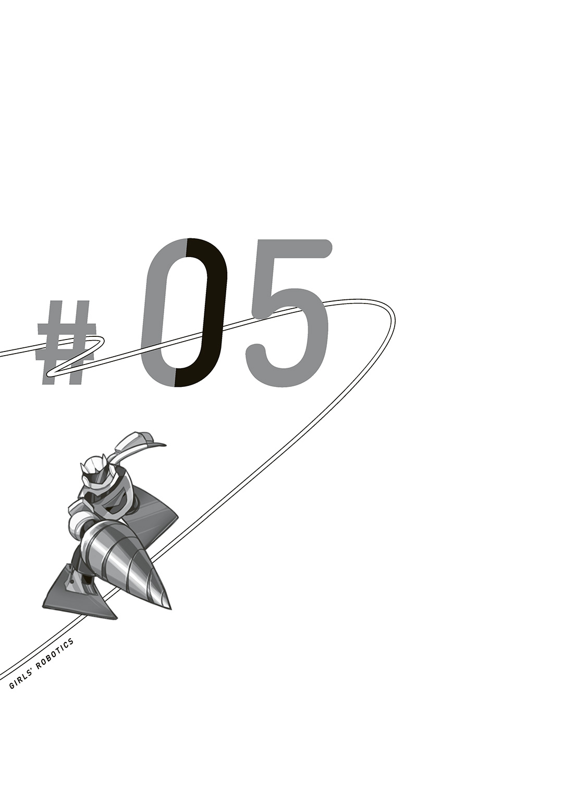
先に到着していた久穏たちと、会場である市営体育館の入り口で合流。
受付で出場ロボットにレギュレーション違反がないか係員に入念にチェックをされたあと、工具などの荷物の入った段ボール箱を抱えて会場に入る。
バレーボールコート四面ほどの広さの体育館には、ロボットが戦う三メートル四方のフィールドが二つ用意されていた。
壁際では各チームがすでにロボットの最終調整や動作チェック、作戦会議を行っている。
揃いの制服を着た男子学生のチームが多数と、他には顔のよく似た父と息子の親子ペアや、ワイシャツ姿の会社員チーム。多種多様なチームが揃っている。チームの数だけロボットがあり、考えがあり、戦略がある。共通していえるのは、みな一様に真剣な表情で自分たちのロボットを少しでもよいコンディションで戦わせてやろうと取り組んでいる貪欲な姿勢だけ。
僕たちも空いていた壁際のスペースに荷物を下ろし、さっそく準備に取りかかる。
「うぅ、すごい武者震いしちゃいます」
「ね、ねぇ悠ちゃん、なんかあたしらすごい見られてない？」
「まぁロボットやってるのってほとんどは男の人だからね。女だけのチームなんて僕らだけだからもの珍しいんだよ」
「......はぅ............」
初めてのロボットコンテストの雰囲気に吞まれてみんな緊張した面持ちだ。珊瑚なんかは身を震わせながら、僕の制服の裾をつまんで後ろに隠れるようにしている。
ただでさえ女性の人口の少ないロボット競技。女性というだけで奇異の目に晒される。女性ばかりで構成されたチームとなればなおさら目立つだろう。
「なんかあたし、男に囲まれすぎて体が疼いてきたわ......」
シュッシュッと、風切り音をさせておもむろに正拳突きの型を始める紫呉である。
「ちょっ、紫呉、暴力沙汰は勘弁してよ。試合どころじゃなくなる」
「悠さん、あそこ」
久穏の指さした先、僕らの待機場所からさほど遠くない位置にいる十人ほどのグループのなかに、背の高いイケメンの男子高校生、矢民透の姿があった。
あれが海原のロボ部か。それにしては人数が少ないのは選抜されたメンバーだけだからだろう。
もの珍しさから観察していると、透と二人の部員が話している声が、自然とこちらまで聞こえてくる。
「部長、チェック終わりました」
「なにか異常でもあったのか？」
「電気系統に問題ありません。四番の関節のレスポンスがやや悪いので、いま予備と取り換えているところです。一応報告をと――」
「馬鹿が！ 勝手なマネはするな！ なんで僕の指示が待てない！ 無理に触ってほかに影響が出たらどうする！」
「も、申し訳ありません......」
「お前たちは黙って俺の言う通りにやればいいんだ。早く見せろ」
叱責を受けた部員二人はまるで家来のように頭を深く下げたが、透はそんなことは気にもせず、自分の手で調節を始めた。
「あんな言い方、ヒドイです......」
久穏が悲しげな表情で、だれにともなく呟くのが聞こえた。
本番前の独特な張りつめた空気。
ふと見上げると上階の観覧席は応援や見物人、カメラを携えた取材陣などで埋まっていた。試合が始まれば彼らの注目を一身に浴びることになる。みんな、とくに珊瑚がプレッシャーに押しつぶされなければいいのだが......。
しかし、僕たち以上に目立つ存在の登場により、その不安は解消された。
お前はいったいどこの社交パーティーにお呼ばれしたのかと言いたくなるような派手なドレス姿の矢民薫である。ドレスの胸元は大きく開け放たれ、彼女の豊満な体つきを惜しげもなく見せつけていた。
一瞬にして会場の男どもの視線をすべてかっさらっていった。もちろん僕もそのうちの一人である。なんというか、本当にごちそうさまです！
むしろ注目を集める自分を誇るような笑みを浮かべて悠然としている薫。
「ちょっと、なんなのアレ、やっぱ金持ちは食べてるものが違うからなの？ 高級食材は胸を育てるの？」
「さ、さぁ」
「あの女を見てると、この程度で緊張してる自分がアホらしくなってきたわ」
自分の胸に手を当てて恨めしそうな視線を向ける紫呉。その視線を感じ取ったのか、薫がこちらに気づき歩み寄ってくる。
会場がどよめいたことで透も薫の存在に気づいたらしく、一緒になって僕らの元へ一直線に駆け寄ってきた。
「よかった！ また会えてすごく嬉しいです。あのあと毎日あの店に通ってたんですけど会えなくて。一回戦、お互いに全力で頑張りましょう」
部長の久穏を差し置いて真っ先に僕に話しかけてくる透である。
透の純真な瞳から察するに、薫は彼に僕らとの一件を知らせていないらしい。
毎日店に通っていたという発言に若干のストーカー的要素を感じなくもないが、相変わらず爽やかで友好的な透。対照的に、薫のほうはといえばさっそく久穏と一触即発の空気になっていた。
先に嚙みついたのは久穏のほうだった。
「ここはダンスパーティー会場じゃありません！ ロボット大会です！ ドレスコード間違ってます！ ロボットが主役なんです！ あなたじゃありません！」
「透の晴れ舞台ですもの。それに見合った恰好をしているまでです。見られて減るものでもありませんし」
「減れ！ おっぱい自慢反対です！」
「あらあら、嫉妬かしら？」
「ぐぬぬぬぬ......」
胸に関しては勝敗がハッキリしすぎているせいか、久穏が一方的に言い負かされそうになっている。
まったく、減るもんじゃないなら少しくらい触らせてくれてもいいじゃないか。
「大丈夫だよ、久穏には久穏のいいところがいっぱいあるの僕は知ってるから」
「うぅぅ......」
「そういう悠ちゃんも胸盛ってるクセに」
「紫呉さん!? 秘密にする約束だったでしょ！」
『ウチも小さいから。気にしないで』
「あ、ありがとう......」
珊瑚の優しくて控えめなフォローに癒されていると、横から真剣な表情の透が僕の手を握ってきた。
「あ、あの！ 樋口さん！ お、俺も胸で人を判断しませんよ！」
「そんなこと言われても嬉しくないし寄ってこないで！ っていうか、キミもお姉さんを止めて！」
「あっ、はい。姉さん、なんだかよくわからないけどそのへんで......」
僕の言葉を受けて透は姉をなだめるように久穏から引き離す。
「姉が失礼なことを言ったようで、申し訳ありません。恥ずかしい限りで......」
プンスカ怒り続ける久穏と、ペコペコと頭を下げる透。年下の女の子に頭を下げさせられる透がなんだか不憫に思えてきた。
「......姉は身内のためとなると熱くなりすぎるきらいがあって、だから対戦相手のみなさんに対してキツくあたってしまうのも、俺のせいなんです」
海原のやり方はともかく、彼がモノ作りにかける情熱も純粋なものだ。
同時に薫の気持ちもなんとなくわかる気がした。競争の厳しい環境で一人で戦っている透を間近で見ているからこそ、どんな手を使ってでも応援してやりたいのだろう。僕らに強く当たるのは、弟への愛情の表れ。
姉も、弟も、純粋で不器用なのだ。
「俺、負けませんから。本気なのは俺だって同じです。正々堂々戦って、樋口さんたちを倒してみせます。それで、もし俺が優勝したら、そのときは俺......樋口さんに――」
目線を逸らし、うっすらと頰を染める透。
大量にミミズの入れられた風呂桶に浸かったような、おぞましい感触が僕の全身を駆け抜けた。
おいバカやめろ頼むから。
頼むから！
気づけ！ お前だけは気づけ！ 僕は男だと！
「ふむ、そういうことですのね」
僕と透を交互に見、なにかを察した様子の薫は、僕にだけ聞こえるように声を潜めて話しかけてきた。
「昨夜、透が勝てばなんでも言うことを聞くとおっしゃいましたわよね」
「言ったのは僕じゃなくて久穏だけどね」
「そうでしたわね。......というか、あなた、人と話す時は胸元ではなくて顔を見て話しなさいな。ゲスな殿方じゃあるまいし」
ガン見してるのがバレバレだった。
ゲスな殿方です。すいません。
「ずいぶんと透に気に入られているようですし。あなた、透の彼女におなりなさいな」
うぁあああああああああああああああああああああああああああああああああああああああああああああああああああああああああああああああああああああああああああああああああああああああああああああああああああああああああああああああああああ！
空から降ってきたボーリング玉が脳天に直撃したような気分だった。
危うく卒倒しかけて棒きれのように倒れそうになったところを、後ろにいた久穏に支えられかろうじて己を取り戻す。
「透もそろそろ女性の扱いに慣れてもらわねばなりません。あなたはそのための練習台になってもらうことにします。透にとっても趣味の話のできる女性のほうが話しやすいでしょうし。あなたにとっても、ロボット部の相手をしているよりずっと有意義な時間が過ごせますわよ。一流企業の次期社長とおつき合いができるのです。光栄に思いなさい。せいぜい私のように女を磨き、透に飽きられて捨てられないよう努力することですわね」
僕が心の中で絶叫しているのも知らず嫌味ったらしく吐き捨てて、オホホホホと高笑いする薫。
いや、あなた笑ってる場合じゃないですよ！ 自分の弟の恋人に男をあてがおうとしてるんですよ！
「念のために言っておきますけど、約束を反故にしようなんて考えないことですわ。そんなことをすれば、矢民グループの力を使って草の根を分けてでも必ず見つけ出して、裸に剝いてさしあげます」
絶対に負けられない。
この試合、なんとしても勝たねばならない。
僕のためにも、そして透のためにも。
もし透が勝つようなことになれば、僕らは二人とも不幸になる。それだけはなんとしてもそれだけは阻止しなければばばばばば......！
「では、私は上でゆっくりと観戦させてもらいますわ。透、きっとあなたが勝つと信じていますわ。頑張ってらっしゃい」
「あぁ、ありがとう姉さん」
「久穏さんも尻尾を巻いて逃げるならいまのうちですわよ」
「あなたこそ大きな胸していられるのもいまのうちです！」
それを言うなら胸じゃなくて顔だろうというツッコミは入れないでおく。
◇
ここで大会の形式とルールの確認をしておこうと思う。
トーナメント方式で、試合は相手を転倒させるかリング外に落とせば一本、二本先取で勝ち抜け。ワンラウンド五分。タイムアウトは三分、一試合に双方一度だけ使用できる。
ロボットの全長・重量・接地面積などの細かいレギュレーションはすでにパスしている。
相手ロボットの破壊を目的とした武器の使用、及び飛び道具の類は禁止。
早い話がロボット同士の純粋な取っ組み合いである。
取っ組み合いになれば、単純に体が大きくて重いロボットが勝つと思われるかもしれないが、決してそういうわけではない。
機体を重くすればそれだけ行動は遅くなり、背を高くすれば重心が高くなり転倒しやすい。つまるところ、大事なのはバランスなのだ。
アルジャンの身長は全長２４センチの重量が約１・１キログラム。今大会の全高・重量の上限は、４０センチ・３キログラムであるので、タイプとしては軽量級の部類である。しかし、左腕のドリルに取りつけた高トルクモーターの影響で重心が不安定になっている点が心配だ。
パワー勝負よりもフットワークのよさを活かしていくのが理想だろう。だからこそ、アルを操る操縦者の立ち回りが重要となる。
「それではこれより『桜樹女子高校ロボット部・アルジャン』対『海原大学付属高校ロボット部・ヘヴィゴリアス』の試合を開始します」
審判の声に従い、久穏がアルをステージ上のスタート位置へとセットする。
いざ戦いに臨まんとするアルの目の前に立ちはだかったのは、黒く重厚な壁。
矢民透の作りあげたロボット。
まるで戦車のようなメタリックな装甲。大型重機のユンボを連想させる長く太い二本の腕、その先にはまるで肉食恐竜のアギトのような大きなハサミ型のブレードが装備されていた。
飾りとわかっていても思わず萎縮してしまうような勇ましい頭部パーツが、あざ笑うかのように遥か高みからアルを見下ろしていた。
圧倒的な存在感と威圧感。
大会の規定ギリギリの大きさと重量を意識して作ったのだろう。力こそ正義の完全なパワータイプ。
あの巨人のようなロボットをアルが倒すことなんて、本当にできるのだろうか。
アルを操るワイヤレスコントローラーを握った久穏の肩がかすかに震える。
ブザーと同時に透の操るヘヴィゴリアスが一直線にアルめがけ突進を敢行。重量級のくせに想像以上に速い。
それを見て久穏はサイドステップでアルを逃がし、衝突を回避。
軽量のアルはフットワークのよさだけは負けない。
避けたのは懸命な判断だ。正面からまともにぶつかっても勝ち目はない。まずは様子を窺って、弱点を探るのが上策だろう。
「さぁ透！ やっておしまいなさい！」
観客席から聞き覚えのあるキンキン声の声援が飛んでくる。
向こうはおそらく、あの巨大なブレードで相手を摑んで強引にパワー勝負に持ち込み、あとは持ち前の体重でねじふせるという作戦だろう。
アルがあの腕に捕まったらひとたまりもない。
しかも、フィールドはそれほど広くはない。
「動きのクセは見きりましたよ」
アルも相手と一定の距離を保とうとするが、ジワジワと外縁へと追い詰められていく。足を踏み外して落下すれば、自滅となってしまう。
「久穏、反対側へ抜けて！」
「ハイッ！」
間一髪、ブレードがアルの胴体をかすめる。
すんでのところでゴリアスの脇をすり抜けて、ステージ中央へと逃れる。
「俺は一途な男ですから！ どこに逃げたって必ず捕まえてみせます！ 見ていてください樋口さん！」
透がなにか言ってるけど聞こえないフリをしておく。
すぐさま追撃を開始するゴリアス。目標に向けて突撃する様は気性の荒い闘牛のようだ。
アルの歩行パターンは前後左右への移動のみ。
斜めに移動したいときは、まずその場で足踏み旋回してから移動を開始しなければならない。一度の操作で素早い斜め移動ができないのだ。
相手の正面から側面に回り込みたいとき、その制約が足枷になって追いつかれてしまう。これでは反撃に転じる余裕なんてどこにもない。
「クソッ......！」
思い通りにならないことに焦りを覚えているのだろう、久穏の声に苛立ちが混じる。
こちらの行動パターンが読まれつつある。ついにアルがゴリアスの魔の手に落ちた。
ゴリアスの二本のアームがアルの胴をがっちりと摑んで締めあげる。久穏はコントローラーから命令を出し続けるが、必死の抵抗も虚しく敵の手の中でもがくアル。
ゴリアスはがっしりとアルを摑んだまま、その場で上半身だけをぐるぐると回転させる。
「俺の気持ち、受け取ってくださぁぁぁああい！」
砲丸投げの砲丸のように放り投げられたアルが、きれいな放物線を描いて宙を舞う。
いくらアルが軽いとはいえ、ダウンさせるどころか相手を一気に場外まで吹っ飛ばすなんて。
「あいつ、どんだけ馬鹿力なのよ......」
紫呉の力ない呟きは、ブザーの音にかき消された。
審判が一本をコールする。
驚きのあまり固まっていた紫呉と珊瑚が我に返ったようにステージ外で仰向けに横たわるアルに故障がないか駆け寄った。
あともう一本取られたら透の勝利、すなわち僕らの負けが決まる。
地獄に繫がる沼に片足を突っ込んでしまった。
「オーッホッホ！ ほら見なさい！ これがエリートと落ちこぼれの力の差ですわ！」
負ければ僕は透の彼女に......。
透と僕が夕暮れ時の喫茶店で向かい合ってハート型のストローでカップルのようにジュースを飲むという無駄にリアルな光景が脳裏をよぎる。
うっ......いかん、吐き気と眩暈が......。自分の想像でなに自爆してるんだ僕は。
しかし、精神的に苦しんでいるのは僕だけじゃなかった。いや、むしろ彼女のほうが重傷かもしれない。
僕は審判にタイムを申告して、久穏の元へ走った。
「どう、しよう......私、このままじゃ......」
まるで凍えるように震える体、強張った表情。
操縦者としての責任感。もう後がないというプレッシャー。そしてなにより、歴然とした圧倒的な力の差が、久穏を追い詰め苦しめていた。
諦観に押しつぶされて闘志の火が消え失せ、気持ちが折れかかっている。
「......久穏ちゃん」
「......ぁぅ............」
点検を終えてアルを抱えた紫呉と珊瑚も、不安げな面持ちで集まってくる。
「......近づいたらやられちゃうし、逃げたって追いつかれちゃいます。無理、です。あんなの勝てない......私が下手くそだから――」
「とうっ」
「ぎゃぴっ！」
ぐじぐじと泣き言を並べる久穏の頭に、強めのチョップを叩き込んでやった。
目尻に涙を浮かべた久穏が頭頂部をさすりながら、僕を非難する。
「痛いですッ！ なにするんですか！」
「言ったでしょ。いまの久穏はもう独りじゃない。僕たちは仲間なんだ。困ったときは素直に頼ってよ。......やっとの思いでここまできたんじゃないか。キミの憧れたアニメの主人公はこの程度でへこたれるような奴だったのか？ 主人公がピンチのとき、仲間は見ているだけだったのか？」
久穏の戸惑うような視線が、僕を見上げている。
「だから、一人で背負い込もうなんて思うな。一人で勝とうなんて思うな。僕らは四人でチームなんだろ。このくらいで弱気になんてなるな。投げ出すな。......久穏はここであきらめたら後悔しない？」
「......します。たぶん、一生。............あきらめたく、ないです」
体の震えは止まっていた。久穏の瞳に再び光が戻ってくる。
大丈夫。まだ負けが決まったわけじゃない。
「珊瑚、あれを使おう。珊瑚はノートパソコンの電源を入れて、プログラム立ち上げて。紫呉はアルのマイコンを予備のやつと入れ替えて」
「よ、よくわかんないけど、わかった」
僕の指示を受けて、珊瑚と紫呉が一斉に動く。
マイコンはプログラムを記憶しておく回路の中枢。それを入れ替えるということは、ロボットの魂を入れ替えるということ。
アルは生まれ変わる。
「な、なにするです......？」
「久穏はこっちきてこれを体につける。急いで」
あれのことを知らずあたふたしている。僕は荷物の中からあるものを取り出し、彼女に手渡した。
それを受け取った久穏は、間の抜けた顔で小首をかしげる。
「なんです、これ......？」
これこそが形勢逆転の秘策。僕らの最終兵器だ。
◇
遡ること数日前。
珊瑚が僕にお願いしたいことをパソコンに表示した。
『本当のバスケじゃなくて、バスケにそっくりなことというか、しぐちゃんがバスケをしている気分を味わえるようなものを作りたいんです』
「バスケをしてる気分？」
珊瑚の僕に伝えたいものがどういうものか測りかねて、オウム返しに訊いてしまった。
『なんでバスケを辞めちゃったのかは教えてくれないんですけど、しぐちゃんはわかりやすいから、まだバスケに未練があるのは見ててわかります。だから、もししぐちゃんの動きをそっくりそのままロボットがマネできるようになったら、普通の試合とは違うけど、もう一度バスケができるんじゃないかなって思うんです。悠さんの作った動くゴミ箱を見たときに、なんとなく思い浮かんだんです。ボールをキャッチしたり投げたりできるロボットがあれば、って』
「そうだったんだ......」
『しぐちゃんにとってはよけいなお世話になっちゃうかもしれないですけど、それができるなら作ってみたいんです』
いまの時代、自分の体をコントローラー代わりにして遊ぶいわゆる体感ゲームとかもあるから、不可能というわけではない。しかしそれを僕らにも再現可能な技術レベルを使って、しかも低予算でということになると、かなり方法が限られてくる。それも通常の作業と並行して行うとするとそれだけ労力を払うことに――、
なんて、僕が眉間に皺を寄せて頭を悩ませていると、
「......だめ、ですか？」
なんというか、それは反則だろう。
すがるような上目遣いでそんなことを言われたら、たとえ火中の栗を拾えと言われてもむしろ喜び勇んで拾いまくるに決まってる。
それに、この子が声を出すのはそれだけ真剣な思いがあるときだけだということを、僕は知っている。
こうして僕は珊瑚のお願いにつき合うことにした。
◇
「なんです、これ......？」
久穏に手渡したのは一見なんの変哲もない手袋と運動靴、そしてベルトだった。
「このグローブとシューズとベルトには、三軸方向の動きを感知するワイヤレスの加速度計が仕込んであるんだ」
「か、かそくどけい？ さんじく？」
「複数の加速度計が検出した数値を一度ノートパソコンでそれぞれ分析して、その値に応じてロボットが動くようになってるから」
「えっと......」
「ともかくこれを着けた人間がパンチすればロボットもパンチするんだよ。キックもステップも同じ」
コントローラーを使ったややこしい操作なんていらない。直観的にロボットにやらせたいことを、自分がやればいいんだ。
ボタンを押すだけの単調な操作ではできない、細かな動きができるはずだ。
「これはもともと、珊瑚が紫呉のためにロボットの体でバスケを楽しめるようにって作ってたプログラムを流用したものなんだよ。それを実験的にアルの体で動かせるように試作してたんだ。今日の試合でも使えるようなら使おうって」
本当は動作チェックもすませておきたかったのだけれど、結局時間がなくてできていない。だけどコントローラー操作で戦い続けても勝ち目がないのは明らか。出し惜しみなんてしていられない。
ぶっつけ本番。一か八か、これに賭けるしかない。
「えっ、悠ちゃんと珊瑚ちゃん、あたしに内緒でそんなの作ってたの？ なんかちょっとだけ疎外感......」
「いや、変なとこでナイーブにならないでよ......。本当はサプライズにするつもりだったんだよ。秘密にしてたのは謝るけど、紫呉のためにと思ってのことだから」
久穏がシューズを履き替えたのを見計らって、最後の秘密兵器を取り出す。
「それとこれ、ＨＭＤ。ヘッドマウントディスプレイの略ね。ほら、最近ＶＲとかって流行ってるやつ。これ頭につけて」
ＨＭＤは、大雑把に言えばメガネ型のスクリーンだ。アルの頭部に埋め込んだマイクロカメラの映像が映るように設定されていて、アルの視点を臨場感たっぷりに味わうことができる。ちなみにこれも珊瑚のアイデアだ。
「なんかそれ、穴のない双眼鏡みたい。なんか微妙にダサくない？ 『Ｘ―ＭＥＮ』でこういうのかけてる人いたよね。目からビーム出す人」
おいおい、紫呉さん。ふざけるなよ。サイクロップスがダサいみたいな言い方はやめろ。サイクロップスはカッコイイだろうが。
先生から渡された軍資金のほとんどを注ぎ込んだ最終秘密兵器だ。うまくいってくれなきゃ泣くぞホント。
「操作感と距離感は自分で摑んで慣れて。もうタイムは使えない、プログラムの調整は珊瑚が無線でするけど、最初は久穏がアルに合わせてやって」
「わ、わかりました」
「このロボットは、僕一人じゃ絶対に作ることができなかった。久穏一人でも同じことだよ。僕たち四人だから、みんながいたからこそ、アルは生まれたんだよ。アルを信じて思いっきりぶつかっていけ！」
久穏が体を作り、珊瑚が魂を宿し、紫呉が頭脳を与えた。
アルは紛れもなく、桜樹女子ロボット部全員で作りあげたロボットだ。この小さなロボットには、全員の思いがたっぷり詰まってる。
努力と情熱を注げば、ロボットは必ずそれに応えてくれるはずだ。
「で、でも、私、勝てるかどうか......」
「......久穏さん。あの、ね」
観衆のざわめきにかき消されそうな声。くいくいと、久穏の服を引っ張る珊瑚。
「......ウチもしぐちゃんも、久穏さんのおかげで、変われました。......やりたいことを、見つけられました。久穏さんに声をかけてもらえた、から......だから、ここにいるんです。......こんなことしかしてあげられない、けど。......ウチ、頑張って作ったから、もう一度だけ、頑張って......もう一度だけ、戦って。アルを、勝たせてあげて。久穏さんが戦ってくれたら、後悔しないから。久穏さんなら、きっとできます」
「珊瑚さん......」
久穏のやる気によって始動したロボット部だ。このチームの動力源は紛れもなく彼女だった。最後までその役目を果たしてみせてくれ。
古いしきたりの家から逃げてきた久穏。いまこの瞬間こそが、逃げずに戦うべき時。
ここに来たのはただ逃げるためじゃない。ここにいるのは間違いじゃない。
それを証明してみせてくれ。
さあ、ドリルを掲げろ。
あえて困難へ踏み出す覚悟を。分厚い壁に挑み、打ち砕く意思を。どんな相手にも立ち向かう勇気を。
ドリルはヒーローの魂だ。
「......わかったです」
決死に思いを打ち明ける珊瑚の姿にやっと覚悟が決まったのか、久穏は自分の頰をバシバシと叩いて気合を入れ直すと、大きく目を見開いた。
「......思いっきり、やってやります！」
タイムの終了を告げる審判に促され、アルを再度スタート地点に配置。
一方の久穏はＨＭＤ、グローブ、シューズ、ベルトを装着し、体を動かしやすいスペースへと移動。
コントローラーを持たないどころかステージから離れた場所に立つ久穏の姿に、会場がざわつく。
ブザーが鳴り、第二ラウンドが幕を開ける。
先に動いたのはアルのほうだった。一直線にゴリアスの胸めがけて突っ込んでゆく。
迎撃のためにゴリアスは片腕を突き出す。が、
「遅いですよ！」
腕を払いのけ、相手の懐へと潜り込んだアル。近すぎる距離では自慢のブレードも使えない。すかさずドリルによる連打を叩きこむが、それでもゴリアスはビクともしない。
「こいつ、おっきすぎ、です！」
体重に差がありすぎて衝撃が跳ね返されている。ただの打撃は通用しない。
アルを振り払おうと腕を大きく振りかぶるゴリアスを見、アルは素早く転身。相手の側面へと回り込む。
傍から見たら、おかしな恰好をした久穏がやたらダイナミックなシャドーボクシングをしているように見えるだろうけど、そうじゃない。
久穏の動きに合わせてアルが前後左右、縦横無尽にフィールド上を走り回り、敵を翻弄している。
ロボットとは思えない自由で機敏な足運び。それこそ中に人間が入っているんじゃないかと思わせるような動きだ。
「動かし方、わかってきました」
アルの重心の位置、関節の動かせる範囲、操縦者の動きとのタイムラグ。早くもアルの動きに順応し始める久穏。
僕を実験台にした数回の実験だけで、これだけの精度の高い動きを再現できるプログラムを組める珊瑚も十分恐ろしいけど。初めてでこれだけ自在にアルを動かしてみせる久穏も普通じゃない。
ちょこまかと動き回るアルを捉えようと、幾度となく腕を突き出すゴリアス。久穏はそのパターンを見極め、必要最低限の動きでひらりとかわしていく。
そしてついにチャンスが回ってきた。
「押してダメなら引っ張っぱります！」
自身に向かって伸びてきた腕をかわすと同時にそれを脇に挟み、綱引きのように後ろへと引っ張る。
巨体がつんのめったように前方向へ傾いていく――が、ゴリアスは両足を前後に広げて腰を低くし、バランスを確保。不動の岩山のように防御の構えを取る。
「あぁもう、あと少しで引き倒せてたのに......！」
紫呉が悔しそうに声を漏らす。
「いまの動き......。体が傾いたら自動的に体勢を整えてバランスを保つように、あらかじめプログラムに組み込んであるんだ」
「なにそれ、ダルマみたいじゃん！ よくわかんないけどなんかずるっこい！」
その喩えは言いえて妙だった。
ゴリアスは図体がデカくて足が遅い分、攻撃の回避は不得手だ。それを補うための自動姿勢制御プログラム。自機の姿勢を検出し、倒れそうになったら即座に姿勢を変えて、自動的にバランスをキープする。
ロボットが自分でバランス管理をしているから、操縦者の油断や隙をついても無意味。操縦者は攻撃にだけ専念できるというしくみだ。
防御面の不安はすべて解消されている。敵ながら見事な手法だ。これは本当に手強いぞ。
打撃ではビクともせず、組み技にも対処できる。
見た目通りの馬鹿力。計算されつくした鉄壁の防御プログラム。
しかし――、
その壁を突き崩す武器を、偶然にもアルは持っている。
あのパーツがどこにあるかさえ判明すれば、勝機はある。
「久穏！ そのまま逃げ回って時間を稼いで！ それと、アルの動きの誤差を珊瑚に伝えて！ 秘密兵器は温存！」
「了解です！」
「珊瑚は久穏の報告からプログラムの修正、頼んだよ」
視界の端で珊瑚が力強くうなずく。
「紫呉はゴリアスのことを見て、各部位の寸法、部品の刻印や特徴を僕に知らせて！」
「わ、わかった！ えぇっと、全高４０センチ、肩幅２５センチ、脚の長さが――」
僕は手元にあったノートにゴリアスの三面図のスケッチを描きなぐって、紫呉の読みあげる数値をそれぞれの箇所に書き入れていく。
各種パーツの種類・配置・寸法・材質。見た目からでも、判別できる情報は多い。
記憶と計算と経験則と勘、僕の持つすべてのロボット知識をフル活用。
わかる部分を埋めてわからない部分のヒントを得る、クロスワードパズルを解く要領で、スケッチを情報で埋めていく。
レントゲン撮影みたいにゴリアスの中身を丸裸にしてやる。
「珊瑚さん！ 左の腕、私が思ってるより下になってます！ それから、まっすぐ右に跳んだとき、ちょっとだけ体、前に進んじゃいます！」
久穏の声を受けて、珊瑚の指が踊るようにキーボードを叩く。プログラムが更新されるたびに、アルの動きがより機敏に、無駄なく、研ぎ澄まされていく。
「悠ちゃん、見えた！ あいつの腕のとこ、黒いサーボモーター使ってる！『ＮＸ５』って書いてあるラベルあった！」
「でかした！」
ってことは西之製のモーターだ。ということは、他の箇所も同じメーカーの部品が使われている可能性が大きい。腕のモーターの型式が割り出せた意義は大きい。
こっちは十年近く機械弄りやってんだ。よくロボットに使われるパーツの基本スペックぐらい頭の中に染み込んでる。
「寸法４３・４×３２・２×３３・０ミリメートル。重量６１・３グラム。最大トルク３０・６――いいモーター使いやがって、贅沢だなあんにゃろう......」
例のあのパーツはきっと胴体のどこかに配置されているだろうと僕は踏んでいた。
肩の幅からモーターの寸法を差し引いて、残った空間。そこにさらにバッテリーや回路が入るとして――、見つけた。たぶん、ここだ。
「久穏！ 必殺技！ 胸のど真ん中にぶっ喰らわせてやれ！」
「ハイッ！」
アルの左腕のドリルが始動。待っていましたと言わんばかりに旋風を巻き起こし駆動音をあげる。
ゴリアスの猛攻を潜り抜けて、一気に踏み込むアルジャン。
「――アルジャンドリルブレイク、です！」
フランス語と英語がごっちゃになった必殺技（久穏命名）を叫びながら、突き出された銀色のドリルが、ゴリアスの胴体を撃つ。
ゴム製のドリルに破壊力なんてものはない。だけど、力強い回転と、激しい振動は立派な武器になる。
「効きませんよ！ そのくらいじゃ俺は――なッ!?」
透の目が驚きに見開かれる。
本来なら体が傾くと自動的に姿勢を元に戻そうとするゴリアスが、まるで立ったまま眠っているかのように沈黙していた。
「な、なんで......！」
「なにが起こっていますの！」
透は手元のコントローラーを必死に操作しているが、ゴリアスがそれに従う気配はない。
アルジャンは左手のドリルを押し当てたまま、反対の右腕を後ろに引き、力をためる。
「ぶっ飛ぶです！」
硬直するゴリアスに会心の右ストレート。
大岩のような体軀が後ろに傾き、ずしん、と鈍い音を立ててついにゴリアスは仰向けに倒れた。
大気が震え、体が痺れるほどの、割れんばかりの歓声。
久穏の大活躍のおかげで、いまや僕たちは会場中の注目の的。華のある美人学生が全身を使い懸命に闘うさまに感化されたのだろう。一回戦とは思えないほどの盛りあがりを見せていた。
ブザーが鳴り、僕たちに一本が入る。これで追いついた。
「ぃよっしゃー！」
「............っ！」
珊瑚を思いきり抱きしめて喜ぶ紫呉と、紫呉の胸で窒息しそうになってバタバタと手足を振る珊瑚。
「やりましたー！ ......でも、なんであっちのロボットは固まっちゃったんですか？」
「ゴリアスのジャイロセンサーを、ドリルの振動で無効化させたんだ」
「無効化、ですか？」
「ジャイロセンサーは角速度を検出する装置――人間で言えば三半規管にあたるものなんだけど、そこをドリルの激しい振動によって麻痺させたんだ。検出される数値がぐちゃぐちゃな値なもんだから、自動制御プログラムが混乱して無効になって、結果的にゴリアスはわけがわからなくなって棒立ちになっちゃったんだよ。コントローラーからの指示よりも、姿勢制御のほうを優先度が高い設定にしてあったのが仇になったね。そのせいでコントロール不能になったんだ。機械やプログラムって、こういう融通の利かないところがあるから」
「えっと、要するに？」
『ロボットなのに乗り物酔いしたみたいになったってことですね』
「おー、なんとなくわかりました」
透と初めて街で出くわした日、透はジャイロセンサーを買おうとしていた。だから当然、それがゴリアスに搭載されているのはわかっていた。しかし、その情報だけでは不十分。ドリルの振動をよりダイレクトに当てることが重要だったから、ジャイロの設置場所を正確に割り出す必要があったのだ。
紫呉の目測のおかげでジャイロの位置を特定することができ、珊瑚によって微細な動きができるようになったアルの体を使って、久穏が見事に弱点を突いてみせた。
透がなにか対策を打ってこなければ、次も同じやり方で一本取れる。
喜びに沸くこちらの陣営とは打って変わって、透のほうはさぞ悔しかろうと思いきや、あっさりと一本を取り返されたというのに透の表情に焦りはなく、むしろ余裕さえ見て取れた。
......なんだか嫌な予感がする。
最終ラウンド。
勢いに任せて突貫するアル。しかしそれに対しゴリアスは数歩下がって、静観の構えを見せた。こちらに怖気づいた、というわけではなさそうだ。
接近戦が得意のはずのゴリアスが、自分から距離を空けることに違和感を感じ取ったのだろう。久穏はそれ以上深追いすることはしなかった。
「これは決勝戦が近づくまで隠しておくつもりだったんですけど、悠長なことは言ってられません。全力で行きますよ」
一回戦でアルを放り投げたときと同じように、その場で両腕を広げたまま上半身を回転させるゴリアス。いったいなにを始めるつもりなのかと待ちかまえていると、
「わわっ！」
突如飛来した物体がアルの眼前をかすめ、久穏が反射的に体をのけ反らせた。
「なによ、いまの！」
飛んできたのは急激に伸びたゴリアスの腕だった。
いや、伸びたというのは少し違う。
本体から切り離された腕は胴とワイヤーで繫がっていて、自分を軸にその腕を横薙ぎに振り回すことによって全方向への遠距離攻撃を行うのだ。
まるで鎖鎌を使う忍者のようだ。
近距離特化のパワー型から、全方位の遠距離型にモデルチェンジ。ゴリアスのあの重さは、遠心力に負けないようにするためのものだったのか。まったくデカブツのくせに芸の多いやつだ。
「ちょっと！ 飛び道具禁止じゃなかったの!?」
「いや、一応ワイヤーで繫がってるからギリＯＫってことなんでしょ」
審判が試合を止めないところを見るに、大会側としては容認できる正当な攻撃手段であるということ。
あれだけ速度の乗った物体、体の軽いアルでは受け止めようとしても弾き飛ばされてお終いだ。
「久穏、次が来る！」
「ッ！」
襲いかかる高速のブレード。スレスレのところで回避に成功するも、しかし、やつの腕は二本ある。間髪入れずにもう一方の腕が襲来。
避けきれなかった。
直撃を喰らってアルの体が吹っ飛ぶ。
間一髪、姿勢を低くして防御の体勢を取ったおかげで転倒だけは免れたが、衝撃で大きく後退した。
さらなる追撃を恐れて、フィールドの端へと逃れようとするアル。しかし、
「足が......」
アルの右足がまともに動いていない。
当たり所が悪く、おそらくさっきの直撃で内部のフレームが折れてしまったのだろう。
自重の軽さと外装に支えられてかろうじて自立してはいるものの、片足を骨折しながら戦っているようなものだ。
いっさいの死角がない敵の全方位攻撃。
最大の武器であるフットワークを封じられたアル。
「こんなの......」
こんなの、どうやって勝てばいいんだ......。
ようやく敵の弱点を突き止めたのに、もう近づくことすら許されない。
僕が絶望に膝を折りそうになったそのとき、
「もう逃げません！ 私はもう独りじゃないですから！」
久穏が、アルが、挑むように前へと進み出る。
折れた足でも、力強く前へ。
「ここで逃げたら、また元の私に戻っちゃうです！ なにもできない、空っぽの私に！」
前傾姿勢となって駆けだす。
「――だから、戦います！」
目の前で起こったことが、信じられなかった。
接近を許さない横薙ぎの全方位攻撃。彼女が見つけ出した活路は、空中だった。
片足を折られたはずのアルが空を飛んでいた。
大縄跳びの要領で、ワイヤーが足元に来るタイミングでジャンプすることで攻撃を回避。片足が折れた状態でなぜ飛ぶことができるのか、なぜこんなことが起こっているのか、作った僕にすらわからない。
眼前で繰り広げられる光景に、ただただ息をのんだ。
最後の跳躍は、天にも昇るほどの勢いだった。ゴリアスに常に見下ろされていたはずのアルが、いまは相手のはるか上空を舞っている。
アルが左腕の螺旋を突出し、流れ星のようにゴリアスめがけて落下していく。
それはまるで正義のヒーローの必殺技のように、
「アルジャンドリルブレイク――!!」
渾身の一撃。
顔面への直撃を受けて、ゴリアスののけぞった体軀が音を立てて崩れ落ちていく。
静寂のなか、久穏とアルが天高く左腕を突き上げる。
鳴り響くブザーと、つんざくような歓声と拍手の嵐。いまステージに立っているロボットは、ただ一体のみ。
その光景は、僕たちの勝利を意味していた。
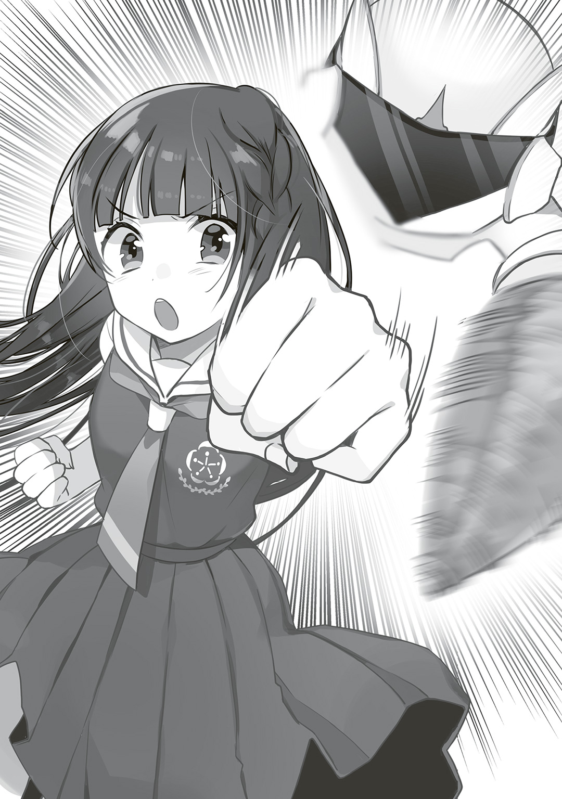
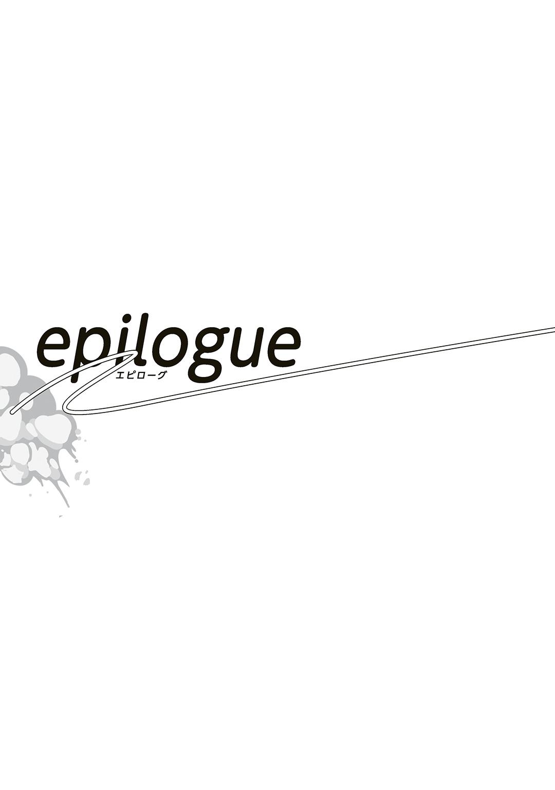
結局、『足が折れたアルがこれ以上戦うのは無理だし可哀想』というみんなの思いから、二回戦は辞退することとなり、試合を棄権することを大会運営側に伝えた。
決してよいとは言えない戦績ではあったが、試合の盛り上がり、そして人間の動きをロボットにトレースするというアイデアが評価され特別賞を勝ち取り、僕らの初めてのロボットコンテストは幕を下ろしたのだった。
先に結果を言ってしまえば、特別賞でも入賞したことに変わりはなく、これを受けて学校側もロボット部の部室没収の取り消しを決定。晴れて桜樹女子ロボット部の活動継続が許されたのだった。
さらに女子だけのチームが名門の海原を破ったことが注目され、大会での僕たちの活躍は、小さいながらも地元新聞の記事になった。
久穏がわんわん泣きながら賞状と楯を受け取った表彰式が終わって、撤収の準備にとりかかっている最中も、みんな興奮がおさまらない様子だった。
『ウチ、こんなに嬉しいの生まれて初めてです』
「すごいじゃん、超かっこよかった！ もう最っ高だったよ！」
久穏の肩に手を回し、彼女の頭をワシャワシャとなでくり回す紫呉。
「あ、ありがとうございます。勝てたの、みんなのおかげです」
「ただ最後のジャンプんとき、久穏ちゃんパンツちら見えしてたけどね」
「ホントですか!? あぅぅ、こんな大勢の人の前で......私はしたない......」
「大丈夫だって。パンツ見られたくらいじゃ死なないって！」
『きっとみんなステージのほうに夢中だったから見られてないよ、たぶん』
「僕見てなかった。紫呉、どんなのだった？」
「し......」
「教えちゃダメです！」
◇
のんびりと片づけをしている途中、トイレに行った帰りに透と出くわして、少しだけ話をした。
「俺、親が金持ちなんですよね......」
「なにそれ自慢？」
「違いますよ。......俺、昔から手先が器用で、書道や絵画や工作のコンクールではよく賞をもらってたんです」
「やっぱ自慢じゃねーか！」
「だから自慢じゃないですって！ 勉強のほうは教科によっては毎回赤点ギリギリですし、とくに運動なんて大の苦手で、ちょっと走っただけで吐きそうになります」
「ふぅん。顔だけはダンスユニットのセンターでキレッキレで踊ってそうなのにね」
「な、なんかさっきから僕に対するトゲがすごくないですか？ それはそれで嬉し......じゃなくて。親があちこちに寄付してるもんだから、俺が得意ななにかで一番になっても、親が金を払ったんじゃないかとか根も葉もないことを言われて、俺はそれがすごく悔しかったんです。だから、実力だけがものを言う海原のロボット部で一番になれば、みんな俺の力を認めてくれるはずだって、そう思って。必死にロボットのことを勉強して、やっと部長になったのに、それがこのありさまですよ」
はぁぁ、とうなだれるように大きくため息をついた。
「あの、部長......」
姿の見えなくなった透を心配して探しにきたのだろう、二人の海原の部員が透に駆け寄ってきた。試合の前に透の叱責を受けていた二人だ。
透は二人の姿を認め、もう一度、今度は小さく息を吐いて、
「帰ったらミーティングだ。次のロボコンについて話し合う。......お前たちの意見も聞かせてほしい」
「俺たちの......？」
透の変化に部員たちは不思議そうにお互いに顔を見合わせたが、透の真剣な表情を受け、「はい！」と気合の入った返事をした。
「樋口さん、俺の代で少しやり方を変えてみようと思います。ＯＢの人たちからはいろいろ言われるかもしれませんけど、やれるだけやってみます」
その表情にはまだ悔恨の色が残っているが、どこか憑きものが落ちたようにも見える。
「次は負けません。そのときは俺の作る新しい海原の力をお見せします。あなたたちに勝って、優勝して。俺、あなたにふさわしい男になります。今度こそ俺の気持ちを、樋口さんに......。その時まで待っててください、樋口さん！」
なにやら不穏な独白と共に颯爽と走り去ってしまった。
いやだからそれやめろ頼むから！
だれも待ってねぇよ！ だれも幸せにならねぇんだよ！ いいかげんにしろ！
あぁ、もう......。これからもあいつに狙われ続けるのかと思うと、それだけで気が滅入ってくる......。
僕が肩をガックリと落としていると、
「樋口さん」
弟と入れ替わりになるように今度は姉のほう、観客席から降りてきた薫と出くわした。
「まだあきらめないなんて。透はよっぽどあなたのことが気に入っているようですわね」
「試合は僕らが勝ったんだから、あいつの彼女にはならないよ」
「わかっています。矢民の名に懸けて、約束を反故にするようなことはしません」
甲高い声でキーキーと叫んでイチャモンをつけてくるかと思ったけど、予想に反して薫の反応は冷ややかなものだった。
「じゃ、じゃあ僕のことは......」
「さぁ、なんのことかしら。私にはわかりませんわね」
「それってつまり......」
僕のことは見逃してくれるってこと、だよな。
「じゃあ約束通り勝者の権利としてキミのおっぱいを揉ませてもらおうか」
「そんな約束していないでしょう！ あなたと話していると調子が狂いますわね......。では、私はこれでお暇させてもらいます。それから――」
ドレスの裾を翻し、僕に背中を向けて、
「楽しませてもらいました。......いい試合でしたわよ」
それだけ言い残して、薫は会場の外へと消えて行った。
自分の言いたいことだけ言ってさっさと消えてしまうあたり、姉弟ともよく似ていた。
◇
会場から出て学校へ戻る途中、笹木先生からのメールの着信があった。
〝お疲れさん。あとはあんたの好きなようにしなさい〟
短いメールには、表彰式で久穏が号泣しながら賞状を受けとっているところを遠目から撮影した写真が添付されていた。
試合に集中してて気づかなかったけど、先生も会場に来ていたのか。いつもぶっきらぼうな態度だけど、僕たちのことを気にかけてくれていたらしい。
よくよく考えれば、彼女たちと出会えたのも笹木先生のおかげなんだよな。それに関しては感謝しなければならないのかもしれない。
好きなようにしなさい、か......。
ロボット部を立て直すという目的は達成された。
僕はこれからどうすればいいのか、なにをしたいのか。もし叶うならば、このまま......と、そう願うのはわがままだろうか。
学園に戻ると、緊張からの解放と徹夜明けの疲労が重なって気力がきれたのだろう、部室に帰ってくるなり紫呉と珊瑚は机に突っ伏して泥のように眠ってしまった。
二人をそっとしておくために、なんとなく僕と久穏は部室棟の屋上へ足を運んだ。
眼が冴えるような鮮やかな夕日が、空をオレンジ色に染めていくところだった。吹き抜ける少し湿気を帯びた風に久穏の黒髪が踊る。
んー、と大きく伸びをして、夕日を眺めながら久穏が言う。
「悠さんのおかげで試合、勝てました。ありがとうございます」
「僕は助っ人しただけ。お礼なら紫呉と珊瑚にしてやってよ。二人ともすごく頑張ってたから」
「違います、そうじゃなくて。私はいま悠さんに『ありがとう』って言いたいんです。ちゃんと受け取ってください」
くるりと振り返り、久穏は不満げな表情で僕の鼻先を指さした。僕はやれやれと肩をすくめながら、
「どういたしまして」
と気の抜けた返事を返した。
「はい」
それでも彼女は満足そうに微笑んで、再び夕日に向き直る。
「大会で入賞したこと、家族にメールしたんです。さっき、その返事がきました。お父さん、『久穏のしたいことをしなさい』って言ってくれました！ お母さんも、『友達を大切にしなさい』って！ 私、休みの間に一度家に戻ります。家族に話したいこと、いっぱいできました。私のやりたいこと、学校のこと、悠さんたちのこと、大会のこと、全部話したいと思います。逃げないで、両親とちゃんとお話しします。あっ、そういえば、実家の近くに睡蓮の咲く大きな池があるんです。きっと今ごろ綺麗に咲いてます。久しぶりにゆっくり見たいなぁ。昔、お母さんと一緒に見に行ったときは――」
自分が学校に残れることと、自分の仲間を認めてくれたのがよほど嬉しかったのか、彼女はずっと喋りっぱなしだった。
自分の家族のこと、生まれた町のこと、自分自身のこと、そして僕たちのことも。
以前は家の話をするだけでもつらそうにしていた久穏の表情が、いまはとても輝いている。宝物を自慢する子供みたいに、誇らしげで楽しそうに。
ひとしきり話し終えた久穏は、んー、と大きく伸びをして言う。
「やっぱり、ロボットはすごいです。私が想像したものが現実になりました。絶対無理だと思ったこと、できちゃいました。こんなすごいこと、知りませんでした。私、これからもロボット部を続けます。だから、もっといろんなこと教えてほしいです。......悠さん、これからも一緒にいてくれますか？」
はにかみながら、久穏が僕に手を差し伸べる。
胸の奥からあふれ出る感情を抑えることはできなかった。
こんな僕を必要としてくれることが、どうにかなってしまうくらい、泣きそうなくらい嬉しくて。まるで燃えるみたいに胸が熱い。
もう僕はどうしようもないほど、彼女たちと過ごす時間を愛おしく感じるようになってしまっていた。
僕がみんなに近づいたのは、理想の美少女アンドロイドを作るのに役立つデータを収集するため。
だけど、ここから先は、それだけが理由じゃない。
......いいよな。もう少しくらい、みんなと一緒にいても。

もう少しだけ、僕は『樋口悠』でいよう。彼女たちの仲間でいよう。
僕たちの夏が終わるまでの時間はまだ残っている。その時間を、僕は目一杯楽しませてもらおう。
残り半分ある夏休みをどう彼女たちと過ごそうか。なにを一緒に作ろうか。僕は考え始める。
僕は久穏の手を取った。
「さぁ、次はどんなロボットを作りましょうか！」
本書は、ジャンプ小説新人賞'14Summer小説フリー部門銀賞受賞作『ガールズロボティクス』を加筆・修正したものです。
著者プロフィール
白木秋 SHIRAKI SHŪ
岡山県出身。
ジャンプ小説新人賞'14 Summer小説フリー部門にて銀賞を受賞。
好きなガンダムは試作２号機。
好きなゾイドはライガーゼロ パンツァー。
好きなメダロットはアークビートル。
火力はロマン。
なこまり NACOMARI
漫画家・イラストレーター。
本書が商業デビュー作となる。
http://nacomari.tumblr.com/
ジャンプジェイブックスDIGITAL
ガールズロボティクス
著 者 白木秋
画 なこまり
© 2016 S.SHIRAKI / NACOMARI
２０１６年12月31日発行
この電子書籍は、ジャンプジェイブックス「ガールズロボティクス」
２０１６年12月７日発行の第１刷を底本としています。
装 丁 高橋健二＋宇和川茜（テラエンジン）
編集協力 添田洋平（つばめプロダクション） 北 奈櫻子
編集人 浅田貴典
発行者 鈴木晴彦
発行所 株式会社 集英社
〒１０１－８０５０
東京都千代田区一ツ橋２丁目５番10号
０３－３２３０－６０８０（読者係）
制作所 株式会社ＩＣＥ
本作品の全部また一部を無断で複製、転載、改竄、インターネット上に掲載すること、および有償無償に関わらず、本データを第三者に譲渡することを禁じます。なお個人利用の目的であっても、コピーガードを解除しての複製は、法律で禁じられています。